| 戦国花嫁 時空を翔ける恋 (ショコラシュクレノベルズ) | |
| 上主沙夜 | |
| (2016) | |
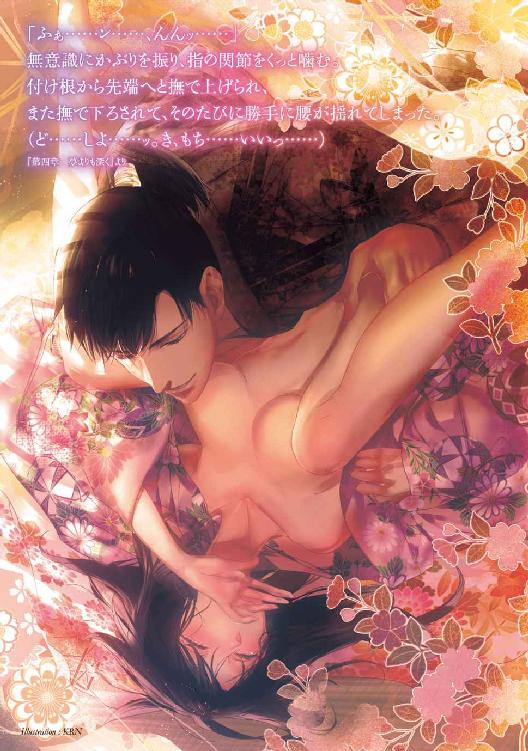
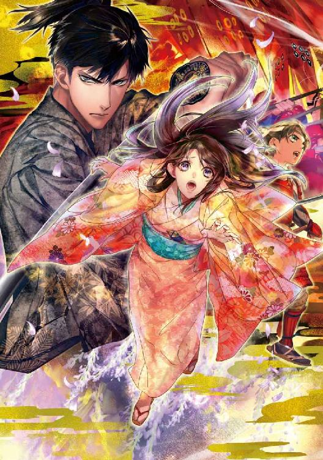
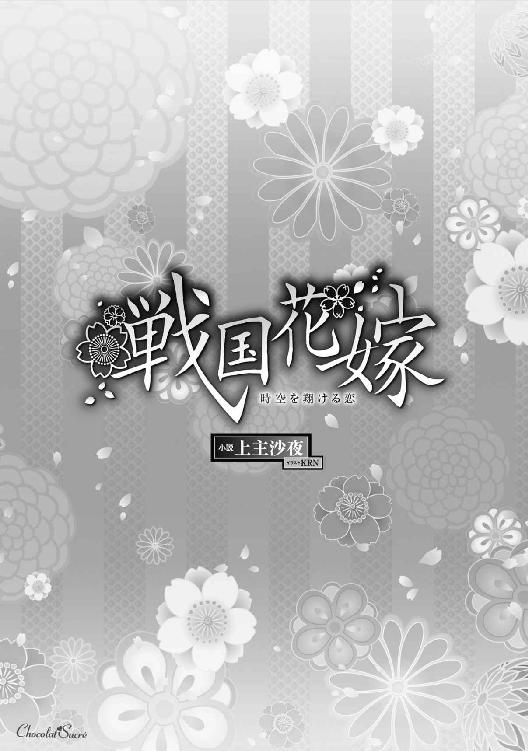
※本作品の全部あるいは一部を無断で複製・転載・配信・送信したり、ホームページ上に転載することを禁止します。本作品の内容を無断で改変、改ざん等行うことも禁止します。また、有償・無償にかかわらず本作品を第三者に譲渡することはできません。
※本作品は電子書籍配信用に再編集しております。
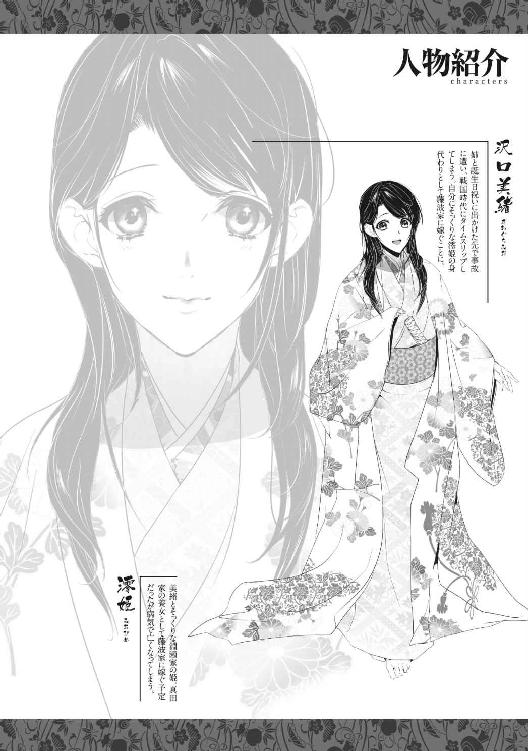
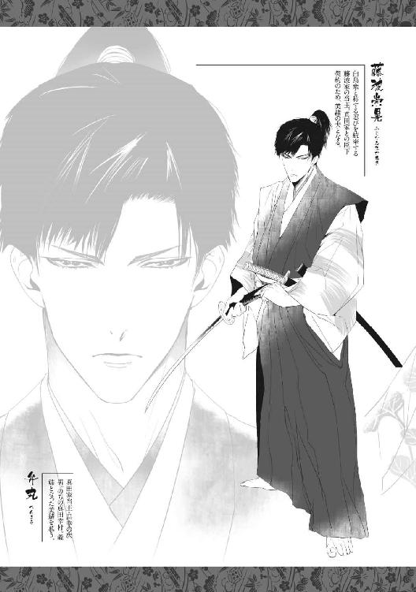
────な......、なんでこんなことにっ......!?
美緒は目の前に置かれた三方を茫然と眺めた。ヒノキの白木で作られた小さな台。こんなもの、地鎮祭とか開山祭とか、神主が執り行う儀式や映像でしか見たことがない。
それが何故か美緒の前に端然と据えられていた。上に載っているのは盃と肴の皿。同じ三方が美緒の両隣と、向かいにもある。
照明は、和紙を巻いた油皿を載せた漆塗りの灯台だけ。部屋の四隅の他、美緒の傍らにも置かれているが、電灯に慣れた目にはいかにも薄暗く、頼りなかった。
座敷には両家の家紋があしらわれた白地の水引暖簾や魔除けの鏡が飾られている。祝い事の席らしく、床の間には餅や干し魚、豆などで作られた手の込んだ品々が飾られていた。
美緒は膝の上に載せた手を、ぎゅっと握り締めた。
視線が落ちるといやでも自分が身につけている白い小袖が目に入り、ますます混乱する。
白い小袖に白い打掛、そして頭には頭巾のように作られた綿帽子。胸元には房のついた筥迫（小物入れ）と懐剣──。
まさしく婚礼衣装だ。こんな古風な恰好、時代劇でしか見たことないけど。
そう、これが時代劇ならどれほどよかったか......。
しかし美緒がいるのは芝居のなかではなく『現実』だ。
美緒が生まれ育った『現代』ではないにせよ、とにかく『現実』なのだ。
これまで幾度朝を迎えても『夢』は覚めず、どんなに頬をつねっても叩いても、この信じがたい『現実』は変わらなかった。
すっ......と障子が開いた。供を従えて入ってきた男が美緒の正面に座る。
おそるおそる顔を上げると、それは風折烏帽子に白い直垂姿の若い男性だった。
若いといっても美緒より五、六歳は上だろう。二十代前半くらいに思える。
鼻筋のすらりと通った、端整な面差しの青年だった。
現代人の美緒から見ても、切れ長の瞳が涼しげな、相当な美男子だ。思わず見とれてしまうと、底光のする黒瞳でじっと見返され、慌てて顔をうつむけた。
（......この人が、あたしの──ううん、澪姫の結婚相手......）
名は藤波崇晃。藤波家の当主。そして、真田昌幸様が配下に加えたがっている白烏衆の頭領──。
（どうしよう......。思ってたよりずっと......かっこいい......かも......っ）
今まで現状把握するだけで精一杯だった美緒には、相手の容貌を暢気に想像している余地など全然なかった。それだけに、望外の美男子で唖然としてしまう。
心臓がドキドキと早鐘を打ち、頬が熱くなる。盃を取るよう侍女に耳打ちされて、美緒はハッと我に返った。縋るように侍女を見たが、無表情に促されただけだ。
仕方なく手にした盃に、酒が注がれる。血の気の引いた顔で美緒は盃を見下ろした。
（......やっぱり......、む......無理......っ！）
これを飲んだら結婚が成立してしまう。今この瞬間に初めて顔を合わせた人と結婚するなんて、そんなの絶対無理無理無理!!
いくら相手が恰好よくても好みのタイプでも、勝手に決められて、お見合いもなしにいきなり結婚だなんて、絶対ありえない......！
（あたし、まだ高三なのに～～っっ）
いったい何がどうしてこんなことになっちゃったの......!?
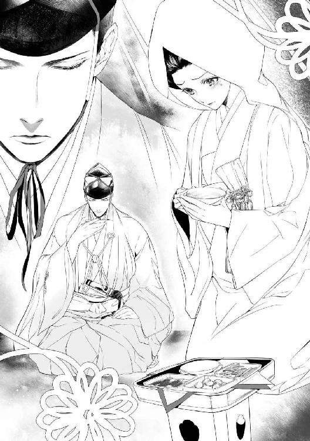
「──姫様」
有無を言わさぬ口調で侍女が囁く。美緒は奥歯を噛みしめ、盃を口許に運んだ。
ええい、こうなったらもうヤケクソよ！
ぐっと盃を干す。
喉を流れ落ちる酒の味は、ただ熱いだけで全然わからなかった。
きっかけは事故──だったのだと思う。
四月二十九日、昭和の日。
それは沢口美緒の誕生日でもあった。せっかくの休日なのに、誕生日のお祝いをしてあげるから、と同居している年の離れた姉に、朝っぱらから連れ出されてしまった。
軽自動車で楽しげに高速をぶっ飛ばす姉を、美緒は横目で睨んだ。
「何よ！ あたしのお祝いじゃなくて、お姉ちゃんの趣味じゃないのっ」
「文句言わないの」
悪びれもせず、カラカラと莉緒は笑った。明るいブラウンに染めたベリーショートヘアで吊り眼気味の大きな瞳をくりくりさせて笑う様は、まさしく確信犯的いたずら猫といった風情。
溜息をつき、美緒は胸元に落ちかかる黒髪を意味もなくもてあそんだ。
莉緒は都内の設計事務所に勤めている。美緒とは七つ違いで、忙しい両親に代わって面倒を見てくれた。現在、両親は海外におり、美緒は姉とふたりで暮らしている。
からっとさばけた性格の莉緒は面倒見がよく、料理も上手い。大好きな姉だが、ひとつだけ困った点があった。何故か異性については大変に移り気なのである。もっとも本人に言わせれば、『運命の相手を探している』とのこと。
学生時代から付き合った男は数知れず、どれも三か月足らずの超短期で終わっている。ちなみにすべて莉緒からのサヨナラだ。それでいて恨まれることなく、なかには友人として今でも付き合いのある人物も複数いたりするのだから、ある意味それも人徳なのかもしれない。
今まで誰とも付き合ったことのない美緒には、そこらへんの男女の機微は正直謎だが......。
莉緒の現在の交際相手は、都内の病院に勤める勤務医だ。共通の友人の紹介という。人柄は悪くないのだけれど、これがまた筋金入りのオタクなのだった。ただしアニメとかではなく歴史。それも戦国武将のマニアである。もっとも嵌まったきっかけはゲームだそうだ。
それにしても莉緒が彼氏の影響で、にわか歴女と化したのには驚いた。莉緒はあまり人の影響を受けないタイプなのに、相性がいいということなのだろうか。あと半月もすれば付き合い始めて三か月。ひょっとしたら記録更新なるかもしれない。
「──なんで水無月さんは来ないの？」
「後から来るよ。メインイベントには間に合わないけどねー。臨月の奥さん抱えた先輩に当番医代わってくれって泣きつかれちゃ断るわけにもいかないっしょ。だからあたしが代わりに武者行列の写真をいーっぱい撮っといてあげるわけ」
「歴オタなんだから、真田まつりなんてもう何度も来てるんじゃないの？」
美緒たちが向かっているのは長野県上田市。毎年この日に行なわれる『上田真田まつり』を見に行こうというのである。
「彼はそうでも、あたしは初めてだもん。お城も見たいしねー」
建築士だけあって、莉緒は古い建造物に関心がある。特に石垣とか石組みが大好きで、両親と南米に旅行した時など、インカ文明の石積みに感動のあまりうっとり頬擦りして気持ち悪がられたくらいだ。
「上田城には真田石っていう、高さが二・五メートル、幅が三メートルもある礎石があってね。三代目の真田信之が松代に移封になるときに持っていこうとしたけど、ビクともしなかったので諦めたっていう悲哀漂う逸話があるのよ～」
「三代目って幸村じゃないの？」
「幸村は次男。真田家三代目はお兄さんの信之だよ。あと、幸村ってのは後世になって付けられた名前で、本名は信繁だから」
「はいはい」
にわか歴女の講釈を適当に聞き流しながら、美緒はガイドブックを広げた。
「──武者行列に鉄砲隊演武かぁ。ふぅん......、けっこうおもしろそう」
「でしょでしょー」
「お昼はやっぱりお蕎麦だよね。あっ、この『みすゞ飴』って美味しそう。おみやげに買いたい」
「......あんた、十八にもなって色気より食い気なわけ」
ムカッとして美緒は言い返した。
「石積みにスリスリするお姉ちゃんに言われたくないよっ」
「何をっ！ あの奇跡としか思えない精妙な積み方が醸し出す、惚れ惚れするような色気がわかんないってゆーの、この子は!?」
「石に色気なんかあるわけないでしょー！」
「ふっ、これだからお子ちゃまは......、ん？ 渋滞してる......？」
前方で停車した車がハザードランプを点滅させている。速度を落とし、ハザードランプのスイッチを入れながら莉緒はぼやいた。
「もうちょっとでインターなのに。あーあ、こんなとこで時間くってたら武者行列が見られなくなっちゃうじゃん」
「お姉ちゃんがＳＡで買い食いなんかしてるから──」
美緒が厭味で反撃しようとした瞬間。後ろから、もの凄い衝撃が来た。
弾みで飛び出した身体をシートベルトが押さえ込む。
同時にエアバッグが作動して、視界が真っ白になって──。
そして気がつくと、美緒はまるで見知らぬ場所に倒れていたのだった。
「～～～ったたた......。いったい何事......!?」
顔をしかめながら起き上がった美緒は、周囲の光景にぽかんとした。
「──え......？ ここ、どこ......？」
美緒が座り込んでいるのは、荒れ果てた野原みたいな場所だった。
山がやけに近い。灰色の雲が垂れ込めた空をカラスがしわがれ声で鳴き交わしながら飛んでいる。
「お姉ちゃんは......？」
よろよろと立ち上がって辺りを見回したが、姉の姿はどこにもない。足元に置いたバッグも、膝に載せていたガイドブックもだ。
「そんな......っ、お財布も携帯も入ってるのに！ ──お姉ちゃん！ ねぇ！ どこなの!?」
ひょっとして先に意識を取り戻して、助けを呼びに行ったのかな......？
「お姉ちゃん！ おねーちゃーんっ」
不安に襲われて大声で何度も呼んだが、返ってきたのは遠い谺だけだった。
伸び上がって見回していると、農作業小屋みたいなものが遠くに建っているのが見えた。
「と、とにかく人を探そうっ」
美緒は急いで歩きだした。枯れたススキや雑草を掻き分けながら懸命に進む。
（でもなんであたし、こんなとこにいるの!? お姉ちゃんと車に乗ってたのに......、高速にいたはずなのに......っ）
渋滞で止まっていたら、後ろから急に衝撃が来て。
（あれってきっと、追突されたんだよね......？）
その勢いで前の車にぶつかってエアバッグが作動して......、その弾みで車外に放り出されてしまったのだろうか。
（そんなはずない。シートベルトしてたし、窓は閉まってたもん......）
意識を失う瞬間まで乗っていた車は影も形もなく、それどころか舗装された道さえ見当たらない。周囲に見えるのは山と木立だけ。わけのわからなさに涙がこぼれそうになる。
焦って小走りに進んでいた美緒は、何かに足を取られて躓いた。あっと思った瞬間、ものの見事にばったり倒れ伏してしまう。
「いったぁ......。もうっ、さっきから何なのよ......、ひッ!?」
美緒が躓いたのは人間の身体だった。誰かがそこに倒れている。寝ているわけではないのは、カッと見開いたまま凍りついている眼球を見れば一目でわかった。美緒は尻餅をつき、慌てて後退った。
「し、死んでる......!?」
死体など、お棺に入れられた祖父母のものしか見たことがない。鉛色の皮膚や、どろりと濁った眼球から、それが間違いなく死人なのだということはわかる。だが、いきなり死体に出くわした恐怖とは別に美緒は激しく混乱した。
（な、なんでこの人、こんな恰好してるの......!?）
美緒が蹴躓いた死体は、円錐形の黒い陣笠をかぶり、鎧を身につけていたのである。
鎧といっても胴の部分だけを覆う簡素なもの。確か『具足』とか言うのだと、姉から聞いたような気がする。
下半身は股引に脚絆、素足に草鞋履きだ。ぎゅっと結んだだけの帯には短めの刀を差している。
（こ、これって、『足軽』......の恰好だよね......!?）
ここって時代劇の撮影現場か何か!? でもこの人死んでるし......！
あっ......、ひょっとして何かの事故？ 口論の挙げ句、カッとなって刺した......とか!?
ど、どうしよう、あたしまずいところに来あわせちゃった......!?
本能的に逃げようとして走り出した途端、ふたたび足を取られて草むらに突っ込んでしまう。躓いたのはまたもや死体だった。ただし、人間ではなく今度は馬だ。
「............ッ!!」
悲鳴を呑み込み、転がるように走り出した美緒は、目の前に広がった光景に愕然となった。
ゆるい傾斜を描いて広がっている野原には、人間と馬の死体が散乱していた。折れた槍や旗印もあちこちに転がっている。
「な......、なに......これ......!?」
とても現実とは思えなかった。こんな光景を見るとしたら、ＴＶ画面か映画館のスクリーンのなかだけのはず──。
（それともあたし......映画見てたんだっけ......？）
違う。だって、匂いがする。
草の匂い。土の匂い。金臭いようなこの匂いは......きっと血の匂いだ。
ひゅう、と風が吹き、その冷たさだけでなく美緒の肌が粟立った。
「やだ......っ。お姉ちゃん、お姉ちゃん......！ どこ......っ!?」
カチカチと歯を鳴らして呟いた刹那、いきなり後ろ襟を掴まれて引きずり倒された。
「──なんだ、こいつ。女子だぞ」
薄汚れた手拭いで頬っ被りをした男が顔を覗き込む。続いて何人もの人間が周囲を取り巻いた。男だけでなく、女も子供もいる。皆一様に粗末な身なりで、顔や手足は泥で汚れていた。
鉈や鎌、鍬などの農耕具を手にした者もいるが、農作業中とは思えない。彼らはそこらに転がっている死体から剥ぎ取ったらしい具足や着物、刀、槍などを、それぞれの両手いっぱいに抱え込んでいた。
「御陣女郎か？」
「どこかの草じゃねぇけ」
「馬鹿言え、草がわしらなんぞに捕まるかよ」
言い交わす言葉もろくに理解できず、恐怖ばかりがつのる。
「は、離してっ」
必死に身を捩っても、がっちりと服を掴まれてしまって身動きできない。
「こりゃ変わった着物だなぁ」
「南蛮渡来かもしれんの」
「こいつぁ高値で売れそうだ、剥ぎ取っちまえ」
一斉に寄ってたかって美緒の服を脱がそうとしたが、ファスナーやボタンの外し方がわからないらしい。ただ乱暴に引っぱるだけだ。ジーンズを履いていたこともあり、美緒はなりふりかまわず手足を振り回して抵抗した。
「やだっ、やめてよ！ 離してっ」
「このっ、おとなしくしやがれ！」
拳で殴られた男が目を吊り上げ、美緒の髪を掴む。そこへ遠くから大音声が響いた。
「おまえたち何をしておる!? 乱取りは禁止だと知っておろうがっ」
「やべぇ、黒鍬だ！ 逃げろ！」
美緒を取り囲んでいた農民たちは、戦利品を抱えて脱兎のごとく逃げ去った。
槍を手に走ってきたのは、足軽よりはずっと立派な具足を身につけた武士だった。武士は辺りを見回し、後方に大声で呼びかけた。
「おーい、こっちにも死体があるぞ。荷車を回せ！」
そして、地面にへたり込んでいる美緒を見下ろして眉をひそめた。
「何じゃ、おぬしは。妙な恰好をしておるのぅ......。──むっ、さてはどこぞの草の者か!?」
「な、何ですかそれ。あたしはただの高校生......」
「コーコーセ？ 何だそれは。怪しい奴め。来い！」
助かったと思いきや、今度はギョロ目の髭面武士に有無を言わさず引っ立てられてしまう。白い幕を張り巡らせた陣に連れて行かれると、ちょうど中から何人かの武士が急ぎ足で出てきた。ギョロ目侍は割れ鐘のような大声を張り上げた。
「──殿！ 怪しい女を捕まえました。北条の間者やもしれませぬ！」
「わしは急用ができての......。詮議はそちに任せる」
先頭にいた、少々気弱そうな若い武士が、気もそぞろな調子で答えた。かしこまる武士の前を行き過ぎようとして、彼はふと足を止めた。後ろ手に縛られ、無理やり地面に膝をつかされた美緒を見下ろすなり、若い武士の顔に驚愕が広がる。
「そなた、ここで何をしておる......!? い、いやそんなはずがない。しかしこれは......うぅむ」
「殿？ この者をご存じで？」
訝しげに問われた武士は、ハッと我に返るとしかつめらしい顔になった。
「う、うむ。実はな......、そやつはわしが使っている草なのだ」
「そうでございましたか！ ──女！ それならそうと何故さっさと言わぬ!?」
「いや、だからあたしは高校生で......」
「おお、それが合言葉であったか！」
結局誤解されたまま、美緒は『殿』と呼ばれる若い武士に従って歩かされることになった。縄は解いてもらえたが、前後両脇を武装した侍に取り囲まれてはとても逃げ出せない。
逃げたところでどこへ行けばいいのか、そもそもここはどこなのか、見当もつかないが......。
（あたし、どうなっちゃうの......。お姉ちゃん......どこ......？）
茫然と見上げた空はどんよりと曇って、ますます重苦しさが増してゆくようだった。
その後、美緒は荷車に載せられて運ばれた。疲れが出たのか途中で眠ってしまい、気付いた時にはふたたび縛り上げられていた。悲鳴を上げる暇もなく頭にすっぽりと袋を被せられてしまう。
「──騒ぐでない。おとなしくしていれば命は取らぬ。わかったな」
押し殺した声は、あの若い武士らしい。美緒は必死に頷いた。
「よし。ついてまいれ」
両脇から腕を取られて歩かされる。何となく、どちらも女性のような気がした。建物のなかに入り、板張りの廊下を延々と歩く。何度も角を曲がって、かなり奥まったほうへ連れて行かれているようだ。
やがて座敷に入り、肩を押されて強制的に座らされた。ようやく頭から袋が外され、大きく喘ぎながら目を瞬いた美緒は、ぎくりと竦み上がった。目の前に床が延べられ、白い布を顔にかぶせた人間が横たわっていたのだ。
美緒を連れてきた武士がおもむろにその布を取り去る。現れたのは若い女の顔だった。雪のように冷たく白い肌。すっかり青ざめた唇。まだ亡くなって間もないようだ。
しかし美緒が驚いたのは、見知らぬ場所に連れて来られていきなり死人と対面させられたことだけではなかった。亡骸の顔が、自分にそっくりだったのだ。
一瞬、自分が死んでそこに横たわっているのかと錯覚したくらい、よく似ている。
茫然と言葉を失っていると、若い武士が深々と溜息をついた。
「──どうじゃ。まさに生き写しであろうが」
頷きたくはなかったが、否定するにはあまりにも似すぎている。年頃も同じくらい。目を閉じた自分の顔など見たことはないけれど、それでも一目見ただけでそっくりだと感じた。もしも生きて顔を合わせたら、お互いぎょっとしたに違いない。
「こ......このひとは......？」
「わしの妹じゃ。名は澪という」
みお......!?
自分と同じ名前だと知って、ますます気味が悪くなった。
そっくりなのは、まぁいい。世界には同じ顔の人間が最低でも三人はいると聞く。だが、名前まで同じとなれば、何やら因縁めいたものを感じずにはいられない。
美緒は少女の亡骸をまじまじと見つめた。
畳の上に縁取りのあるごく薄い筵みたいなもの（薄縁というのだと、後で知った）を敷いて横たわっている。身体を覆っているのは見馴れた布団ではなく、美しい織物で作られた掻巻みたいな着物だ（衾というのだと、これまた後で知った）。長い黒髪はところどころで結んで、頭上に置いた漆塗りの箱に収められている。
改めて、強烈な違和感が込み上げた。
絶対おかしい。なんでこんな恰好で寝てるの？
大体、どうしてみんな着物を着てるのよ？ しかもこの恰好、現代の和装でも明治でも江戸でもない。もっと昔のものだ。
男の人はみんなちょんまげだけど、女の人は髪を結い上げていない。後ろで束ねているだけだ。重ねた着物を幅の狭い帯で結び、その上に美しい模様の打掛を羽織った姿は......いわゆる戦国時代のファッションではなかろうか。
──まさか、ね......!?
だってそんなことありえない。自分が戦国時代にいるなんて。
そんなの絶対ありえないよ......!!
どうにか現状を合理的に解釈しようと必死に考えたが、考えれば考えるほど頭はパニックの渦に巻き込まれてゆく。
そんな美緒をじっと見つめ、若い武士はとんでもないことを言い出した。
「おぬしには澪の身代わりとなってもらう」
「────はぇ？」
とっさに理解できず、ぽかんと見返すと、武士は腕組みをして、しきりに頷いた。
「妹が死んだという知らせが届いたまさにそのとき、妹そっくりの女子が現れるとは、とても偶然とは思えぬ......！ これを澪の身代わりにせよ、と、神仏がおぬしを遣わしてくださったに違いない」
「な、何言ってるの!? 冗談じゃないわっ」
「むろん冗談などではない」
急に怖い目つきになって武士はすっくと立ち上がった。いきなり腰に差していた刀を抜き、美緒に突きつける。模造刀なんかではない、本物の真剣だ。禍々しくも妖しい光を放つ刃を顎下に突きつけられ、美緒は真っ青になってひくりと喉を震わせた。
「澪は真田様の養女となって嫁に出ることが決まっていた。約束を違えるわけにいかぬ。この縁組には我ら淵瀬家の浮沈がかかっておるのだ！ 先代の汚名を雪ぎ、ふたたび真田様の家臣として返り咲けるかどうかは、澪！ すべておまえにかかっておるのだぞ!?」
「あ、あたしは美緒だけどっ......、その澪さんじゃありません！」
「いいやおまえは澪だ。澪になるのだ！ 事情を知ったからには、なってもらわねば困る！ 断るというならこの場で死んでもらうほかないぞ」
武士の目つきはすっかり据わっていた。絶対本気だ。いやだと言い張れば、本当に殺すだろう。
（やだ......！ こんなところで死にたくないよ......っ）
選択の余地など、最初からありはしなかった。
何が何だかわからないまま、戦国時代の姫君としての美緒の新たな暮らしが始まった。
信じられないし信じたくもないが、美緒は本当に戦国時代にいるらしいのだ。
（タイムスリップしちゃった......ってことだよね......）
原因は事故に遇ったショック──なのだろうか。
（たぶん追突されて......、その勢いで前の車にぶつかってサンドイッチになって）
そのショックで時空の狭間とか何か、そういうシューターかエアポケットみたいなものに落ちてしまったのだ。そうだ！ きっとそうに違いない......!!
そうとでも思わなければ頭がおかしくなりそうだった。どんなに考えたところで合理的な説明などつかないのだから。
眠りに就くたびに『今度こそ目が覚めますように』と祈った。そう、これは悪い夢。荒唐無稽な夢を見ているのだ......。だが、朝になって目覚めても美緒がいるのは相変わらずの戦国時代。白い小袖を着て薄縁に横たわり、布団ではなく衾をかぶって──。
漆塗りの枕は綺麗だけど、木で作られているから当然固い。その感触にもいつしか慣れ始め──美緒はようやく『現実』を受け入れた。もう、そうするしかなかったのだ。
（帰る方法もわかんないしなぁ......）
それに、事故がきっかけでタイムスリップしたのなら、元の世界に戻ったときに無事でいられるかどうか、はなはだ疑問だ。
（ひょっとして、戻った途端に死んじゃうとか......っ!?）
青くなってぷるぷる首を振ると、間髪容れず叱責の声が飛んだ。
「姫様。食事中にそのように身震いなどするものではありません」
びくっと美緒は首をすくめ、端然と控えている女性をおそるおそる窺った。
「......ごめんなさい、葛葉さん」
「葛葉、とお呼びください。あなたさまは淵瀬家の姫君、わたくしはその侍女でございますゆえ」
冷ややかな視線に美緒はしょんぼりと肩を落とし、碗に盛られた玄米をもそもそ食べた。
膳に並んでいるのは野菜の煮物に漬け物など。食べ慣れない玄米は硬くて、何度も噛んでようやく呑み込んだ。味噌汁もあるけど、食べ慣れた味噌汁とはどこか違う。何というか、糠味噌くさい。
澪姫付きの侍女だった葛葉は、そのまま身代わりの美緒の侍女兼教育係となった。平成の世に生まれ育った美緒にはこの時代の作法が全然わからない。衣食住のほとんどが未知の世界だ。
食事する間もずっと葛葉は目を光らせており、こまかく作法を直した。立ち居振る舞いから喋り方に至るまで、姫君らしく見えるよう徹底的に指導された。朝から晩までみっちりと仕込まれ、疲れ果てて横になると目を閉じたとたんに爆睡だった。
（現代人で庶民のあたしに戦国時代のお姫様をやれなんて、どだい無理なのよーっ）
葛葉に叱られて泣きそうになりながら、美緒はぐっと奥歯を噛みしめた。
逃げ出そうとしたこともあったが、屋敷の奥から出ることすらできずに連れ戻されてしまった。警備はますます厳重になり、薙刀を持った侍女が昼夜を問わず部屋の周りに配置されている。
奥に訪ねてくる男性は、この屋敷の主である例の若い武士だけだった。名を淵瀬範時といい、年齢は二十五歳。淵瀬家の当主である。
彼は淵瀬家の事情について教えるほか、美緒がそれらしく仕上がっているかどうか確かめるため、頻繁に様子を見にきた。
範時と話すうちに、今がいつなのか、どうにか把握することができた。
どうやら今は天正十二年──西暦で言うと一五八四年──らしい。織田信長が一昨年、天正十年に死んだと範時から聞いて計算したのだ。本能寺の変が起こったのが一五八二年だということは、かろうじて覚えていた。
（そっか......、信長はもういないのか）
ミーハー的にちょっとがっかりする。たとえ生きていようと、会えたとは思えないが。
そして美緒がいるのは信濃国、つまり現在の長野県らしいのだが、縁のない土地なので、地名を聞いても美緒にはさっぱりわからなかった。ただ、淵瀬は真田の家臣だそうなので、美緒が姉と一緒に向かっていた上田市の付近ではあるのだろう。
「──あの。真田といえば」
「うん？ なんだ」
「やっぱり幸村......ですかっ......!?」
「幸村？ はて、そのような御方、真田家におわしたかのぅ」
範時は訝しげに首を捻った。
（あ。幸村は後世になって付けられた名前だっけ。本名は、えーと、......何だったっけ？）
考え込んだ美緒は、姉と交わした会話の記憶をたどり、ぽんと手を打った。
「あっ、そうそう。信繁だ！」
「信繁？ 信玄公の弟君、武田信繁殿ならずいぶん昔、川中島の激戦で討死されたが」
（あれっ、違ったっけ？？）
姉の講釈をちゃんと聞いとくんだった......、と今になって後悔する。
「今の御屋形様は安房守昌幸様じゃ。ご嫡男は信幸様。そなた、織田様が亡くなられた後のことなど、妙によく知っておるくせに、近場のことはさっぱりじゃな。まだらぼけかのぅ」
「ぼけてません！」
頭に来て美緒は言い返した。途端に扇の先端でぺちりと頭を叩かれる。
「叫ぶでない。武家の女子はもっと落ち着いておるものじゃ」
葛葉が目を光らせていることもあり、しぶしぶ美緒は頭を下げ、申し訳ございませんと謝った。
「戦に巻き込まれて頭でも打ったのであろう。えらく傾いたなりをしておったし、西国あたりから流れてきた御陣女郎かのぅ」
「御陣女郎って何ですか？」
「戦場近くで侍相手に春をひさぐ女子のことじゃ」
春をひさぐ、って......、売春のことだよね......!?
「あ、あたしはそんなんじゃありませんっ」
「怒鳴るな」
またもやべちっと扇で叩かれる。こほんと葛葉が咳払いをした。
「──殿。おそれながら申し上げます。わたくしの見るところ、そのお方がどういう出自であれ、遊び女の類ではないと思われますが」
「生娘か？」
「おそらく......」
真面目な顔で葛葉は頷いた。風呂や着替えのときにやたらじろじろ見られてるなぁと思っていたが、そんなことを確かめられていたとは心外だ。美緒は頭をさすりながら、むぅぅと口を尖らせた。
（ふんっだ、どうせ彼氏いない歴十八年ですよーだ）
彼氏を取っかえ引っかえしているモテまくりの姉が反面教師にでもなったのだろうか。逆に美緒は異性に対して今まであまり興味を抱くことがなかった。
（なのに、いきなり嫁に行けだなんて......！）
「......あの、範時様」
「兄上と呼べ。おぬしはわしの妹、澪なのだぞ」
「そのことなんですけど......。いくら顔が似てたってやっぱり無理がありすぎません？ もうおわかりでしょうけど、あたし、武家の娘じゃないですし」
「葛葉のおかげでだいぶさまになって来たではないか」
「こんなの付け焼き刃ですよ！ すぐにボロが出ますって」
「心配せずともよい。病で高熱を発したせいで、少々言動が怪しくなっていると伝えておいた。葛葉よ、おまえもよく気をつけて取り繕うように」
「かしこまりました」
葛葉は表情も変えずに頭を下げる。美緒は焦って言いつのった。
「誰か他にいないんですか!? 似たような背格好の子なんて、探せばいくらでも......」
「いいや、そなたでなければだめだ。すでに真田様とは対面を済ませている。何が何でもそなたが真田様の養女となって嫁に行かねば、我が淵瀬家の再興も叶わぬのだ！」
また範時の目つきが血走ってきて、美緒は顔を引き攣らせた。この話題になると、毎度彼は異様に昂奮する。
「あの......っ、それって一体どういう意味なのよ──ですかっ!?」
範時は我に返った様子で、ほけっと美緒を眺めた。
「ん......？ 話してなかったか？」
「あたしが聞いたのは、澪姫として真田家の養女になって嫁に行けということだけですっ」
それだけでも、すでに充分ややこしい。
「む......、そうだったか。我が家の恥とはいえ、身代わりを務めてもらうからには話しておかねばなるまいのぅ」
範時は扇の先端で額を掻き、物哀しげな溜息をついた。
「そもそも亡くなった父上が、すべての元凶じゃ......」
信濃国の国人（在地領主）であった淵瀬家は、かつては武田氏の陪臣（家臣の家臣）だった。だが、武田氏の滅亡に伴って主家も離散してしまい、紆余曲折の末、真田氏に仕えるようになった。
戦で手柄も上げ、主君の覚えもめでたくなってきた矢先のこと──、当主であった範時の父が、こともあろうに密懐騒動を起こしてしまう。
「密懐？ 何ですかそれ」
耳慣れぬ言葉を聞き返すと、範時はしかめっ面で答えた。
「他人の妻と情を通じることだ」
（あ、不倫のことね）
「密懐は御法度。父は妻敵討ちにあって殺された。相手の女性共々な」
「えっ!? そんな......」
「当然であろうが」
不倫したら両方とも殺されちゃうの!?
美緒は青くなった。改めて、現代の常識が通用しない世界なのだと怖くなる。
範時が跡を継ぎ、真田家の家臣として残ることはできたが、お役目はすべて解かれ、所領も半分召し上げとなってしまった。
長らく出仕も差し止めだったが、何でもしますから使ってくださいという嘆願がようやく実り、小荷駄隊（現代で言う輜重部隊）や嵐子・黒鍬（土木作業や戦死者の収容作業などを行なう）の指揮を任されるようになった。
「無論それも大事なお役目。しかし弓取の家（武士のこと）に生まれたからには敵と戦って手柄を上げたい！ そして取り上げられた先祖伝来の領地を返していただかねばならぬ。ならぬのだ！」
「殿」
血走った目をぎらつかせて叫んだ範時は、葛葉の冷静な声で我に返って座り直した。
「──というわけで、そなたの出番なのだよ、澪や」
「意味わかんないんですけど......っ」
「だからそなたが真田様の養女になって嫁に行ってくれれば、召し上げられた所領を返してもらえるのだ！ わかったならつべこべ言わずおとなしく嫁に行けーっ」
「そんな時代錯誤なっ」
いや、まさにその『時代』真っ只中だった......。
眩暈がしてきた。疲れと緊張が溜まっていたのだろう、そのまま気が遠くなって美緒はばたりと倒れ伏した。
気がつくと褥に寝かされて、濡らした手拭いを額に載せられていた。見上げた先に見える天井板。やっぱり、夢から覚めない。
「気が付かれましたか」
覗き込む葛葉の顔は、相変わらず冷ややかな無表情だ。
「少しお熱があるようですね。このままお休みください。後で粥でも持って来させましょう」
「......葛葉」
「はい」
「あたしの結婚相手って、誰......？」
「藤波家のご当主様と伺っておりますが」
「どんな人？」
「さぁ。お会いしたことはございませんゆえ。詳しいことは真田様がお話しくださるでしょう。今はとにかく当家の姫として怪しまれない程度の作法を身につけてくだされば」
「無理だよ、そんなの......っ」
じわっと目頭が熱くなる。目許を手で覆って奥歯を噛みしめていると、葛葉が感情に乏しい声で呟くのが聞こえた。
「できなければあなた様だけでなく、範時様、いえ、淵瀬の一族郎党すべてが無事では済みますまい。それでもよろしゅうございますか」
「......どういう意味よ」
葛葉はうっすらと冷たく微笑した。
「当然でございましょう。御屋形様を謀るのですよ？ 真相が知れれば淵瀬家は今度こそ改易される」
「改易って？」
「所領や屋敷を没収されることです。そうなったら牢人（浪人）となり、新たな主君を求めるしかない。それで済めばまだしも、御屋形様のご立腹がそれで収まらなければ切腹あるいは処刑となってもおかしくはないのですよ」
無表情な顔で淡々と言われ、美緒は慌てて起き上がった。
「そんなっ、嘘でしょ!?」
「嘘なものですか。すでに淵瀬の澪姫が真田様の養女となって嫁ぐことを、藤波家は承諾しております。あなたのわがままは三つの家に影響を及ぼすことになるのですよ。それをよくお考えになってください」
「わがままって......、あたしは赤の他人なんだよ!?」
「その、どこの馬の骨とも知れぬ赤の他人のあなたを、範時様は庇護してくださったのですよ？ 考えてもごらんなさい。淵瀬の侍に拾われなかったらどうなっていたか......。まず間違いなく身ぐるみ剥がれて辱められ、人市で売り飛ばされていたでしょうね。それとも、そのほうがよかった、と？」
クス......、と冷ややかに葛葉は憫笑した。
「戦続きの世の中で、あなたのような無知な小娘がひとりで生き抜けますかしら、ね......」
「そんなのっ......」
やってみなければわからない、とは言えなかった。死体から目ぼしいものを剥ぎ取っていた貧しい身なりの農民たちの姿が思い浮かぶ。掴みかかられたときの恐怖。どんよりした目で、ただそれを眺めていた女たち。今あそこに連れ戻されたとしたら......。
ぞくっと鳥肌が立つ。きっと、置いていかないでと泣きわめき、葛葉や範時に縋ってしまうに違いない。ぎゅっと握り締めた拳が震えた。葛葉は憐れみとも蔑みともつかない微笑を浮かべた。
「さぁ、今日はもうお休みなさい。わたくしが万事うまく取り計らってさしあげますよ」
ふたたび横になり、美緒は目を閉じた。
逃げ出したい。でも、逃げてどこへ行けばいいの？ 行くあてもなければ知り合いもいない。この世界で美緒はたったひとり。ひとりぼっちだ。
まるで、真っ暗な夜の海に投げ出されたみたい。手に触れるものなら何にでもしがみ付きたくなる。
それが何なのか、わからなくても──。
葛葉の特訓のおかげで、どうにか姫君らしさを取り繕うことができるようになると、さっそく美緒は真田家へ送られた。
範時は涙を浮かべて「よろしく頼む」と頭を下げた。どうもすっかり美緒を澪姫と取り違えてしまっているようで、本気で別れを惜しまれるとこちらまで寂しいような気分になって困った。
（まぁ、悪い人ではなかった、よね......）
少々感情の浮き沈みは激しくても、根は善良そうな人物だった。淵瀬家の再興が叶わぬかぎり結婚しないと願掛けまでしていた。実際彼は二十五なのに未だ正室はおろか側室もいないそうで、範時の後ろで見送った家臣たちの顔にホッとした表情が浮かんでいたのは見間違いではないだろう。
本物の澪姫が亡くなっていることを知っているのは、家臣のなかでもごく一部の側近と葛葉を始めとする数人の侍女だけだ。見送りの家臣のほとんどは美緒が澪姫本人だと思い込んでいる。
輿に乗せられた美緒は前後を護衛の武士に挟まれて、粛々と上田城に入った。奥の座敷に通され、美緒は緊張しながら周囲を窺った。
（新しいお城だけあって、さすがにぴかぴかだわ～......）
範時に聞いた話では、上田城は去年から築城が始まって、まだ完成していないとのことだ。とりあえず居住部分は先に仕上げたのだろう。釣簾の下がった上段の間には薄縁が敷かれ、床の間には水墨画が掛けられている。香炉から薄く煙が立ちのぼり、ほんのりと良い香りを漂わせていた。
障子の向こうから足音が聞こえ、葛葉の合図で美緒は急いで平伏した。上段の間から深みのある、それでいて重々しくはない気さくな声がした。
「澪姫か。そうかしこまらず顔を上げよ」
「は、はい......」
おそるおそる顔を上げると、胡座をかいた男が柔和な笑みを浮かべていた。
（この人が真田昌幸......！）
美緒の乏しい知識で把握しているのは、この人物が徳川軍を二度にわたって打ち負かしたということくらいだ。だが、今の時点ではまだその出来事は起こっていない。
（思ったより若いわ）
せいぜい四十歳くらいだろうか。まだ三十代かもしれない。けっこうな美男子で、気骨を感じさせる精悍な顔立ちだ。何となく五十代くらいの人をイメージしていたので面食らっていると、昌幸は目を細めてニヤリとした。
「どうした？ わしの顔を忘れたか。まぁ、一度しか会ってはおらぬからのぅ」
「い、いえ、失礼いたしました！ その......病で熱が続きまして、少々頭がぼんやりしております。ひらにご容赦を」
葛葉が考えたもっともらしい言い訳をして、ふたたび平伏する。昌幸は闊達な笑い声を上げた。
「よいよい。それより病のほうはどうなのじゃ。瘧を患っていたそうだが」
「はい、もうすっかりよくなりました」
「範時は息災か」
「はい」
ドキドキしながら美緒は昌幸の問いに答えていった。教科書に出てくるような歴史上の人物と喋っているのかと思うと、非現実感で本当に頭がぼうっとしてくる。
訊かれるであろうことをあらかじめ範時や葛葉が考え、何度も遣り取りの練習をしたかいあって、口ごもることなく答えられた。
「そなたには真田の娘として藤波崇晃の下へ嫁いでもらう」
「はい......。承知しております」
「忙しないことですまぬが、すでに準備は整っておるゆえ、差し障りがなければ明日にでも出発してもらうことになるだろう」
「こちらの都合で遅くなりましたから......」
「病み上がりに無理は禁物だな。ゆっくり身体を休めなさい。夕餉のときにでもまた会おう」
にっこり笑うと昌幸は太刀持ちの小姓を従えて出て行った。平伏していた美緒は障子が閉まる音にホッと息をついた。
思った以上に緊張していたらしく、このまま畳に突っ伏してしまいたくなったがそうもいかない。美緒は己を叱咤して気合を入れ直し、案内の侍女の後に続いたのだった。
一方、座敷を出た昌幸は、庭の前栽を眺めながら何やら思案していた。そこへ、前髪の残る利発そうな顔立ちの少年がひょこりと現れる。
「──父上。澪姫が到着されたと聞きましたが」
「弁丸か。ああ、今目通りを済ませてきたところだ」
「快復されたそうで、よかったですね。後で、母上と一緒に私もお会いしてよろしいでしょうか」
「ああ、かまわぬが......」
ふと昌幸は言葉を切り、首を傾げた。
「父上？ どうかなさいましたか」
「気のせいかもしれぬが......、確かめている暇はなさそうだな」
思案顔で顎を撫でる父を、弁丸はきょとんとした顔で見上げている。昌幸はニッと笑って息子の頭を荒っぽく撫でた。
「わっ......、父上？」
「まぁよいわ。この婚姻で藤波の白烏どもを従えることができれば、こちらの目的は達せられる。とはいえ目付は必要だな」
不敵な顔で笑う父親を見上げ、弁丸は溜息をついた。
「父上......。また悪巧みしてらっしゃいますね？」
「弁丸よ。真田家存続のために考えを巡らせることを悪巧みとは言わぬぞ」
きっぱりと言われ、「失礼しました」と弁丸は頭を下げた。昌幸は弁丸についてくるよう命じ、奥とは別方向に向かって大股に歩きだした。
一息入れると美緒は養母となる昌幸の正室に挨拶しに行った。正室の山手様はおっとりと臈たけた美女で、緊張しきった美緒を優しくいたわってくれた。
山手様の傍らには十一か十二歳くらいの男の子がいて、昌幸の次男・弁丸だと紹介された。
「お会いできて嬉しいです、澪殿」
にこっと無邪気に笑いかけられると反射的に頬がゆるんだ。母親に似て目がぱっちりとした美少年だ。元服前なので髷は結わず、伸ばした髪を後頭部でひとつに括って垂らしている。
（うわぁ、可愛い......！）
こんな弟が欲しいなぁと笑み崩れ、あ、義理の弟なんだわと思い返す。
「澪殿は姉上と同じくらいのお年ですね。せっかくきょうだいになったのに、すぐに嫁にいかれてしまうなんて残念です」
溜息をつく息子を見やり、山手様はやわらかな笑みをこぼした。
「この子の姉......、於国は一昨年嫁ぎましてね。慕っていたので、とても寂しがったのですよ」
「そうでしたか」
「於国の袖に取りすがって、行ってはいやだと泣きましてねぇ」
「母上！ 何もそんなことまでばらさなくても」
真っ赤になって抗議する弁丸の様子が可愛くて、美緒はさらに笑み崩れた。そんな美緒をちょっと恨めしげに見やって弁丸は嘆息した。
「ああ、もう。新しい姉上にいいとこ見せようと思ったのに、母上のせいで台無しです」
「そんなことありません！ あ......わ、たしも、あ......っにを頼りにしていましたから......っ」
いろいろ言い間違えそうになって、つっかえてしまったが、さいわい聞き咎められずに済んだ。弁丸も山手様もしんみりした顔で頷いている。
（はぁ、危ない危ない。うっかり『姉』って言っちゃうところだったわ）
しかし頼りに思っていたのは本当だ。よく喧嘩もしたが、結局のところ何につけても気の回る莉緒に甘えていた。
（お姉ちゃん......どうしてるんだろう。無事なのかな......）
そう思うとまたじわりと涙が込み上げてくる。慌てて袖で目許を押さえると、山手様がすっと座を立って傍らに寄り添い、優しく肩を抱いてくれた。
「病も癒えたばかりというのに、さぞ心細いでしょう。あなたは真田の娘になったのだから、できるかぎりのことはするわ。頼りに思ってくれていいのよ。心配なことがあれば、遠慮せずわたくしに何でも相談してちょうだい」
「あ......ありがとう......ございます......」
こんなに優しいことを言われたのは、この時代に来て初めてだ。抑えようとしても次から次へと涙がこぼれ落ちてしまう。
「ごめ......なさい......っ」
「いいのよ。ちゃんとしてあげますから、心配しないで、ね」
あやすように優しく背を叩かれて、美緒は嗚咽をこらえて頷いた。嫁いだ姉との別れを思い出したのだろうか、弁丸も目を潤ませている。
初めて接した優しさに感激する一方で、自分が彼らを騙しているのだという罪悪感に身をつまされた。名目上の養女にすぎない自分を優しく気遣ってくれる山手様にも、無邪気に笑顔を見せてくれた弁丸にも、申し訳なくてならなかった。
結局、山手様の勧めで美緒は上田城に三日間滞在した。その間に嫁ぎ先について昌幸から改めて説明を受け、用立ててもらった嫁入り道具を見せられた。
小袖、打掛、帯などの衣類、茶器や巻物、化粧道具一式の収められた玉手筥、貝合わせの貝を詰めた桶。お香や硯箱、寝具などなど、どれも立派すぎて、現代人の美緒には触るのももったいないくらいだ。
山手様は美緒の短い髪（高熱のために切ったと言い訳した）を気の毒がって、髢をいくつか追加してくれた。
美緒の髪は三つ編みできるくらいの長さはあるのだが、この時代の女性としては短すぎるため、髢を付け足している。もっとも、地毛だけで足りる人はやはり少ないらしく、髢はわりと普通に使われているそうだ。
せっかくだからと弁丸に誘われて、城内も少し見学させてもらった。弁丸は嫁いでいった姉や別の城を任されているという兄についても話してくれた。
「兄上は岩櫃城の城代を務めているんですよ」
澄んだ少年の声で、弁丸は自慢そうに言った。話の端々から弁丸が兄をとても慕っていることが伝わってきて微笑ましい。
「弁丸様はお兄様が大好きなんですね」
「もちろんです！ 兄上はそれは優れた武士ですから。背は六尺一寸もあって、男前だし、槍も刀もそれは見事に使いこなすんですよ。頭もいいし、思慮深く、胆力があって......」
目を輝かせて弁丸は兄自慢を始めた。兄の信幸は十九歳。真田が武田氏から独立すると、重要な拠点のひとつである岩櫃城の城代に任じられた。
（六尺一寸っていうと......、確か一尺は三十センチくらいだっけ？）
とすると一八三センチくらいだろうか。現代日本でもかなりの長身である。この時代は小柄な人が多いから、さぞかし目立つことだろう。
「私も兄上のような立派な武士になって父上のお役に立ちたいです！ ......しかし、なかなか背が伸びず」
はぁ、と切なそうに弁丸は溜息をついた。
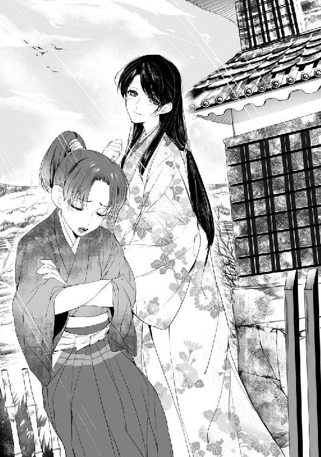
「これから伸びますよ」
「だといいのですが。兄上が私の年には、もっと大きかったらしいんですよね......」
確かに弁丸は、十二歳にしては少々小柄な気もする。
（あ、でも十二歳っていっても数え年なのよね）
それに、昔はお正月に一斉に年を取ったはずだ。だったら実際には十一歳、下手をすれば十歳くらいかもしれない。少しでも大きく見せようと言うのか、ぴんと背を伸ばして先を行く弁丸が可愛くて、美緒は忍び笑った。
（──やっぱり弁丸様が後の幸村......なんだよね）
正しくは信繁だが、それも元服後の名乗りだから、今の時点では幼名の弁丸だ。誰も知らなくて当然である。きっと、真田がかつて仕えていた武田氏の家中で評価が高かったという武田信繁にちなんでつけられることになるのだろう。
（でも......、真田家って後に家族が敵味方に別れることになっちゃうんだっけ）
それを考えると切ないが、こうして無邪気に兄自慢する少年の弁丸を見ていると全然実感がわかないし、正直今はそんなこと考えたくなかった。
わずかな時間ではあったが、美緒は山手様や弁丸のことがとても好きになってしまっていた。ずっと幸せでいてほしいと願わずにはいられない。
美緒が輿に乗って上田城を去るときも、ふたりは本当の家族のように名残を惜しんでくれた。しかし昌幸の期待顔を見れば、この結婚が政略であることがいやでも思い出されて緊張し、気が重くなる。
別に何か命じられたわけではない。言われたのは、両家の友好を保つよう努力してほしいということだけだ。
この結婚は、古くからの有力土豪出身の国人領主である藤波家一族を真田の家臣として取り込むためのものだ。弁丸の姉・於国もまた国人衆の小山田家に嫁ぎ、それによって小山田は真田の家臣となった。この結婚の目的も同様だ。
花嫁行列は藤波家の所領の境目で、先方からの迎えに引き渡された。ところが早速ここで一騒動持ち上がった。侍女たちは全員帰れというのである。
気色ばんで遣り取りする双方の家臣たちを、美緒はびくびくしながら輿の窓から覗き見た。
真田家から付けられた侍女はともかく、葛葉まで返されてしまっては非常に困る。姫君どころか、そもそもこの時代の人間でもない美緒が頼れるのは葛葉だけだ。彼女とて、美緒が遥か四百年以上も未来から来たなんて知らない。知ったところで信じはしないだろうけど......。
短期間で無理やり詰め込まれた礼儀作法など、安っぽいメッキみたいなもの。葛葉がフォローしてくれなければあっというまに剥がれ落ちてしまう。
「そんなにいやなら姫君ともども引き返してくれていいんだぜ」
いきなりぞんざいな声が聞こえてきて、美緒は視線をきょろきょろさせた。だが、ちょうど死角に当たっているのか、喋っている者の姿は見えない。真田の家臣が憤りの声を上げた。
「無礼なっ......！ 真田様の姫君を何と心得る!?」
「慌てて仕立てた養女じゃないか」
「養女だろうが何だろうが、当家の姫であることに変わりはない。相応の敬意を払うのは当然であろう」
「こっちは別に嫁をくれなんて頼んじゃいないぜ。もらってくれと頼み込まれたんで仕方なくもらってやるんだ」
「何だと......!?」
露骨な嘲り声に真田の家臣たちも殺気立つ。今にも刀を抜いて乱戦が始まりそうだ。身代わりとはいえ、美緒は両家の絆となるべく遣わされた花嫁。黙って見ているわけにはいかない。
「──あの......っ。待って......、お、おま、ち、くださいっ......」
窓の桟に張りつくようにして美緒は声を上げていた。
突然、時空を超えて戦国時代に放り込まれ、わけがわからないままに流されてここまで来てしまった。それでも美緒には淵瀬と真田、双方から託された役目がある。
思い詰めた顔で、涙ながらに頼むと頭を垂れた淵瀬の『兄』、範時。武田氏が滅び、その旧領を巡って徳川・北条・上杉が相争うこの地で真田家が置かれている厳しい状況を率直に語ってくれた昌幸。そしてわずかな時間でも『家族』として遇し、気遣ってくれた山手様と弁丸。
頼れる人は誰ひとりいない孤独そのものの存在だった美緒は、いつのまにか多くのものを受け取り、そして託されていた。
望んで負ったものではないけれど、今の美緒にはそれだけが、この世界で生きるよすが。ここにいることの『意味』なのだ。
美緒の声に、輿の前にいた真田の家臣がハッとした顔で振り向く。美緒は緊張でかすれ気味の声を必死に振り絞った。
「け、喧嘩しないでください。わた......くしは、こちらに、お、お嫁に来たのです。争うために来たのでは、ありません......っ」
家臣たちが向き直って恭しく膝を付く。
「侍女を帰せとおっしゃるなら従いましょう。ただ......、ひとりだけ許してはいただけませんか。実家から連れてきた侍女だけは連れていきたいのです」
慣れない言葉づかいで、たどたどしく、それでも懸命に訴える。しばし間があって、憮然と鼻を鳴らす音が聞こえてきた。
「ふん。まぁいいだろう。淵瀬の侍女だけは許してやる。他は帰れ」
ざわざわと人が動き始める。どうにか怪しまれずに仲裁できたことにホッとして、輿のなかで美緒はへたり込んだ。
やがて行列の引き渡しも済み、真田家から付けられた警護の責任者が悔しさを隠しきれない様子で挨拶をした。
「御屋形様がすぐにもお取り計らいくださるはず......！ 姫君、しばしご辛抱のほどを」
「皆様に、よろしくお伝えください......」
ゆらりと輿が動きだす。真田の武者たちは、花嫁行列をずっと見送ってくれていた。彼らが視界から消えると、どっと心細さが押し寄せた。そっと窺うと、輿の傍らを市女笠をかぶった葛葉が歩いていた。
笠の陰になって顔は見えないが、もしあのとき美緒が声を上げなかったら、葛葉も他の侍女たちと一緒に帰ってしまったのだろうか......。
いや、彼女は美緒が身代わりであることがバレないように見張る監視役を範時に命じられている。どうにかして付いてきてはくれただろう。
そう思いたいけれど、フォローはしてくれてもいつも無表情な葛葉には、どうしても親しみを抱けなかった。できることなら優しい山手様にすべてを打ち明けて助けを求めたいくらいだ。それが不可能である以上、ひとりだけ選ぶとしたら葛葉を残すほかなかった。
花嫁行列は粛々と進み、夕刻になって藤波一族の本拠である藤波屋敷へ入った。
櫓門の前には篝火が焚かれ、白帯を締めた兵士が警護についている。美緒は輿に乗ったまま奥まで連れて行かれた。邸内には迷路のように築地塀が巡らされてまっすぐ進めず、大小様々な門もあった。
（藤波屋敷は攻めにくいと昌幸様が言ってたけど......、確かにこれじゃ難しそうね）
行きつ戻りつしている間に鉄砲や弓矢で討ち取られてしまうだろう。
藤波家は、藤波郷と称される山間に開けた土地に古来から根を張っていた豪族である。昔は山賊まがいのこともしていたらしいが、都から追われた公卿や武士を匿ってもいたそうだ。
事実かどうかわからないが、政争に敗れた親王が娘とともに藤波郷に滞在し、父親が亡くなったあと娘は藤波家に縁付いた。それが現在の当主の先祖で、つまり藤波家は皇室ゆかりの一族なのだというのが彼らの主張である。
たぶんに眉唾な話ではあれ、藤波家が都から様々な文化人を招いては教えを請い、様々な書物を集め、かなり教養高い人々であったのは事実らしい。
だが、時代は乱世、敵味方が入り乱れ、戦続きの世の中だ。皇族の血筋を主張する藤波一族は、大名の家臣となるのをよしとしなかった。しかし所詮は地方豪族、兵の数では太刀打ちできない。
そこで、昔から余所者を庇護し、取り込んできた強みを生かして、藤波家は腕の立つ流浪の忍びを集め始めた。そして彼らを使って領民たちに訓練を施し、数世代かけて『白烏衆』と称する独自の忍び集団を形成した。
彼らはどの大名にも属せず、期間を区切って金銭で仕事を請け負った。戦忍びとして従軍するだけでなく、各地を回っての情報収集や諜報活動、調略（内通者を得るなどして相手方に揺さぶりをかけること）などを行なう。
彼らは武田氏が信濃を侵攻すると、形としてはその軍門に下り、信玄お抱えの忍び、三ツ者と連繋して働いていたという。だが、息子・勝頼の代になると、反りが合わなかったのか、さっさと抜けてしまった。以来、彼らは時勢を読んでは巧みに大名間を渡り歩き、所領を守っている。
これまで彼らと真田家との関わりは薄かった。藤波一族は領土拡張の意図を持たず、所領が戦略的な重要性を持たない位置にあったからだ。彼らが武田氏に臣従している限りはいわば同じ家中でもあり、さほど警戒の必要もなかった。
だが、武田氏が滅び、徳川・北条・上杉の勢力がぶつかりあう状況では、山間とはいえ上田からさほどの距離でもない藤波一族が敵方に付かれては厄介だ。特に、上野国・沼田領の帰属を巡って争っている北条氏が、白烏衆に接触を図っているという噂も流れており、昌幸としては膝下に火種を抱えることは絶対に避けたい事態なのだった。
藤波家の現当主・崇晃と顔を合わせた折にそれとなく探ってみると、今のところ北条方の仕事は請け負っていないようだった。しかし鵜呑みにできないし、安心してはいられない。
足元の火種を確実に消し去るべく、昌幸はこちらにつかないかと崇晃を誘ってみた。臣従の上、改めて所領を安堵しようと。だが崇晃は、ご息女でもいただけるなら考えてみてもよいと不遜に言い放って去っていった。要するににべもなく蹴られたわけだ。
家臣たちは激昂し、いっそこちらから仕掛けて藤波一族を滅ぼしてしまおうとまで言い出した。だが、彼らの領民は多くが高い戦闘能力を持っているという。攻め滅ぼすことが出来たとしても、こちらも甚大な損失を被るであろうし、有能な兵を失うのはいかにも惜しい。
そこで昌幸は崇晃の言葉を逆手に取り、望みどおり娘を嫁がせようと打診した。これには藤波家も驚いたようだが、やがて了承の返事が来た。
あとは誰を嫁がせるか選べばいい......のだが、あいにくこのとき昌幸には崇晃に釣り合う年齢の娘がいなかった。二十四歳の崇晃に対して、昌幸の手元にいる未婚の娘は最年長でも九歳だった。
政略結婚とはいえ、双方が納得しなければ成立しない。九歳の娘はあっさり断られた。崇晃は独り身で、未だ跡取りがない。嫁にもらうならすぐにでも子を産める年齢の者がいいと言う。
やむなく家臣の娘を養女にして嫁がせようとしたが、ちょうどよさそうな年頃の娘はすでに婚約が決まっていたり、親が渋ったり、崇晃側から断られたりしてなかなか決まらなかった。
結局、真田の家臣になる気など端からないのでは、と悩み始めた矢先、先代の不始末で出仕停止を食らっていた淵瀬範時から、当家に十八になる娘がおりますが......とおそるおそる申し出があった。澪姫である。
淵瀬澪を真田の養女として嫁がせたいがどうか、と打診したところ、ついに承諾の返答があった。これで昌幸は手練の忍びを抱える藤波一族を配下に加え、淵瀬家も晴れて返り咲くことができて万々歳、のはずだったのだが──。
嫁入りの日取りも決まり、着々と準備が進むなか、澪姫は急に体調を崩して寝込んでしまった。そしてそのまま回復することなく儚くなってしまったのである。
美緒が時空を飛ばされて戦国時代に放り出されたのは、戦場の後始末を任された範時の下に澪姫の訃報が届いた、まさにその瞬間のことだった。
婚礼の儀が進みつつある藤波家の座敷にて、美緒は手にした盃を蒼白な顔で見つめていた。
覚悟を決めたつもりではあったが、いざそのときとなれば、どうしても気持ちが揺らいでしまう。
そもそも納得なんて全然していない。にっちもさっちもいかないこんな状況では、そうする以外に生き延びるすべはないと無理やり自分に言い聞かせてきただけなのだ。
『引き渡し』と呼ばれる第一膳には搗栗、熨斗鮑、昆布が各五切れずつ載っている。一度干した盃には、すでに二杯目が注がれていた。式三献──いわゆる三三九度の真っ最中だ。震える指先で盃を口許に持っていき、二杯目を干すと、花婿も干す。
二順目の盃が済むと第二膳の『打躬』。載っているのは鯉の刺身だ。そして三杯目が同様に繰り返された。三順目の第三膳は『腸煎』で、鯉の腸を味噌で煮たものだった。
こうして式三献は滞りなく終了し、婚礼の儀は終わった。
どうしようどうすればと焦り悩みすぎた反動か、美緒はすっかり頭がぼーっとなってしまった。
葛葉に促され、美緒は案内に従って奥まった建物へ移動した。
式が始まってからずっと崇晃がもの思わしげな顔で美緒を眺めていたことなど、まるで気付きもしないまま......。
寝所に入る前に、大きな盥を使って行水させられた。
（ああ......、あったかいお風呂に入りたいなぁ......）
一応、水ではなくお湯をかけてもらっているものの、盥はやはり侘しい。
どのみち風呂といってもこの時代は蒸し風呂が主流。薬草などを入れた湯を沸かし、その蒸気を浴室内に取り込むものだ。蒸気で肌を濡らして糠袋などで垢を落とし、湯で洗い流す。浴槽に湯を張って入るかたちもあるようだが、まだ一般的ではないらしい。
（まぁ、ガスも灯油も水道もないんだから仕方ないか......）
この辺、温泉ないのかなぁ。長野って温泉いっぱいあったよね、などと考えてしばし現実逃避する。しかしいつまでも目をそむけてはいられない。
湯帷子を着せられて寝所へ戻り、肌小袖に着替えて崇晃が現れるのを待った。それにしても目の前に敷かれた褥を見ていると何やらムズムズしてきて、とても平静でいられなくなってしまう。
美緒は現代の高校生であるからして、それなりに性知識は持っている。なので、新婚夫婦が初夜に何を致すかくらい、ちゃんと知っていた。だが、あくまでも知識でしかなく、自分がソレをするなんて実のところ考えたこともろくになかったのだ。
付き合っている彼氏もいなければ特に好きな男子もおらず、結婚するとしてもたぶん十年くらいは先だろうなと何となく思っていた。経験豊富な姉から真面目な顔で、『初体験の相手は選んだほうがいいよ！』と言われたのが効いたのかもしれない。
それが、いきなり『初夜』である。
結婚相手はさっき会ったばかり。第一印象は悪くなかったけれど、とにかく全然知らない人なのだ。この時代ではそれが普通なのだと頭ではわかっていても、現代人の感覚が状況を受け入れることを断固拒否している。
淵瀬や真田の人々と交流することで、図らずも自分に課せられた使命を果たそうと一度は決意した。だが、どこか現実味が薄かったというか、お芝居に参加しているような気分だったのだ。
現代でだって、初めて彼氏とエッチするときはたぶんものすごく緊張するはずだ。それが、常識的には絶対ありえない戦国時代なう！ で、結婚式で初めて顔を合わせた人（まだ口もきいていない！）と『しろ』だなんて──！
（無理......！ 絶対無理ーっ）
ふたたびパニックに襲われて、とにかくどこかに隠れようと美緒はがくがくする膝でいざり出した。手近な襖を開くと、端座した葛葉が冷ややかな顔で見返した。
「何をなさっておいでですか、澪姫様」
ひぃっと美緒は尻餅をついた。
（押し入れだと思ったのに！）
「く、葛葉こそ何を......っ」
「お床入りが滞りなく済んだかどうか確認しませんと」
「そこにずっといるつもり!?」
「当然です。初夜を済ませて初めて本当に婚姻が成立したことになるのですから。これは武家同士の結びつき。下々の者が好き合って番い、所帯を持つのとはわけがちがうのですよ」
美緒はますます青くなって頬を引き攣らせた。
「そんなっ......、人が見てる前で『しろ』って言うの......!?」
「襖のこちらで聞いているだけでございますよ」
聞き耳たてられるのもいやーっ、と泣きそうになる。
「ね、ねぇ！ せめて二、三日待ってもらえない!? やっぱり心の準備が......っ」
何を馬鹿なと眉を上げた葛葉は、ハッとした様子で襖に手をかけた。
「殿のおなりです。早くお戻りを」
待ってとすがる暇もなくピシャリと襖を閉じられてしまう。ほとんど同時に反対側の障子が開いて、白い小袖姿の崇晃が入ってきた。彼は襖の前にへたり込んでいる美緒に気付くと不審げに眉をひそめた。
「......何をしている？」
「あ......、あの......。そ、そう！ 侍女に作法の確認を......っ」
焦って言い訳すると、崇晃は視線を泳がせ、少し照れたような顔になった。
「そんなことは気にせずともよい」
ぶっきらぼうに言い放つと彼は褥の上で胡座をかいた。
「いいからこっちへ来い。少し話でもしよう」
「......は、はい......」
どうやら緊張しているのは美緒だけではなさそうだ。
美緒はおずおずと立ち上がって歩きだそうとしたが、痺れた足首がうまく動かず、つんのめってしまった。
（ひぃ────!!）
とっさに崇晃が身を起こして抱き留めてくれる。おかげで褥に突っ伏す事態は免れたものの、彼の胸にすっぽりと抱え込まれることになった。恥ずかしいやら焦るやらで美緒は真っ赤になって身を縮めた。
「す、すみません、すみませんっ......！」
「足が痺れたか」
苦笑され、美緒は羞恥をこらえて頷いた。片膝を立てて座る立膝座りも教えてもらったのだが、慣れないためか、つい正座をしてしまう。かといって現代の日常生活でも正座をする機会はあまりなく、すぐに痺れてしまうのだった。
「ごめんなさい......っ」
みっともない姿を晒し、本物の澪姫に申し訳なくなる。消え入りそうな声で謝ると、崇晃は嘆息まじりに笑い、なだめるように美緒の背をぽんぽん叩いた。
「いや、待たせて悪かった。もっと早く来るつもりだったのだが」
「......何かあったの──ですか」
ふと、輿渡しのときに起こった諍いを思い出して不安になる。藤波家の全員がこの結婚に賛成しているわけではないらしい。思い出すと心細さがにわかに迫り上がった。
「気にするな。それより、ほら、遠慮せず足を伸ばせ」
褥に座り込んだ姿勢で澪はおずおずと足を伸ばした。自然と背を崇晃の胸に預ける体勢になる。彼の腕は美緒の腰に回され、ゆるく抱えられた恰好だ。
子供の頃に父親や祖父の膝に載せられたことはあれど、若い男性とこんなに近く接したのは初めてだ。しかもお互い単一枚、背中から崇晃の体温が伝わってくる。ドキドキするあまり、心臓が口から飛び出しそうだ。
腰に回された崇晃の手に力がこもり、引き寄せられて背中が胸に密着する。同時に彼は上体をやや屈め、美緒は完全に後ろから懐に抱き込まれてしまった。
（こ、これはまずい......まずいよね......!?）
いや、結婚したのだから別にまずくはないのか。いやいや、結婚したのは澪姫であって、あたしじゃないし！
赤くなったり青くなったりしながらぷるぷる震えていると、耳元で崇晃が囁いた。
「みお」
ぞくっ、と身体を戦慄が走る。彼は『澪』と言ったはずなのに、『美緒』と自分の名を呼ばれたような気になってしまう。崇晃の顎が肩に落ち、こめかみに頬が触れる。ぞくぞくする感覚で全身から力が抜けそうだ。
（ど......しよう......っ。あたし、いや......じゃ、ない......!?）
身体が密着しているのはすごく恥ずかしいし、焦る。でも、今日初めて出会った、全然知らない人なのに。警戒心とか生理的嫌悪感とか、反射的に沸き上がりそうなものが不思議なくらい出てこなかった。
「逢いたかった」
囁き声とともにぎゅっと抱きしめられて、顔から火を噴きそうになる。
（え？ え!? えーっ、どういうこと!? 逢いたかったって何それあたしたちさっき会ったばっかりなのにっ!?）
いや、話は以前から決まっていたのだから、崇晃が『期待』していたとしてもおかしくはない。しかしそれにしては迎えの連中が、やけに喧嘩腰だったような......!?
「ほ、欲しくてもらったわけじゃないって、け、家来の人が......っ」
焦るあまり、思い浮かぶまま口走ると、崇晃はムッとした顔になった。
「余十郎め、余計なことを......」
崇晃は美緒を抱え直し、真正面からじっと見つめた。
「輿渡しのときに一悶着あったことは聞いている。無礼な言動を取った者はきつく叱っておいた。安房守殿（真田昌幸のこと）に詫び状を書いて使いも出したし、おまえは何も気にせずともよい。......俺はおまえと祝言を上げる日を待ち望んでいたのだぞ？」
真摯な黒い瞳で見つめられ、すでに高鳴っていた鼓動がさらに跳ね上がった。大きな掌で、そっと頬を包まれる。美緒の顔がすっぽりと収まってしまうくらいに大きくて無骨な手。だが、そのしぐさは驚くほど優しい。
「......逢いたいと、ずっと思っていた。そう伝えたではないか」
（────え？）
何かが引っ掛かり、問い返そうとした刹那。崇晃の端整な顔が近づいて、気付いたときには唇が重なっていた。
「......!?」
背に回された腕に力がこもり、さらに唇が密着する。
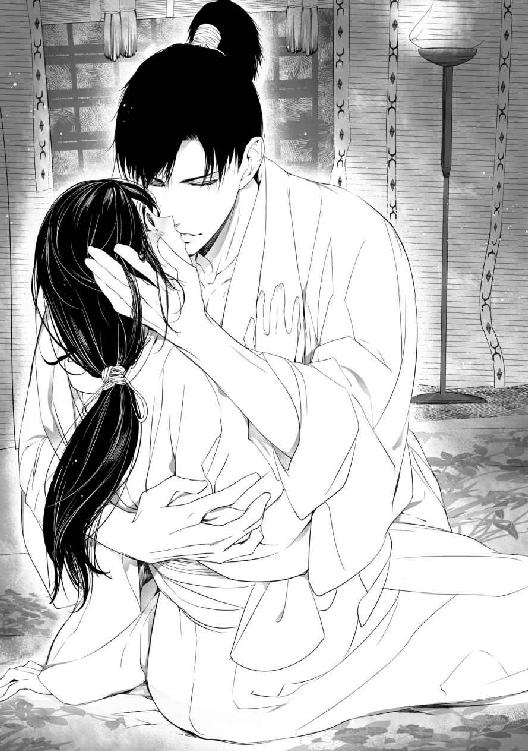
（うそぉぉぉっ!?）
キス......されてる......ッ!?
反射的に崇晃の胸を押し返そうとすると、ふっと唇が離れた。だが次の瞬間、褥の上に押し倒され、ふたたび唇をふさがれていた。
「ん......ッ、んん」
混乱してもがいたが、体重をかけて押さえ込まれると身動きできない。崇晃は美緒よりずっと上背がある。現代人に比してもかなりの長身だ。密着すると筋肉質な身体の厚みも間近に感じられて、急に怖くなった。
恐怖で硬直しているとは思いもしないのだろう。崇晃は美緒の唇を愛しげに繰り返し吸いねぶった。怖くてたまらないのに、恐怖や嫌悪とは異なるぞくっとした感覚に襲われて、美緒はきつく瞼を閉ざした。じわりと滲んだ涙で睫毛が濡れる。
歯列を割って舌が入り込んできて、美緒はびくっと目を見開いた。こわばった身体は抵抗もろくにできないまま小刻みに震えるばかりだ。
ようやく離れた唇の間に細い糸が引き、崇晃は目を細めて微笑んだ。
「......やはり、語り合うのは後にしよう」
仄昏い灯の下でも彼の瞳に淫靡な情欲が宿っているのが見て取れて、美緒のなかで混乱と恐怖が爆発的にふくらんだ。引き攣った首元に唇が這い、肩から胸へと単越しにたどった手が帯にかかる。
ぐっと帯を引かれると同時に、美緒は悲鳴を上げていた。
「いやぁあっ、やめてぇっ」
驚いた様子で崇晃が動きを止める。美緒は自らを抱え込むように身体を丸め、彼に背を向けて叫んだ。
「ごめんなさい！ やっぱり無理です！ 絶対無理──っ！」
崇晃が息を呑むのが聞こえ、美緒はぎゅっと身を縮めた。
「......何故拒む？ 俺の下へ嫁ぐ日を楽しみに待っていると文を書き送ってくれたではないか」
「そんなの書いてな......、ッ！」
ハッと口を押さえたがもう遅い。背後で不審もあらわに崇晃が呟くのが聞こえた。
「書いてない......？」
まずい、口が滑った！
青くなっていると、いきなり肩を掴まれて正面を向かされた。さっきと同じように組み伏せられる。だが、崇晃の顔つきは疑惑と不審とで別人のように厳しいものに変わっていた。
「返信したのはおまえではないのか」
「あ......、わた、しは......っ、病気──や、病で寝込んで──ふ、臥せって、まして......ッ」
焦るあまり、葛葉に教えられた言葉づかいが怪しくなってしまう。だが、それを聞いた崇晃の目つきからたちまち険しさが消えた。
「病だと......？ 聞いておらぬぞ。──具合はもう良いのか」
一転して心配そうに問われ、美緒はおずおずと頷いた。
「は、い......」
「どうも顔色がすぐれぬと思っていたら、病み上がりであったか。それは悪いことをした」
崇晃は起き上がると美緒の身体にそっと衾をかぶせた。
「しばらくは大事を取ったほうがいいな。ゆっくり休め」
そう言って崇晃は立ち上がった。彼が障子に手をかけるのを見て、美緒は慌てて身を起こした。
「あ、あの......っ!?」
「少し頭を冷やしてくる。気にせず休んでいろ」
縁側に出ると彼は背を向けたまま自嘲するように呟いた。
「......あれは代筆か」
「崇晃......様......？」
たん、と障子が閉まる。
かすかに板が軋む音が遠ざかり、美緒はしんと静まり返った寝間で茫然と座り込んだ。
「────姫様」
冷えきった声にぎくっとして振り向くと、いつのまにか奥の襖が開いて葛葉がこちらを睨んでいた。無表情なのはいつもと変わらないが、目許が不穏に引き攣っている。
「どういうおつもりですか......!? ご夫君を拒否なさるとは」
向き合って座り直すなり、冷たい怒りをはらんだ声で叱責される。小さくなって口ごもりつつ精一杯美緒は言い返した。
「だって、まだ心の準備が......っ」
「事情をお話ししてからもう一月も経つのですよ!?」
「たった一月じゃないのっ。この時代......国にだってまだ慣れてないのに！」
「あなた様がどこの誰であろうと、今は淵瀬、いえ、真田の澪姫様なのです。藤波に不審を抱かれれば、真田様にも淵瀬にも迷惑がかかることになるのですよ。藤波と真田で戦になってもよいのですか？ 主君を謀った罪で範時様が切腹──あるいは、処刑されてもかまわないと？」
「そ、そんなことは......っ」
「あなた様にはあくまで澪姫としての役目を果たしていただかねばなりません。あなたの行動がどれほどの影響を及ぼすか、よくお考えください」
叱り飛ばされ、美緒は、ぐっと小袖の生地を握り締めた。
（そんなこと言われたって......、あたしは澪姫じゃないのに......！）
ただの身代わりなのに。勝手に押しつけられた役目なのに。どうしてあたしばっかりこんな目に遇わなきゃならないの？ ただ顔が似ていたってだけで、縁もゆかりもない人たちを守るために、勝手な思惑であっちへ養女に出され、こっちへ嫁に出され。
「......あたしの意思はどうなるのよ!? 好きでこんな世界に飛ばされてきたわけじゃないのに！」
かっとなって怒鳴ると、いつも無表情な葛葉がわずかに目を見開いた。小袖を握り締めた手の甲に、ぽとんと涙が落ちる。
「何なのよ、もうっ......!!」
ぎゅっと目をつぶるとぱたぱたと涙がこぼれ落ちた。唇を噛みしめていると、スッと目の前に懐刀が差し出された。
「そんなに逃げ出したいのなら、これをお使いなさい」
薄く微笑む葛葉を美緒は混乱して見返した。こんなもの、どうしろと言うのだ。これを持って逃げろとでも？
だが葛葉は懐刀を鞘から抜くと美緒に握らせ、その喉元に切っ先を突きつけた。
「ひっ......!?」
「逃れる先は、あの世しかございませんのよ？ 澪姫様」
震える美緒の手を押さえつけるように握り込みながら葛葉は囁いた。
「あなたがどこからいらしたのか存じませんが、そこへ帰る手だてはないのでしょう？ ならばここで生きていくしかない。それもいやだとおっしゃるなら、死を選ぶほかありませんわねぇ。──ああ、それもよいかもしれないわ......」
ゆらり、と葛葉の瞳に妖しい光が燈る。鋭い刃先が顎下の皮膚に食い込み、美緒は耐えきれずに泣き声を洩らした。
「い......や......！ し......、死にたくない......っ」
くす、と笑って葛葉は小刀を鞘に戻した。崩れ落ちそうになって、美緒はがくりと褥に手をついた。そんな美緒を蔑むように横目で眺め、葛葉は冷笑を浮かべた。
「さいわい崇晃様はあなたの正体を怪しんでいるわけではないようです。わたくしがうまく言い繕ってさしあげましょう」
ますますうつむいてしまった美緒を見やり、葛葉は皮肉な微笑を浮かべた。
「よかったではありませんか。お望みどおり、契りを結ぶのは延期してもらえたのですから」
カッとなって睨んだが、葛葉は意にも介さずすらりと立ち上がった。
「──手紙って何」
美緒は侍女の背に固い声を投げた。
「......何ですって？」
「手紙よ。澪姫は崇晃様に手紙──、文を書いたんでしょう？ どうして教えてくれなかったの。教えてもらっていれば、あたしだってもうちょっとうまく誤魔化したわ」
「わたくしは存じません。知らないことはお教えできませんわ」
冷たく言い放つと、葛葉は隣室に消えた。澪は両手で顔を覆った。指のあいだから、ふぅと溜息が洩れる。
「......情けないね、あたし」
呟いて、美緒は崇晃がかけてくれた衾をそっと引き寄せた。
ここで生きていくしかないと覚悟を決めたつもりでいて──、本当に『つもり』でしかなかった。必死に復帰を目指す範時に、頼むと縋られて、ちょっといい気になってただけ。
真田家の人たちに優しくされて嬉しくなって、自分が絆になれるならがんばろうなんて、本気の覚悟もなかったくせに調子に乗っちゃって。
この世界で生きていくことの重さなんて、全然わかってなくて──。
『みお』
想いのこもった崇晃の囁き声。
『逢いたかった』
だけどそれは美緒じゃない。死んでしまった澪姫への想いだ。
政略で決まったことでも、崇晃は澪姫を妻にすることを望んでいた。澪姫もまた、この結婚を喜んでいたのだろう。顔を合わせるのは初めてでも、ふたりは手紙を遣り取りすることですでに交流を深めていた。
（やだな......。何だか無理やり割り込んだみたい）
単なる身代わりですら気が引けているのに、すでに崇晃が澪姫に好意を寄せていたとなれば、引け目に加えて罪悪感まで覚えてしまう。
同時に、自分でもよくわからない、モヤモヤした気分が沸き上がった。崇晃が見つめているのは澪姫であって美緒ではないのだと思うと、妙に胸がちくちくする。
「──もう寝ちゃおうっ。寝てていいって言ってたし！」
澪は横になって衾を引っ被った。目を閉じると急に崇晃と唇を重ねたことが思い出され、衾の下でぷるぷるとかぶりを振る。
（初めての......キスだったのに......）
別人と思われていたなんて、悔しいというか、切ないというか......。
ドキドキするほど熱い想いのこもった瞳で見つめていたのは自分ではなかったのだと思うと、今更ながらがっかりしてしまう。
（澪姫のふり、しなきゃいけないんだよね......）
そんなこと本当にできるのだろうか。がんばれば、それらしくふるまうことはできるかもしれない。でも、どんなにうまく取り繕ったところで結局は偽者だ。
崇晃が好きになった『澪姫』には絶対なれないのだから......。
ようやく美緒が眠りに落ちた頃。崇晃は釣殿風に造られた櫓から月を眺めていた。
藤波家の奥は表向きとは違って公家の屋敷を模した構造になっている。都を追われた皇子の血筋だと称するだけあって、代々の藤波当主は都風のしつらえを好んだ。
もっとも崇晃は、祖先については半信半疑だ。まぁ、皇族かどうかはともかく、落ちぶれた公卿ではあったのだろう。
手すりにもたれて薄く雲のかかる半月を見上げ、崇晃はぼんやりと謡を口ずさんだ。
かかれる松に うす花の
色紫の 雲の羽袖を かへす舞姫
歌へや唄へ 折る柳 落つる梅
あるひは花の 鶯の囀りの──
ふ、っと崇晃は苦い笑みを浮かべた。
「......覚えていたのは、俺だけか」
是非もない。あのとき澪姫は八つか九つ。覚えていなくて当然だ。この偶然を縁と思い込んだ自分が、柄にもなく甘い夢を見てしまっただけ......。
それとなく以前出会ったときのことを匂わせる手紙を書くと、『また』お会いできるのを楽しみにしていると返事が来た。それで、澪姫が覚えてくれていたと思い込んだ。実際には単なる外交辞令──あるいは、気遣ってくれただけかもしれないのに。
（それはまぁ、仕方がない。しかし返事をしたためたのが本人ですらなかったとなると、さすがに堪えるな......）
婚儀のときから何だか様子がおかしいとは思っていたのだ。緊張するのは当然としても、少々度が過ぎる。青くなって、ひどく焦った顔をしていた。まるで今にもその場から逃げ去りたいかのように。
寝所では、足を痺れさせて泣きそうな顔になっていたのが何とも可愛かった。幼い頃の面影はもはや曖昧になってしまったが、目尻がやや垂れた愛嬌のある顔立ちや、ぷっくりとした唇がことのほか愛らしい。
家中の一部が強硬に反対していたのを押し切ってまで嫁に貰うと決めてよかった。妻として大切に扱い、澪姫がつないでくれた縁を大事にしよう。これでようやく白烏衆も、しっかりとこの地に根付くことができる。
そう、思っていたのだが──。
手すりの下で、かすかな気配がした。
「──村雨か」
「は。お呼びでございましょうか」
低声で答えたのは若い女らしい。
「澪姫は嫁いでくる前、しばし病で臥せっていたらしい。縁談に差し障ってはまずいと黙っていただけかもしれないが、少々気になる。その辺りのことを探ってきてくれ」
「承知いたしました」
すっ、と気配が消える。崇晃はふたたび月を見上げた。
手紙など書いていないと澪姫は言った。あの様子では、こちらから送ったものも読んではいなさそうだ。
（......ずっと臥せっていたということか？）
手紙も読めないほどに......？
誰か淵瀬家に潜り込ませておけばよかったと、今更ながら悔やまれる。この縁組に反対する者は白烏衆のなかにもいた。下手に潜入させて破談の口実でも見つけてこられてはかえってまずいと控えたのだが、それが裏目に出たかもしれない。
藤波一族およびその家臣と、白烏衆とは必ずしも重ならないし、一枚岩というわけでもない。事実、藤波家の当主と白烏衆の頭領をひとりの人間が兼ねるようになったのは先代からで、現在崇晃がその地位にあるのは偶然の要素が強い。
澪姫を妻に迎えることで結束は増すのか、それとも逆に崩壊へ向かうのか。最初から分の良い賭ではないとわかってはいたが......。
「......雲が、多くなってきたな」
夜空を見上げ、崇晃は呟いた。
そう......、わかっていても、生涯にひとつくらいわがままを通してみたかったのだ。
葛葉に起こされた美緒は、ぼんやりと寝所を見回して呟いた。
「......崇晃様は？」
「さぁ。わたくしが参りましたときにはいらっしゃいませんでした」
眠ってしまって気付かなかったのかもしれないけれど、たぶん戻っては来なかったのだろう。葛葉の目つきに非難めいたものを感じ、美緒は溜息をついた。
手水を使い、着替えをして、ひとりきりで朝餉を取った。玄米ごはんや汁物、香の物などを憂鬱な気分で口に運ぶ。
（崇晃様、怒ってるのかな......）
怒って当然だよね、と嘆息する。初夜に花嫁から拒否されておもしろいわけがない。
（無理やりされなかっただけマシ、なんだろうな、きっと）
先延ばしになっただけで、いつまでも拒否するわけにもいかないのはわかっているけど......。
（本当に、このままずっと帰れないのかな......）
戦国時代に放り込まれて一月足らず。諦めなんてまだつかない。受け入れてしまったら、それこそ二度と元の時代に戻れないのではという懸念もあった。
はぁ、と溜息をつくと、葛葉にじろりと睨まれた。美緒は肩をすぼめて箸を置いた。葛葉の合図で藤波家の侍女たちが入ってきて、膳を下げる。
（パンが食べたいわ......）
こっちの食べものにもだいぶ慣れたが、ごはんは玄米か雑穀で、健康的だとは思うけれどやっぱり食べにくい。現代のお茶漬けみたいな湯漬けのほうが食べやすかった。具入りの汁かけごはんはわりと好き。ちょっと塩気がきついけど。
婚礼の儀は三日間にわたって行なわれる。宴が開かれるのは初日と三日目だ。二日目までは白い衣装で過ごし、三日目に色柄ものの衣装に着替えて婚家の親族に挨拶をする。
嫁入り道具を確認したりして二日目の昼を過ごし、夜を迎えた。前夜のような失態を繰り返さないようにと、葛葉にきつく戒められた。
「淵瀬だけでなく、真田様にもご迷惑をおかけすることになるのですからね。嫁入り道具を用意してもらっただけでなく、充分すぎるほど化粧料や敷銭を持たせていただいたこともお忘れなく」
化粧料というのは嫁に出す娘に持たせる土地のことで、化粧田とも言う。そこから上がる収穫で、毎年一定量の収入が得られる。敷銭はいわゆる持参金で、嫁ぐときにだけ持たされる現金だ。どちらも妻の持ちもので、結婚後も夫が勝手にすることはできない。
つまり、美緒は嫁入りすることで、自分名義の財産を真田家から付けてもらったわけである。澪姫として生きていく限りは路頭に迷う心配はない。それは確かにありがたいことだ。
でも、それとこれとは別......などとぐずぐず考えているうちに白小袖の崇晃が現れた。昼間は顔を合わせなかったので、丸一日ぶりである。
（と、とにかく昨夜のことを謝らなきゃ！）
だが、意気込みにもかかわらず、崇晃は美緒の言葉を遮って「気をつかわなくていいから寝ろ」とそっけなく言い、さっさと横になるとこちらに背を向けて寝てしまった。
美緒は褥の上に正座して、ぽかんと崇晃の後頭部を眺めた。次第に肩が落ち、美緒はしょんぼりとうなだれた。
（やっぱり怒ってる......）
拒んだのはこっちなのに、こうして背を向けられると何もかも全部拒否されているみたいで、よるべない気分になってしまう。
ここはきちんと謝っておくべきだと気を取り直し、美緒は指先を揃えて褥に付いて身をかがめた。
「──昨夜は大変申し訳ございませんでした。もう二度とあのようなわがままはいたしませんゆえ、どうかお許しくださいませ」
葛葉に教えられたとおりに言って、深々と頭を下げた。だが、何の反応もない。それでも頭を下げ続けていると、やがて軽い溜息が聞こえ、崇晃が身を起こす気配がした。
「......顔を上げろ」
ぶっきらぼうな口調で命じられ、おそるおそる身を起こす。崇晃は眉根を寄せ、腕を組んで美緒をじっと見つめていた。彼は困ったような顔で軽く頭を掻いた。
「侍女から聞いたが......、熱を出して寝込んでいたそうだな」
「は、はい......」
「何故知らせなかった？」
「その......、病のせいで話が流れてはまずいと」
「瘧など別に珍しい病でもあるまい」
「それは、そうなの、ですが......っ」
「熱が続いたせいで、少し頭がぼんやりしてしまったようだと侍女が言っていたな」
「は、はい。実はその......、記憶が少し、飛んでしまいまして......」
冷汗をかきながら美緒は頷いた。少々言動がおかしくても後遺症だと思ってもらえればごまかせる、と範時が考えた策だが、本当に通用するのだろうか。
「そうか......。なら、よかった」
何故かホッとしたような顔で崇晃が呟き、美緒はとまどった。
「え......？」
「ああ、いや！ たいしたことなくてよかったということだ」
どこか慌てた様子に首を傾げながら美緒は曖昧に頷いた。気のせいか崇晃の顔が少し赤いような気がする。
（怒ってるわけじゃない......のかな）
どっちだろうかとしげしげ見つめていると、崇晃は咳払いをして、ふいと顔をそむけた。
「──ともかく、夫婦の語らいはおまえが本復するまで待とう。今はきちんと寝て、食べて、歩いて、体力の回復に励め。わかったな」
「は、はい」
急いで頷くと、崇晃はちらっと美緒を眺め、ふたたび後ろを向いて横になってしまった。しばしためらった後、美緒は崇晃の傍らで衾をかぶった。
「......おやすみなさい」
そっと呟くと、背を向けたまま崇晃が「ああ」と低く呟いた。
（崇晃様、いい人だなぁ......）
広い背中を視界の隅で意識しながら美緒はぼんやり思った。嘘をついているのがますます申し訳なくなる。同時に崇晃が美緒のことを澪姫だと思い込んでいて、好意を寄せていると思うと妙に妬ましい気分にもなった。
「あの......、崇晃様」
「何だ」
「わたしたち、以前にどこかでお会いしましたか......？」
思い切って尋ねると、軽く息を呑む気配がして崇晃は黙り込んでしまった。やがて、ぶっきらぼうな答えが返ってきた。
「覚えてないなら、いい」
やっぱり、そうなんだ......。澪はしゅんと肩をすぼめた。崇晃と澪姫は縁談が出る前から互いを知っていた。そしてふたりは手紙を遣り取りすることで交流を深めた。
澪姫が想いを込めて書いたであろう手紙を、侍女による代筆と思わせてしまったのがすごく申し訳ない。崇晃は自分が送った手紙を澪姫が読んでいないとさえ思い込んでいる。
いつ、どのように出会ったのか、頼めば崇晃は話してくれるだろうか。そうしたら、少しは話を合わせられるかもしれない。崇晃を喜ばせることができるかも。
（......やっぱりやだ）
そんなことをしたら、澪姫にも崇晃にも悪い気がする。ただでさえ、想いあうふたりの間に割り込んだ気がしているのに。望んだことでなくても、やはり気が咎めた。
その一方で、胸が奇妙にちりちりして落ち着かなかった。
（あたし、澪姫に妬いてるのかな......？）
崇晃に大切に想われ、政略ではなく本心から妻に望まれていた澪姫。いいなぁと思う。正直羨ましい。崇晃は見た目が恰好いいだけでなく、思いやりのある優しい人だ。そんな彼に愛されていた澪姫には妬けてしまう。
結婚直前に亡くなった彼女は、もちろん可哀相だ。何も知らない崇晃に申し訳なくも思う。そして、身代わりとしてここにいる自分が、どうしようもなく惨めに思えて仕方がなかった。
「──ごめんなさい」
くぐもった声で美緒は呟いた。崇晃だけでなく、澪姫にも謝りたい。本来彼女に向けられるべき想いを横取りしているように思えてならなくて──。
「謝らなくていい」
背を向けたまま、崇晃が穏やかな声音で囁いた。声の調子から、彼が怒っているどころか美緒を気遣い、いたわってくれているのがわかる。ますます申し訳なくて、鼻の奥がツンと痛くなった。
「でも......、やっぱり、ごめんなさい......！」
気遣われるほどに罪悪感が増していく。背を向けて身体を丸めて嗚咽をこらえていると、崇晃が身体を起こす気配がした。肩を掴まれた次の瞬間、正面から抱きしめられて息を詰める。
「もう謝るな」
どこか切ない彼の囁きが耳元で聞こえ、カーッと頬が熱くなった。単越しにも感じる逞しい胸板にぴったりと顔を押しつけるかたちになって硬直する。
崇晃は美緒の髪をそっと撫で、噛みしめるように呟いた。
「いいんだ、謝らないでくれ。こうして嫁に来てくれたんだから、それでいい」
「......っ」
美緒は崇晃の胸のなかで唇を噛んだ。
気遣われるほどに罪悪感が増してゆく。所詮美緒は身代わりの偽者。彼の想いを踏みにじってる。こうして崇晃の胸に抱かれるのは澪姫だったはずなのに。まるで自分がこのぬくもりを彼女から奪い取ってしまったみたい。
ごめんなさい、と澪は心のなかで繰り返した。
ごめんなさい、ごめんなさい、ごめんなさい......。
果てしなく繰り返しながらも崇晃の体温が優しく包んでくれて......。美緒は初めて、自分が本当に澪姫だったらよかったのにと虚しく願いながら眠りに落ちた。
翌朝目覚めると、やはり崇晃の姿はなかった。それでも昨日とは違って何となく心の内側にぬくもりを感じる。
嘘をついている罪悪感はまだ胸底にわだかまっていたけれど、崇晃自身に対する信頼感はぐっと増した。あやすように優しく抱きしめられれば安心した気分になれたし、たぶん夜明けまでは一緒にいてくれたのだと思うと嬉しい。
葛葉には睨まれたが、昨夜は美緒が拒否したわけではない。澪姫が病み上がりだと崇晃に説明したのは葛葉なのだから文句も言えまい。
今日は婚礼の三日目、最終日だ。白無垢を脱いで色小袖に着替え、婚家の家族・親族に挨拶をする。そして主だった家臣も顔を揃えての祝宴が開かれ、三日間にわたる婚儀が完了する。
美緒は、白小袖の上に紅白の段模様の小袖を重ね、肩裾に亀甲紋様と草花をあしらった打掛を着せられた。「辻が花染」という、絞り染めを中心に彩色や箔を用いた豪華なものだ。真田昌幸の正室・山手殿が自ら選び、持たせてくれた。
こんな豪華な着物を自分が着るなんて、今でもやっぱり信じがたい。侍女に導かれて入側（廊下）を進みながら、美緒はそっと溜息を洩らした。
（でも足袋は履かないんだ......。意外）
この時代は素足が正式で、女性も基本は素足なのだった。
まずは先代当主の奥方に挨拶する。数年前に亡くなった藤波家の先代・崇継の正室は、夫が亡くなると剃髪して愁雲院と号している。京の公家の娘だそうだ。
袈裟を着て白い頭巾をかぶり、数珠を持った姿でも、たいそう美しい女性だった。崇晃の年齢を考えると四十近いはずなのに、十歳以上若く見える。
藤波家は地侍とも呼ばれる半農半士の土豪であった時分から、いろいろな伝で公家から正室を迎えてきた。
戦乱の時代で荘園制度は形骸化し、公家は困窮している。教養や血筋を売り物にして生き残りを図るしかない。愁雲院が嫁した裏でも相当な金銭が動いたのだろう。
それでも、いや、それゆえにだろうか。愁雲院は非常にプライドが高いようだった。口許は微笑んでいても、美緒を眺める目つきは冷ややかだ。真田家から来たとはいえ養女で、元を正せば国人衆の淵瀬出身の澪姫など、息子の嫁にふさわしくないと思っているのかもしれない。
愁雲院の隣には十二、三歳、真田家の弁丸と似た年頃の姫がいた。前髪を揃えて下ろし、胸元に垂らした髪を綺麗な組紐で飾っている様は、雛人形のような可愛らしさだ。崇晃の妹で、名を珠洲という。
珠洲姫もまた美緒が気に食わないのか、ぱっちりした瞳に露骨な敵意を込めて睨んでいた。母親に似ているのは顔だけではなさそうだ。
その後、藤波家の一門及び主だった家臣からの挨拶を受けた。崇晃がひとりずつ名前を教えてくれたが、とても一度では覚えきれない。
美緒に対する態度は人それぞれだった。真田と縁続きになったことを喜んでいる者もいれば、面白くなさそうな者もいる。祝宴の席で酒が入ると、割れた雰囲気はいっそう明らかになった。
（誰もが歓迎してくれてるわけじゃないんだわ......）
時折そこかしこで険悪な雰囲気が立ちのぼるのをハラハラしながら見ていると、傍らの崇晃に盃を勧められた。
「あ、わたし未成年なんで」
「なんだそれは。下戸のことか？」
「えぇと、まだ十八なので......」
「酒なんぞ、十四、五の頃から皆飲んでいるぞ」
こともなげに言われ、えっそうなの!? とびっくりする。女性の飲酒もまったく問題にされていないみたいだし、現代とはえらく違っている。
注がれた酒は白っぽい濁り酒で、いわゆるどぶろくだ。婚儀の三三九度で出たのは清酒だったが、普通に飲むほどにはまだ普及していないらしい。
舐めてみると、少しとろみがあって酸味を感じた。
「甘くないんだ......」
思わず独りごちると崇晃が笑った。
「甘酒とは違うからな。甘酒が好きなら作らせよう。あれは滋養にもいい」
美緒は赤くなって、濁り酒をもう一口飲んだ。無理に飲まなくていいと言われて盃を置いたが、慣れないせいか、雰囲気に酔ったのか、頭がぽわんとなった。式の時はほんの一口ずつとはいえ合計九回も飲んでよく酔っぱらわなかったものだ。よほど緊張していたらしい。
崇晃が好人物だとわかって安心したのかもしれない。ほんのりと酔いが回った頭で美緒は藤波家の人々と歓談した。
初日の宴は儀礼的で堅苦しいものだったが、今日は人数も多く、打ち解けた雰囲気だ。何か言いたげな顔をしていた人たちも、今日くらいはいいかと思いなおしたのだろうか。やがては唄や踊りも始まって、美緒は戦国時代に飛ばされて初めて声を立てて笑ったのだった。
翌日から、藤波家の嫁としての生活が本格的に始まった。といっても、家事をする必要はなく、家政についてはまだ教えてもらえない。どのみち文書もろくに読めないし、この時代の金銭感覚もよくわからないから聞いてもちんぷんかんぷんだ。
仕方がないので、淵瀬家にいたときのように、基本的な教養を身につけるべく勉強を再開した。貝合わせをしながら和歌を覚え、ミミズがのたくったようにしか見えない文書の読み方を習い、手習いをした。
憐れむように葛葉に笑われたのが悔しくて、読み書きができないわけではないのだと証明すべく、暗記していた平家物語や源氏物語などの冒頭を思いつくまま書き散らしていると、後ろでいきなり崇晃の声がした。
「......ほう。澪は斬新な字を書くのだな」
ぎょっとして振り向くと、いつのまに入ってきたのか、崇晃が座り込んで投げ散らかした反故紙を眺めていた。
「あっ、見ちゃだめ！」
慌てて取り返そうとしたが、崇晃は余裕であしらいながら面白がって声に出して読み始めた。
「ゆく河の流れは絶えずして、しかももとの水にあらず」
「方丈記！」
「つれづれなるままに、日ぐらし硯に向かひて、心にうつりゆくよしなしごとをそこはかとなく書き付くれば──」
「──あやしうこそ物狂ほしけれ！ 徒然草ー！」
「むかし、おとこありけり」
「伊勢物語！」
「春はあけぼの」
「枕草子！」
古典文学イントロクイズみたいに次々答えていると、ふと崇晃が首を傾げた。
「......月日は百代の過客にして、行きかふ年も又旅人也。──何だこれは。知らんぞ」
「それは、おくの......」
ほそ道、と言いかけてハッと美緒は口を押さえた。
（しまった！ 『おくのほそ道』は江戸時代だったー！）
「おくの？」
「いえ、思いつき！ 単なる思いつきです！」
「思いつきにしては、なかなか味のある文言ではないか」
感心したように言われて美緒は口許を引き攣らせた。
（そりゃ、松尾芭蕉だもの～）
まだ生まれていない芭蕉に向かって、心のなかで剽窃を詫びる。
「澪は文学の素養があるのだな。文字はだいぶ......独特だが」
「......下手だと言ってくれていいですよ。わかってますから」
ぷっと口を尖らせると、崇晃は堪えかねた様子で笑いだした。美緒は赤くなって眉を吊り上げた。
「そっ、そんなに笑わなくたっていいじゃないですかっ」
「すまん。大真面目な顔で何を書いているのか思ったら......。いや、内容は素晴らしいが」
名文と悪筆の取り合わせがよほど可笑しかったと見え、くっくと崇晃は笑い続けている。美緒は眉を逆立て、ぷいっとそっぽを向いた。
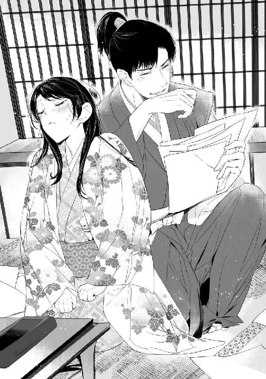
「意地悪！ 見ないふりしてくれたっていいのに」
鉛筆かシャーペンならもう少し上手く書けるのに、と悔しくなる。もっとも、それを崇晃が『上手い』と思ってくれるかどうかは謎だが......。
「そう拗ねるな」
機嫌を取るような声音がして、ふいに距離が近くなった。肩を抱き寄せられ、瞳を覗き込まれてドキンと心臓が跳ねる。
「......もしや、字が下手なことを気にしていたのか？」
書いてないと言ってしまった手紙のことだろうか。また良い方へ誤解してくれたようで、申し訳ない気分になる。うつむいてしまうと、苦笑した崇晃がそっと美緒の顎を掬った。
「大事なのは字面ではなく、中身だ。そうだろう？」
微笑んで優しくくちづけられる。目を瞠って硬直していると、崇晃が眉を垂れて苦笑した。
「そんなにいやか？」
ぱち、と瞬きをして、美緒は急いでかぶりを振った。
「い、いえ！ びっくりしただけです」
「いやならはっきりとそう言え。でないと俺は勝手にするからな」
熱っぽく囁いた崇晃に抱き寄せられる。焦っている間にふたたび唇をふさがれていた。
（ど、どうしよう。いや......じゃないけど、......い、いいのかな!? こんなことして）
あたしは澪姫じゃないのに......！
しかし澪姫のふりをするのが美緒の役目だ。疑われてはいけない。不興を買ってはいけない。
（......っ。ていうか、これ......、気持ちいい......かもっ......）
崇晃は様子を窺うように美緒の唇をついばんでいたが、抵抗されないと見て取ると次第に動きが大胆になった。
絡め捕るように抱擁され、身体が密着する。息苦しさに口を開けばたちまち舌が滑り込み、ぞくっと産毛が逆立つような戦慄きが全身に走った。
「はぁ......ふ......っ」
やっと唇が離れて熱い吐息をつくと、その息さえ封じるようにまた口をふさがれて痛いほどに舌を吸われた。
「ん......、んん......ッ」
「......俺が我慢してるのは、わかってるよな？」
接吻のあいまに囁かれ、美緒は涙ぐみながら頷いた。
初夜に組み伏せられて以来、崇晃が関係を迫ってくることはなかった。婚儀が済み、藤波家での生活が始まっても、ただ同じ褥で眠るだけで手出しはしない。
だが、彼にその気がないわけではないことは、いくら美緒に経験がなくてもわかる。
崇晃からすれば、結婚したのだからためらう理由などひとつもない。ただ美緒が、いや澪姫が、病み上がりで本調子ではないと誤解して、遠慮してくれているだけなのだ。
以前から想いをかけていた澪姫を嫁にした以上、彼が欲するのは当然のこと。わかっていても、崇晃が澪姫を求めながら美緒の身体を抱きしめているのかと思うと、やるせなさと同時に腹立ちすら覚えてしまう。
「みお」
欲情を秘めた熱い囁きに全身が熱くなる。名前の響きだけ聞いていれば、それが自分を呼んでいると思い込むのは容易だった。都合よく曲解できる。崇晃が美緒の挙動不審を善意に誤解してくれるみたいに......。
でも、彼は何も知らない。美緒は全部わかってる。その違いは大きい。大きすぎて美緒はずっと罪悪感から逃れられない。崇晃に初めて出会い、どくんと鼓動が跳ねた、その瞬間から。
でも、澪姫はもういない。今は美緒が澪姫なのだ。
（......だったら、あたしが崇晃様の心をもらってもいいの......？）
彼に愛されてもいい？ 好きになっても、いい......？
「澪......、好きだ」
熱っぽい声とまなざしにぞくぞくする。身体の中心が、きゅうっと引き攣るように痛くなった。
（や......、あたし、変......）
とまどっているうちにも繰り返しくちづけられ、性急に舌を吸われて頭がぼうっとしてくる。崇晃の手が小袖の裾を割り、ふくらはぎにそっと触れた。
「......ッ、崇晃、様......っ」
「もう待てない。澪......、おまえを妻にしたという実感が欲しい。いいだろう......？ 優しく......するから」
いつのまにか組み敷かれ、真上からじっと瞳を覗き込まれた。情欲を宿した黒い瞳がぞくぞくするほど艶美だ。大きな掌が頬を包み、希うように囁かれる。
「みお」
ぞくんっ、と走り抜けた戦きに押されて頷きそうになった瞬間、障子の向こうで遠慮がちな声がした。
「──殿。失礼いたします」
崇晃はぴたりと動きを止めると、憮然と問い返した。
「何だ」
「申し訳ございません。お客人が参られました由にて......」
崇晃は溜息をついて身を起こした。美緒は乱れた裾を急いで直し、散らばっている半紙をわたわたと集め出した。障子を開けると、奥勤めの侍女が畏まって平伏する。
「......また、後でな」
肩ごしに振り向いてぶっきらぼうに言い置き、崇晃は座敷を出ていった。集めた半紙を胸に抱え、美緒は嘆息した。残念なのかホッとしたのか、自分でもよくわからない。
弾んでいた鼓動が収まった後も、繰り返しくちづけられた唇の熱さは、どういうわけだかなかなか去らなかった。
気を取り直して今度は真面目に仮名文字の練習に取り組んでいると、ふたたび侍女が現れた。客人に顔を見せるよう、崇晃が呼んでいるという。
「真田様の若君がいらしたそうです」
「えっ、弁丸様!?」
急いで立ち上がろうとすると、痺れていた足がもつれ、ばったり倒れてしまう。葛葉は顔色ひとつ変えずに「支度しますので、しばしお待ちを」と言い、藤波家の侍女のほうも何も見なかったようにかしこまって障子を閉めた。
赤面して起き上がった美緒は、恥ずかしさに内心歯噛みしながら痺れた足をこすった。
「まだ慣れないのですか？」
「い、今のは正座してたせいよ。これでもだいぶもつようになったのよ!?」
小声で言い返し、美緒はよろよろと立ち上がった。まだ痺れは残っているが、歩いているうちに取れるだろう。帯や打掛を少し直してもらって座敷を出た。
この時代の小袖は現代のものより身幅が広い。襟先は膝まであり、襟をしっかり閉めると先端が背中までくる。そのため着崩れしにくく、片膝立て座りでも裾が開かずにすむのだ。
最近ようやくこの座り方にも慣れてきたが、今は習字のためにびしっと正座していたため、久々に感覚がなくなるくらい痺れた。さいわい、奥殿から表の主殿へ出て行く間に痺れも取れた。
女性の暮らす奥向きには当主以外の男性は立ち入れないが、女性が奥に閉じ込められているというわけではない。無論、表であっても当主以外の男性と一対一で会うことは許されないが、そうでなければ行動は自由だ。どこでも好きに歩き回っていいと、崇晃から許可も得ている。
とはいえまだ来たばかりでもあり、表向きの建物はよくわからない。侍女に案内されるまま板敷きの広間へ通されると、崇晃と向き合ってひとりの少年が座していた。美緒を見てにっこりと笑ったのは、確かに真田家の次男、弁丸だった。
「──澪殿！ お久しぶりです」
可愛い顔で闊達に挨拶されると、つられて笑顔になってしまう。
「こんにちは、弁丸様。どうかなさったのですか？ 上田のお城で何か......？」
「いえ、澪殿の様子を確かめてくるようにと母から頼まれまして」
「まぁ......。ありがとうございます。山手様はお元気ですか？」
「はい。澪殿はいかがですか。その後、体調は」
「おかげさまで......。大事ありません」
緊張しながら美緒は答えた。葛葉は縁側に控えており、失敗してもすぐにフォローしてもらうわけにはいかない。
「それはよかった。そうそう、母上が梅酒を持たせてくださったんですよ。毒気を抜くのにいいそうですから、召し上がってくださいね」
「お気遣いありがとうございます」
真田家の人たちは優しいなぁ、と美緒がほっこりしている傍らで、崇晃がしかつめらしい顔で尋ねた。
「弁丸殿。澪姫が病で臥せっていたこと、何故当家にお知らせいただけなかった？ 知っていれば見舞いくらい差し向けたものを......。それとも病を口実にこちらが縁組を断ると危ぶまれたか」
弁丸は崇晃を見返し、にこっと笑った。
「いいえ。実を言うと私たちも知らなかったのです。ご存じのとおり、澪殿は淵瀬から真田へ養女に来たわけですが......、養子縁組に差し障ってはまずいと不安だったのでしょう。淵瀬の者たちが事情を伏せていまして」
「真田が隠していたわけではない、と？」
「無論です。私たちが知ったのは澪殿が回復された後のこと。──しかしながら、いくら嫁入りに差し支えはないと言われても、大事の前に隠し事をされては困ります。こちらから淵瀬範時をきつく戒めておきましたゆえ、その点は何卒ご容赦いただきたい」
親しくもない他家の大人たちに囲まれているというのに、弁丸に萎縮した様子はなかった。わずか十二歳。しかも年齢のわりに小柄であるにもかかわらず、崇晃をまっすぐ見据える瞳に宿る輝きは怜悧で落ち着きはらっている。
（範時様、大丈夫かしら......）
淵瀬の『兄』のことを考えて、美緒は不安になった。病気で寝込んでいたどころか、本物の澪姫はとっくに亡くなっているのだ。バレたら怒られるくらいでは済まない。それは身代わりとなった美緒も同様だ。
「それに関して崇晃殿にお聞きしたいのですが......。澪殿が嫁入りされてしばらく経ちましたが、何か差し障りはあったでしょうか？」
にこにこしている弁丸を、崇晃は眉間に軽く皺を寄せて見返した。
「......特にない」
「本当に？」
弁丸の怜悧な瞳がきらりと光る。崇晃は口の端で薄く笑った。
「ま、今のところはな」
ざわ、と不穏な気配が立ちのぼり、美緒の皮膚に鳥肌が立った。崇晃は自分の半分ほどの年齢の少年を、軽んじる様子もなくじっと見つめている。鋭い視線を怯みもせずに受け止めて、弁丸は無邪気ににっこりした。
「それを聞いて安心しました。せっかく結ばれた縁ゆえ、大切にしたいものです」
「我らとてそれは同様だ」
「行き違いとはいえ真田に何か含みがあると疑われたのは残念至極。お疑いを払拭するためにも、しばしこちらに留まらせていただきたいのですが」
「────何だと？」
崇晃が呆気に取られた顔になる。家臣たちも唖然としてざわめいた。
「真田が藤波との縁を大切に思っていることを、よくわかっていただきたいのです。澪姫に関してはこちらも少々不行き届きがありました。ついてはお疑いが晴れるまで私を置いていただきたく」
「証人になる、と？」
「はい。──三十郎」
弁丸の呼びかけに、後ろに控えていた三十代前半とおぼしき精悍な面構えの武士が懐から書状を出す。受け渡された書状を広げ、崇晃は眉をひそめた。
「......安房守殿の仰せでは致し方あるまい。しかし、警護の方にはお帰り願うぞ」
「そのようなわけには参りませぬ！ 若君おひとり残すなど！」
気色ばむ武士を弁丸は涼しい顔で制した。
「三十郎、そちは父上の元に戻れ」
「若君！」
「藤波は敵ではないのだ。警護の必要などあるまい？」
「し、しかしですな......」
お目付役の武士が渋い顔で唸る。しばし考え込んでいた崇晃は、やむを得ないといった顔つきで言った。
「矢沢殿。弁丸殿の言うとおりだ。藤波は真田の家臣になると決めて澪姫を貰い受けた。こちらとしても疑われるのは心外だ。弁丸殿には証人ではなく客人として、しばし当家にご滞在いただこう。安房守殿にもその旨しかと伝える」
「で、ではせめて小姓のひとりくらいは付けさせていただけませぬか」
「それくらいは無論かまわぬ」
鷹揚に崇晃は頷いた。弁丸は嬉しそうな笑顔になった。
「ありがとうございます。崇晃殿は槍の名手とか。ぜひとも稽古をつけてください！」
無邪気に目を輝かせる弁丸に崇晃が苦笑する。美緒はとまどいながらその様子を見守っていた。
（あたしが疑われてるわけじゃない......と思っていいのかな......？）
澪姫の『病気』を知らせなかったことで、せっかく縁続きとなった真田と藤波がぎくしゃくするのを防ぐ。その言葉どおりに受け取っていいのだろうか。そもそも淵瀬範時が澪姫の死を伏せ、美緒を身代わりに仕立てたのがすべての元凶なのだが......。
不安げな美緒の視線に気付くと、弁丸は例によって無邪気で魅惑的な笑みを浮かべた。若干引き攣りながらもつられて笑顔になりつつ、美緒は漠然とした不安を拭いさることができなかった。
目付役の矢沢三十郎は弁丸を藤波家に残していくのを最後まで渋っていたが、使者を同行させることでやっと承服した。三十郎は崇晃と弁丸それぞれがしたためた書状を持たされ、弁丸とともに残る小姓の小助に若君から目を離さぬようにとくどくど言い置いて、やっと去っていった。
「三十郎は真田の一門衆（親族）で、忠実で腕も立ち、頼りになる男なのですが......、どうも心配性が過ぎるところがありましてね」
宿所として用意された座敷にて、弁丸は困ったように苦笑した。
「大事な若君ですから当然でしょう。あの、何かご不自由があったら言ってくださいね」
美緒の言葉に弁丸はにっこりした。
「なに、他家で暮らすことには慣れておりますゆえ。証人ではなく客として扱うと崇晃殿も言ってくださいましたし」
「あのぅ、証人というのは......？」
「ああ、人質のことですよ」
こともなげに、にこにこと弁丸は応じた。
「別に珍しくもありません。父の昌幸も人質として信玄公の下へ送られて、そこで出世しましたから。私も兄も、生まれたのは甲府です。生まれた時から人質だったと言ってもいいでしょう」
人質の待遇がどんなものなのか、美緒にはよくわからないが、弁丸の口調はあっけらかんとしていた。
「一昨年は、ばば様と共に木曽殿の下で過ごしました。また近いうちにどこかへ出されるんじゃないかと思います。父の思惑次第で、どこになるか......。まぁ、今の私が役に立てるのは、それくらいですからね」
一瞬声がしんみりしたが、弁丸はすぐに明るくハハッと笑った。
「人質生活も案外悪くないものですよ。いろいろと学べますし、実家との関係が悪化しない限りは、それなりに遇してもらえます」
「でも......、またどこかへ行かなければならないのなら、ご家族と過ごしたいですよね。すみません、わたしのせいで」
弁丸は、ふと小首を傾げてしげしげと美緒を眺め、くすっと笑った。
「澪殿も家族じゃないですか。私の姉上なのだから。──そうだ、これからは姉上とお呼びしてもかまいませんか？」
「え？ ええ、もちろん」
「嬉しいな。また兄上と姉上ができました」
にこにこする少年を見ていると、何だか切なくなった。弁丸の実の姉はすでに嫁ぎ、兄は遠くの城を任されていて滅多に会えない。仲のよい兄弟のようだから、きっと寂しいのだろう。現代の十二歳よりはよほどおとなびているが、それでもまだ子供だ。
「姉上。義兄上──崇晃殿は、どのような御方ですか？」
目を輝かせて問われ、美緒はとまどった。
「どんな、って......。思いやりのある方......だと思いますけど、まだよくわかりません」
「お強いのでしょうね」
「さ、さぁ？ すみません、戦っているところは見たことなくて」
「それはそうですよねぇ」
残念そうに弁丸が嘆息する。
「弁丸様のほうがご存じなのでは？ 崇晃様は槍の名手だと仰っていましたよね」
「あ、はい。私も又聞きなのですが、藤波は遊撃部隊としてあちこちの戦に兵を出して収入を得ていましたから」
「え......、でも、あの。藤波家は忍者──、えっと、忍びの家系なんですよね......？」
思わず小声になると、弁丸もつられたように声をひそめた。
「それは少し違います。藤波はもともと地侍。兼業とはいえ武士の家系です。その藤波子飼いの一党、白烏衆が忍びなわけですが、彼らは諜報だけでなく実戦能力に長けていることで有名なんです」
「えぇと......、それじゃ崇晃様は武士なんですか？ 忍びなんですか？」
「忍びはやめた。今は武士だ」
憮然とした声が上がり、美緒ばかりか弁丸までぎくっとする。いつのまにか縁側に面した柱に崇晃がもたれている。控えていた侍女や弁丸の小姓も気付かなかったようだ。
気を取り直した弁丸が、若干かすれ気味の笑い声を上げた。
「さすがですね。全然気付きませんでした。これでも気配には聰いほうなんですが」
「現役は引退しても、そのくらいはな」
崇晃は美緒の傍らに腰を下ろし、じろりと弁丸を睨んだ。
「弁丸殿は我が家の内情を探りに来られたのか？ 正直に言ったほうがいいぞ。口を割らせる方法なら、白烏衆もいろいろと持っている」
鋭い笑みを浮かべて見据えられ、弁丸の口許がかすかに引き攣る。
「別に、探りにきたわけではありませんよ。縁組した以上、心強い味方と思っています」
「では何故白烏衆についてこそこそ喋っていたのだ？」
「うわ、地獄耳だなぁ......。こそこそしていたつもりはないんですけど、つい」
「どうせ俺が当主に収まった経緯は知っているのだろう？」
「ええ、まぁ」
「あの......、どういうことですか？」
美緒がおずおず口を挟むと、弁丸は意外そうな顔になった。
「あれ。姉上は御存じなかったですか？ 父からお聞きになったのでは」
「藤波家が白烏衆という優秀な忍びの集団を抱えていて、真田はそれを味方につけたいと思っているということは、聞きました。それがこの縁組の狙いだと」
「我々が敵方に付かれると厄介だからな。その前に取り込んでおこうというわけだ」
躊躇なく崇晃は言い切り、弁丸は苦笑した。
「はっきり仰いますねぇ」
「こちらとしても、距離的に近い真田とあえて敵対したくはない。この婚姻により、藤波は真田の要請には無償で兵を出すこと、真田と敵対する勢力には白烏衆を派遣しないことを約束した」
「助かります。これで北条勢と戦っているときに側面を突かれる心配をせずにすむ」
「あの～......、白烏衆って、どういう謂れなんですか？ 白い烏なんていませんよね......」
美緒が眉根を寄せると、崇晃はニヤリとした。
「そもそも白烏というのは『到底ありえないこと』の例えだ。白烏衆を作った男は、渡り透波といって特定の大名の庇護を受けることなく様々な集団を渡り歩いていた。藤波の当主に腕を見込まれ、独自の忍び集団を育てるよう命じられて作り上げたのが白烏衆だ。白い羽根の烏などいない──つまり、到底ありえないほど強く優れた忍びだという自負だったのか、あるいはそういう忍びを育てたいという願望の表れだったのかもしれないな」
「──ただ、少々気がかりといえば気がかりなのが、藤波一族と白烏衆の関係」
弁丸の表情が改まる。崇晃は黙って彼を眺めているだけだ。
「以前の白烏衆はあくまで藤波の支配下にあり、その命令に従って動いていた。藤波はこの地に根付いた一族であり、白烏衆は元をただせばはぐれ者の寄せ集め。言ってみれば藤波家は能力は高いが忠誠心に欠ける白烏たちの『とまり木』であったわけです。烏ととまり木はあくまでも別個の存在。──ところが崇晃殿、あなたはもともと『烏』だ。そうですよね？」
底光を湛えた瞳で見返した崇晃は、ニヤリと口端で笑んだ。
「さすが、信玄公に『我が眼』とまで呼ばれた策士の子、童とはいえ油断ならぬな」
「いやぁ、単なる父の受け売りです」
弁丸は照れくさそうに頭を掻いた。
「崇晃様が烏って......、どういうことですか？」
自分だけがわかってないことに焦れて美緒は尖った声で尋ねた。崇晃は苦笑して座り直した。
「俺はもともと藤波家の人間ではなく、白烏衆のひとりだったんだ。以前は主に情報収集や調略などを行なっていた。猿楽一座の変相で諸国を回りながら、な」
猿楽って何だっけ、と考え、現代で言う能楽のことだと思い出す。崇晃が何となく含みのあるまなざしで見つめていることに気付き、美緒は首を傾げた。崇晃は軽く咳払いをして目を逸らしてしまう。
（......？ 何なの？）
しかし崇晃は何事もなかった顔つきで話を続けた。
「そのまま白烏として生涯を送るものと思っていたんだが......、突然、それまで会ったこともなかった先代当主に呼び出され、今日から藤波の嫡男として扱うと言われた」
「崇晃殿の母君は、先代の側室であったわけですね」
弁丸の呟きに、美緒は目を丸くした。先代の正室、愁雲院の冷ややかな美貌が脳裏に浮かぶ。
（あんまり似てないなぁと思ったら......、義理の親子だったんだ！）
ならば愁雲院があれほど若く見えてもおかしくない。珠洲姫が最初の子なら、彼女はまだ二十代かもしれないのだ。
崇晃は軽く嘆息した。
「側室というか、手を付けられて孕んだということだろうな。ずっと放っておかれたし、藤波の当主が父親だなんて全然知らなかった。父のほうもほとんど忘れてたんだろう。正室に男子が生まれず、側室に産ませた息子も全員亡くなってしまい、やっと俺を思い出したらしい。──そんなわけで、白烏──忍びとして育った俺が藤波家を継ぎ、武士となったわけだ。当然、真田は事情は承知の上で縁談をもちかけたんだろうな？」
「むしろ、だからこそ、と言うべきかもしれませんね。とまり木が揺らいでいては烏が飛び立ってしまう」
「うちが揺らいでいると？」
「藤波は烏に食われつつあると父が言っていました。実際のところ、崇晃殿は白烏衆出身の当主としては二代目なんでしょう？」
崇晃は憮然とした顔で弁丸を見返した。弁丸は怜悧な瞳で怯むことなく崇晃を見つめている。
「......まったく真田の一族は油断ならないな」
「えっ、どういうこと？」
美緒は苦笑する崇晃と澄ました弁丸を交互に見やった。
「父も白烏の血筋だったのさ。白烏の頭領が先々代の藤波当主の娘に取り入って生まれた子が父だ。いろいろ揉め事はあったが、結局父が跡を継いだ。最後まで強硬に反対していたのが父の従兄弟の崇政だ。崇政の父親は先々代当主の側室の子、つまり俺の祖母の異母兄で、当時から藤波の跡取りは自分だという思いが強かった」
「や、ややこしいですね......」
「まったく面倒だな」
崇晃は溜息をついた。
「藤波家の人間にとって白烏衆はあくまでも配下、言うなれば飼い犬みたいなものだ。当然、その血が入ることを不快に思う人間だっている。藤波家は『高貴な血筋』を標榜しているから尚更な」
「崇政様も......？」
「ああ。それが二代続けて『烏』に入り込まれた。乗っ取りを心配するのも当然だな」
「うちは別に気にしませんよ。誰が藤波一族を率いようが、真田の害とならなければね」
にこっ、と弁丸が笑う。しかしその笑顔はただ無邪気なだけにはもう見えない。弁丸は可愛らしい容貌にはそぐわぬほど怜悧な瞳で続けた。
「真田の娘である澪姫を娶られたからには、父にとって崇晃殿は大事な娘婿、私や兄からすれば兄弟です。藤波一族が割れるような事態になれば、当然崇晃殿にお味方いたします」
崇晃はニヤリとした。
「ふ。食えぬ童だ。気に入った。──槍の稽古をつけてほしいと言ったな。どれ、ひとつ見てやろうか」
「是非！」
弁丸は目を輝かせた。立ち上がったふたりの後について、澪は慌てて庭に下りた。
用意された練習用の穂先のない槍を構えるふたりをハラハラしながら見守りつつ、美緒は懸命に頭を整理した。
（つまり、崇晃様は藤波の当主だけど立場は万全ではないってことなのかな......？）
白烏衆は彼の味方なのだろうけど、藤波家には傍流の家系がいくつかある。覚えきれていないが、祝言では何人もの一門衆と挨拶した。彼らがまとまって反旗を翻した場合、崇晃が動かせる兵力だけでは心許ないということか。
（そんなとき、真田が味方についてくれたら......。うん、それは心強いはず）
双方にメリットがあるからこそ政略としての婚儀が成り立つのだ。真田からすれば、白烏衆という有能な戦闘集団を味方につけられる。一方崇晃は、真田を味方につけることで、自分に反発する親族内の一派を抑えられるというわけだ。
（複雑だなぁ......）
そういえば嫁入りするときも、輿渡しで揉めたっけ。真田に喧嘩を売るような言動からして、あの人物──確か名は余十郎──は反・崇晃派ということなのだろうか。
（もっとしっかり状況を把握しないと）
崇晃が優しいからといって、いつまでも甘えているわけにはいかない。
（いいかげん、あたしも覚悟を決めなきゃいけないよね......）
現代に帰りたい。でも、どうやったら戻れるのか見当もつかない。そうこうするうちに、いつのまにか重要な役割を持たされてしまった。投げ出して逃げたところで、自分も含めて困る人間が大勢出るだけだ。
（そんな勇気......ないわ）
情けない、とも思う。否応なく放り込まれた世界で、それでも美緒は居場所を得た。自分を必要としてくれる人がいるのは心強い。
（澪姫の身代わりとして......だけど）
それを思うと心が沈んだ。誰も美緒自身を見ているわけではない。必要とされているのは美緒ではないのだ。せめてひとり、たったひとりでいいから、美緒自身として受け入れてくれる人がいたら──。
そうしたら、この時代で生きていく覚悟だってできるのに。
弁丸に槍術を指導する崇晃の姿を目で追いながら、美緒は胸の痛みをじっとこらえた。
「──いてて......っ。義兄上も容赦ないなぁ」
濡らした手拭いで傷口を拭われて、弁丸が顔をしかめる。手当てをしながら小姓を務める小助が泣きそうに眉を垂れた。小助は弁丸と背格好のよく似た少年だが、年は少し下のようだ。
「ムキになって突っかかりすぎなんですよ。かないっこないのはわかってるでしょう？」
「適当にあしらわれちゃ頭にくるじゃないか。かないっこないならせめて全力でやらないと」
「なんでそうなるんですかー！」
涙目で小助は叫んだ。綺麗になった傷口に、蛤の容器に入った膏薬を塗りながら、美緒は小助をなだめた。
「まぁまぁ。みんなかすり傷よ。すぐに治るわ」
「そうだよ、小助。おまえは心配しすぎなんだ。そんなところまで三十郎を見習わなくていい」
「弁丸様が無茶苦茶するからです！」
「無茶苦茶でもないぞ？ 基礎はしっかりできてるし、筋もいい」
模造槍を担いで崇晃がニヤリとした。戦場での主要な武器は槍である。刀はとどめを刺したり、首を刎ねたりするためのもので、いわば最終手段の武器だ。
崇晃に褒められた弁丸は、目を輝かせて身を乗り出した。
「本当ですか!?」
「ああ。成長すれば力も追いつくだろう」
「早く大きくなって、初陣を飾りたいものです。そして一番槍に！」
「一番槍、ですか......？」
「最前線で真っ先に敵と槍を合わせるのですよ。勇猛果敢な兵でなければできません！」
うわぁ危なそう......。美緒は顔を引き攣らせた。ぐっと拳を握る弁丸の手当てをしながら、小助は悲壮な決意のにじむ顔だ。
（弁丸様、真っ先に敵陣に突っ込んでいきそうだもんねぇ......）
小助も涙目になりながら必死についていきそうだが。
「そのときのために、もっと訓練を積んでおかねば。義兄上、是非また手ほどき願います」
崇晃は苦笑したが、嫌そうでもない。弁丸は切なげに嘆息した。
「ああ......、大きくなりたいなぁ。義兄上も、源三郎兄上も大兵で羨ましい」
「信幸殿か......。お会いしたことはないが、武勇は聞いている。岩櫃城におられるのだったな」
「はいっ」
兄のことが大好きな弁丸は瞳を輝かせて頷いた。
「兄上と同じくらい大きくなって、強くなりたいんです。なれますよね!?」
「大きくなるかどうかはわからないが、強くはなれるんじゃないか」
「えーっ、大きくもなりたいですよ」
「まぁ、今よりは大きくなるだろうさ」
「当たり前ですよ！ これで止まったら悲しすぎます！」
弁丸は濡れ縁から飛び下り、そっくり返って崇晃を睨んだ。
「必ずや義兄上を追い越してみせますから」
「はは、楽しみにしているよ」
笑って弁丸の頭をぽんぽん叩くと、崇晃は控えていた小姓に模造槍を渡した。引き上げてゆく崇晃に、弁丸は叫んだ。
「義兄上、明日は相撲を取ってください！」
「時間が空いたらな。──澪、あまり長居しすぎるな」
「あ、はい。そろそろ戻ります」
美緒は頷いて軟膏の容器を侍女に渡し、弁丸に挨拶して奥へ戻った。
着替えて政務所に戻ろうとした崇晃は、通りがかった坪庭の傍らで、ふと足を止めた。側にいた小姓に下がっているよう言いつけて庭に下りる。風景を眺めながら考え事でもする風情で、崇晃は独りごちるように呟いた。
「何用だ」
「──あの童、さっさと追い返したほうがいいぞ」
築山の陰から不快げな低声がした。輿渡しで揉めたとき、真田側を挑発するようなことを言い放ったあの声だ。崇晃は別方向を向いたまま眉をひそめ、軽くうなじを撫でた。
「下手に勘繰られたくないのでな」
「あやつらの顔色を窺うとは......見損なったぞ、夜叉王丸。藤波当主の座がそれほど大事か!?」
陰の声に怒気がこもる。崇晃は険しい顔になって腕組みした。
「いつまでも幼名で呼ぶな。俺は藤波崇晃だ。──ああ、大事だね。失いたくはない」
憤りをはらんだ舌打ちが、さわりと風にまぎれる。
「くそっ......！ おまえなんぞ、もう仲間じゃねぇっ」
「とうに仲間などではない。俺は白烏の頭領、おまえの上役だ。──疾く去れ、余十郎。呼ばれぬ限り勝手に入り込むな」
冷たく言い捨て、崇晃は縁に上がった。小姓を従えて去っていく姿を怒りに燃えて睨み付けていた視線は、陽炎が揺らぐように、ふっと消えた。
弁丸が藤波屋敷に滞在し始めて数日が経った。人懐っこく物怖じしない弁丸は、あっというまに周囲に馴染み、皆に可愛がられるようになっていた。
崇晃の義弟ゆえ無下には出来ないというのもあるが、それ以上に弁丸には人の警戒心を緩めてしまう不思議な魅力があった。元服前の子供だからかもしれないが、もともと人好きのする性質なのだろう。
預かる以上、崇晃にも責任がある。教育係を付け、自ら鍛練の相手をしてやることもあった。
美緒も奥方という立場に少しずつ慣れ始めたが、夫婦生活のほうは足踏み状態だ。危うい雰囲気になったのも弁丸の訪れで中断されたあのときが最後で、その夜崇晃は寝所に姿も見せなかった。
昼間の続き......、とか言われて迫られたらどうしよう!? などとドキドキしていた美緒は拍子抜けして、かえって妙にわびしい気分になってしまった。
その後はいちおう閨にやって来て同衾しているものの、美緒が寝つけば出ていってしまう。
葛葉は呆れたのか、諦めたのか、もはや何も言わない。美緒の世話を焼くのも、もっぱら藤波家から付けられた松風という名の侍女に任せきりだ。
松風は二十歳前後の愛嬌のある美人で、すぐに打ち解けた。一緒に貝合わせや雙六で遊んだりしているうちにふと思いつき、屋敷内の案内を頼んだ。
台所や蔵などの裏方を見学し、それぞれの責任者から話を聞く。歩いていてふと目についた建物を「あれは何？」と尋ねると厩だと言われ、興味を覚えて見に行った。
（うわ、ちっちゃい！）
柵のなかにおとなしく並んでいる馬を見て美緒は驚いた。現代のサラブレッドに慣れた眼からすると、まるでポニーだ。
「......これに乗って戦うの？」
思わず呟くと、後ろから憮然とした声が聞こえてきた。
「下りて戦うに決まってるだろう」
「た、崇晃様!? いらっしゃったんですか......」
焦る美緒にしかつめらしい顔で彼は頷いた。
「馬上では弓を引くくらいだ。馬を御しながらでは存分に槍を振るえない」
「そ、そうですね」
美緒は赤くなったが、崇晃は美緒の無知を馬鹿にすることなく、隣に並んで馬を眺めた。どの馬もずんぐりとした体型で、はっきり言って胴長短足だ。頭の位置など美緒より下である。
「これって......えぇと、木曽馬、ですか」
「ああ、そうだ。これでもなかなかいい馬を揃えているのだぞ」
確かに毛並みもよく、持久力はありそうな感じがする。
「でも......、崇晃様が乗られるには少し小さいような......？」
「いや、俺が乗るのはこれじゃない。──こっちだ」
後について行くと、厩舎の奥の広々とした柵のなかに黒っぽい毛並みのひときわ大きな馬がいた。
「これが俺の乗馬、翠嵐だ。四尺八寸以上ある」
確かに、背中までで一五〇センチくらいはありそうだ。頭も美緒よりずっと上に来る。装備をつけたら相当立派に見えるだろう。
「わぁ、凄いですねぇ」
何気に近づくと、崇晃が慌て気味に制止した。
「気をつけろ。こいつは気が荒い」
主の言葉に呼応するかのように、翠嵐はブルルと嘶いて不機嫌そうに頭を振った。美緒は慌てて後退った。
「とっても強そう......っ」
どうどう、と馬をなだめながら崇晃は苦笑した。
「暴れん坊でな。戦場ではそのほうがよいのだが。──澪は馬には乗るのか？」
「乗ったことはありますけど......、ひとりでは乗れません」
観光地で乗馬体験をしたことがあるくらいだ。やはり、戦国のお姫様は乗馬もできないとだめなのだろうか。
「一緒に乗ってみるか？」
「えっ、いいんですか」
美緒が目を輝かせると、崇晃は何だか眩しそうな顔で頷いた。
「翠嵐も少し走りたがっているようだからな......」
支度した馬を外に引き出すと、崇晃は美緒を自分の前に横座りさせて手綱を取った。
「しっかり掴まってろよ」
「は、はい」
恥ずかしかったけれど、振り落とされてはたまらないので、両手で抱きついた。
ハッと鋭い掛け声とともに、翠嵐は走り出した。門番が急いで開け放った門を風のように走り抜ける。のどかな田園風景のなかを、黒馬は楽しげに疾駆した。
走り出したときは怖くて崇晃にしがみついていたが、スピードに慣れるとわくわくした気分が込み上げて美緒は周囲を見回した。
「わぁっ......！」
山間に開けた平地には見渡す限り田圃が広がっている。はるかに連なる濃緑の山並み、鉄塔も電線もなく、青空はどこまでも澄みきって──。
「綺麗......」
思わず呟くと、崇晃は馬を止めた。
「稲が実る頃もいいぞ。青空の下に金色の稲穂が揺れる風景は何度見ても美しいものだ」
「そうでしょうね......。見てみたいわ」
「秋になれば見られるさ」
「......連れてきてくれます？」
見上げると崇晃は面映そうに頷いた。
「もちろん、おまえが見たいというならいつでも連れてくる」
「本当？」
嬉しくなってぎゅっと抱きつくと、何故か崇晃はぎくりとしたように身をこわばらせた。我に返って顔を上げると、崇晃は一瞬困ったような怒ったような顔をして、いささか乱暴に美緒の唇をふさいできた。
「......っ！」
びくりとしながらも抗わずにいると、一度唇を離した崇晃がふたたび、今度はずっと優しく唇を重ねてきた。美緒はおずおずと背中に手を回し、肩衣の布地を指先できゅっと握り締めた。
舌が触れ合い、せつないような疼きが生まれる。何度も唇を吸い、舌をねぶって、ようやく崇晃は美緒を解放した。
「......そろそろ戻るか」
美緒は頷き、赤らんだ頬を崇晃の胸にすり寄せた。
「崇晃様......」
「ん？」
「約束ですよ。また連れてきてくださいね」
「ああ、約束する」
甘やかす声音が嬉しくて、美緒は広い胸にうっとりともたれた。
屋敷に帰り着いた美緒は崇晃と別れ、待っていた松風に伴われて弾むような足取りで奥へと引き返した。乗馬を習いたいと思い切ってねだってみたところ、崇晃がさっそく指南役を手配してくれたのだ。
「うふふっ、楽しみだわ～！ 少し身体を動かしたいなって思ってたの」
「お身体の調子がいいようなら、軽く薙刀の稽古でもなさいますか？」
ニコニコしながら松風が言い出す。美緒は赤くなって侍女を窺った。
「あ......。あのね......。実は、その......、わたし、薙刀できないのよ」
「あら、そうなのですか」
松風はきょとんとした顔になった。武家の女子なら日常的にある程度の戦闘訓練を受けているのは当然、ましてや戦の絶えない戦国乱世である。しかし付け焼き刃の姫君である美緒には、さすがにそこまで習得している時間はなかった。
「その......、お兄様がひどい心配性でね......」
なるほど、と納得顔で松風は頷いた。
「では、わたくしがお教えいたしましょう。武術はひととおりたしなんでおりますゆえ」
剣や槍、弓、鉄砲まで扱えるという。もちろん乗馬も得意だ。おっとりして見える松風ですらこうなのだから、きっと本物の澪姫も薙刀くらい平然と振り回したのだろう。
（うーん、戦国時代のお姫様って逞しかったんだなぁ）
やっぱり別の人を身代わりにしたほうがよかったんじゃ......、と今更ながら溜息が出る。顔が似てるだけで身代わりにされた現代人には荷が重い。
竹垣に沿って歩いていると、枝折り戸の側に佇む葛葉の姿が見えた。腕にアヤメの束を抱き、傍らの若い武士と何やら熱心に話し込んでいる。
「──奥方様」
葛葉が先に気付いて頭を下げた。
「藤波崇政様が、奥方様にとアヤメをくださいましたの」
打刀と脇差を帯びた武士は、もったいぶった礼をした。婚礼の祝宴で少し話をした覚えがあるわ、と美緒は思い出した。年齢は崇晃より四、五歳上らしく三十歳ほどだろうか。なかなかの美男子だが、何となく偉ぶった感じがしないでもない。
「いや、珍しくもない花だが、ふと目につきましてな」
「ありがとうございます」
「わたくし、お先に失礼して花を生けてまいりますわ」
さっと一礼して葛葉はすたすたと歩み去った。横目で眺めた松風が小さく顔をしかめた。言葉に出しては言わないものの、葛葉の態度は尊大だと彼女は以前から不平らしい。
美緒はぎくしゃくと崇政に微笑みかけた。先日の話から藤波家の全員が崇晃の味方なわけではないと知り、なんとなく緊張してしまう。
「あの......、崇晃様とは従兄弟同士......でしたっけ」
「正確には従兄弟違いというやつですな。崇晃殿の祖母に当たられる方が藤波家の姫でして、それがしの父と腹違いの兄妹なのです。つまり崇晃殿の父君、先代・崇継公の従兄弟というわけです」
「そ、そうですか......」
一門の親族関係を正確に把握するのはなかなか大変だ。
「──ところで奥方」
きらりと崇政が目を光らせる。そういえば祝宴のときも、顔は笑っているのに目つきはどこか狡っ辛くて、あまりいい印象は持てなかった。そして、先だって崇晃が言っていたこと──。
『後継者となれなかった側室の息子が崇政の父だ。ゆえに自分こそが藤波の本流だという思いを強く持っている。側室は藤波と同格の地侍の娘だったからな。氏素性も定かでない渡り者の忍びなどよりずっと上だと思っているんだろう』
後継者問題は先代からずっとくすぶっている、藤波家の火種のようだ。『澪姫』が嫁いできたことで、崇晃はいわば真田という後ろ楯を得た。崇政側としてはおもしろくない事態だろう。
美緒は用心しながら応じた。
「何でしょうか」
「このたびの縁組により、殿は国衆（土着の侍）の目付（監察役）を仰せつかったわけだが......、真田様はいずれ殿を家老職の末席に加えるおつもりかな」
「......さぁ、それは今後のお働き次第かと」
政治状況がまだよく呑み込めていないし、崇晃の考えも、藤波の家中に内紛が起こるのを抑えるために真田との縁を作ったとしか聞いていない。崇政が崇晃に対抗心を燃やしているのであれば、なおさらそのような話題は避けるべきだろう。
美緒は花のお礼をもう一度言って、そそくさとその場を離れた。
「......ねぇ、松風。ひょっとして崇政様は隙あらば崇晃様に取って代わろう......とか思っているのかしら」
「それはわたくしには何とも......。ただ、崇政様は愁雲院様とご昵懇でいらっしゃいます」
愁雲院にとって崇晃は義理の息子。挨拶のときから感じていたが、あまり親しくはしていないようだ。存在すら知らなかった側室──それも白烏の女忍びが産んだ子が藤波の当主となったことを、快くは思えないだろう。愁雲院は公家出身で、大層プライドが高い女性らしいし......。逆に、『高貴な血筋』を誇る崇政とは気が合うかもしれない。
（珠洲様は、崇晃様が好きみたいだけど......）
異母妹の珠洲姫は、しょっちゅう表のほうに顔を出しては崇晃にまとわりついている。弁丸が滞在するようになると、年が近いこともあっていい遊び相手になった。珠洲姫はかなり活発な性質で、弁丸と一緒に木登りまでして侍女を慌てさせていた。
（......崇晃様、何だかこの頃冷たいというか、ちょっと他人行儀なのよね......）
表の座敷で弁丸を交えて歓談することはあっても、ふたりきりだと喋るどころかろくすっぽ顔も見合わせない。さっきは突然一緒に馬に乗ろうと誘われて、キスまでされてすごく驚いた。
話しかけようと務めてはいるのだが、隠し事をしている後ろめたさや、ボロを出してはいけないと緊張して、つい無口になってしまう。崇晃の反応もそっけなくて、必死に話題をひねり出しても「ああ」とか「そうだな」くらいで終わるのが関の山だ。
拒んでばかりで嫌われたのかと落ち込んでいたが、あんなに甘いキスをしてくれたのだから、そんなことはない、はず......だ。
展望が開けるかも......、と美緒はその夜ドキドキしながら崇晃を待ったのだが、彼は夜中になっても現れなかった。待ちくたびれて寝てしまった美緒は、朝になってひとりきりの褥を眺め、しょんぼりと肩を落としたのだった。
表面は穏やかながら微妙にぎくしゃくしたまま日々は過ぎ、美緒は崇晃の正室としての生活にも次第に慣れ始めた。
手習いや和歌などの勉強をひととおり終え、美緒は気晴らしに松風と雙六を始めた。といっても美緒の知っている絵双六ではなく、白黒の石を使う盤双六だ。上流子女のたしなみだそうで、婚家の女性に誘われて出来なかったらまずいと、淵瀬家でルールを覚え込まされた。
しかし下手くそな上、考え事ばかりですぐ気が逸れてしまう美緒は連戦連敗だ。
「澪様お弱いですねぇ」
松風にずけずけ言われたが、おっとりニコニコしながらなので馬鹿にされているようには聞こえない。
「それとも何かお悩みでもあるのでしょうか？」
雙六の盤を片づけながら、松風がにこっとする。わかっていますよ～と言われているようで、美緒は赤くなってそっぽを向いた。
「別に......」
「殿は澪様を気遣っていらっしゃるのですよ。澪様が嫁入り前に臥せっていらしたと知らずにいたことを気にしていらっしゃるのかもしれませんね」
「それはっ......、崇晃様が悪いわけじゃないわ。黙っていたほうが......悪いのよ......」
今もなお黙っている。澪姫が本当は亡くなっていることを。この結婚が、そもそも欺瞞であることを。
身代わりに結婚させられたのは、もちろん不服である。しかし相手の崇晃が嫌いなわけではない。むしろ崇晃でよかったと心底思っているくらいだ。顔立ちは好みだし、現代的な基準に照らしてもけっして悪くない。悪くないどころか、恰好いいなぁと見惚れることも多々あった。
そうやって好意が増せば増すほど、自分が偽者であること、崇晃が本物の澪姫を知っていて、好きだったらしいことが重苦しく心にのしかかってくる。崇晃との関係を深めたいと願い、同時にそれを恐れてもいる。
澪姫のふりをして愛されたとしても、彼が美緒本人を見てくれることはないのだ。それを思うと怖くて踏み出せなかった。踏み出してしまったらもう引き返せないと、わかっているから......。
覚悟を決めなきゃと思いつつ、いつまでも決心がつかずにぐらぐら揺れてばかりだ。情けない。でも、どうしようもない。受け入れたら、この時代に根を下ろしてしまうんじゃないかと怖くてたまらなくなる。
（二度と元の時代に帰れないなんて、やっぱりいや......！）
家族を思い浮かべて唇を噛んだ美緒は、縁側を近づいてくる荒々しい足音に、はっと顔を上げた。崇晃が珍しくずかずかと座敷に入ってきたかと思うと、険しい顔で美緒に歩み寄り、ぐっと手首を掴む。
「──来い」
「崇晃様？」
とまどった美緒は、彼の瞳に恐ろしいほどの怒気がこもっているのを見て取って息を呑んだ。
崇晃は美緒を引きずるようにして奥の襖を開け、さらにいくつか座敷を抜けると、奥まった一室に入ってぴしゃりと襖を閉ざした。
いきなり手を放されて倒れ伏し、慌てて起き上がる。採光は明かり取りの障子窓だけで、室内は薄暗い。それでも崇晃の表情の険しさは見間違いようがなかった。美緒は尻餅をついた恰好で、こわごわと彼を見上げた。
「な、何事ですかっ......」
「おまえは何者だ」
不穏な声音で低く問われ、美緒はひくりと喉を震わせた。
「わ、わたしは澪です......」
「嘘をつけ！ 澪姫はとうに死んでいるそうではないか！」
（──！ バレた......！）
崇晃は美緒の襟を掴んで、ぐいと引き寄せた。殺気立った顔が間近に迫り、恐怖で身動きできなくなる。
「もう一度訊くぞ。おまえはいったい何者だ」
「あ......、わた、しは......っ、みお、......ッ！」
「いいかげんにしろ！ おまえが澪姫でないことはもうわかってるんだ！」
「美緒です！ 澪姫じゃないけど、あたしはみおなのっ」
襟を締め上げる力が、いくらかゆるむ。
「......それがおまえの名と申すか」
「美しい......玉の緒の『緒』、って書いて......、みお」
「美緒、か」
呟いた崇晃が、ぎりっと歯噛みをしてふたたび美緒を睨む。
「だが澪姫ではないんだな」
「......は、ぃ......」
崇晃は怒鳴りつけるように口を開いたが何も言わず、襟を掴んでいた手を急に離した。彼は立ち上がると襖を開け、大声で呼ばわった。
「松風！ 村雨！ この女を納戸に閉じ込めておけ」
「は、はい」
ふたりの侍女が急いで入側（廊下）に平伏する。指示を与えると、崇晃は振り向きもせず大股に去っていった。茫然と座り込んでいた美緒は、両脇から抱え込まれるように引き起こされた。
村雨と呼ばれた侍女は、松風よりほんの少し年下のようだ。似かよった顔立ちからして姉妹なのだろう。松風は悄気たように眉を垂れているが、村雨のほうは無表情で感情を窺わせない。
美緒はがっくりとうなだれ、ふたりに挟まれて屋敷の奥へと連れられていった。
納戸に押し込められて、どれくらい経っただろう。三日目からは数えるのをやめてしまった。
大小の長持や唐櫃が置かれた納戸は薄暗く、昼と夜の区別がかろうじてつくだけだ。空気抜きと明かり取りの狭い窓が高い位置にあるものの、背伸びしても届かないし、覗いてみる気にもなれない。
食事は一日に二度、粟粥が差し入れられた。戸口の側にはつねに侍女が控えていて、頼めば水ももらえたし、用足しにも出られた。
だが、何を聞いても黙って首を振るばかり。崇晃が今どうしているのかも教えてもらえなかった。
（これからどうなるんだろう......）
自分ひとりの問題ではない。真田、淵瀬、そして藤波──三つ巴の諍いに発展してしまったらどうしよう。
（範時様は......やっぱり打ち首......とか？）
主家を騙した以上、ただで済むはずがない。いや、ただで済まないのは美緒も同様だ。強要されてのことであれ、実際に身代わりを努めたのは美緒なのだから。
激昂した崇晃の顔が思い浮かび、美緒は膝を抱えて嘆息した。彼にとっては二重の意味で騙されたことになる。腹を立てて当然だ。
（許してもらえるとは思えないけど......、きちんと謝っておきたいな）
今度こそ、徹底的に嫌われちゃうんだろうな......。じわっと涙がにじみ、美緒は膝頭に顔を押しつけた。
（あたし......、崇晃様のことが好きだったんだ......）
いつのまにか好きになっていた。下手な手習いを見られ、笑われたことさえ懐かしい。後ろから抱きしめられたときに背中に感じたぬくもり。キスしたときの甘い欲望の瞳。馬上から一緒に眺めた藤波郷ののどかな風景──。もう二度と取り戻すことはできない。
最初から素直に抱かれていたら、少しは違ったのだろうか。いや、かえって怒りが烈しくなったかもしれない。偽者だっただけでなく、澪姫自身はすでに亡くなっているのだ。崇晃の気持ちを考えると本当にすまないことをしたと思う。
どうなるにしても、もう一度会いたい。せめて一目。
だけど......、そのとき彼に憎しみの目を向けられたら......？ 想像しただけで、悲しくなって涙がこぼれた。
ぐす......と啜り上げ、はっと美緒は顔を上げた。背後から自分を呼ぶ声が聞こえたような......？
肩ごしに見上げると、幅の狭い格子窓から人の顔が覗いていた。
「澪殿！ ああ、やっと見つけた」
「──弁丸様!?」
美緒は慌てて立ち上がり、踏み台になりそうなものはないかと周囲を見回した。目についた長持を引きずってきて格子窓の桟を掴むと、弁丸が気づかわしげな顔で美緒を見つめた。
「大事ありませんか？ 怪我などは」
「いえ、閉じ込められてただけですから。それより弁丸様。あたし謝らないといけないことが」
「ああ、それは──、うわっ！ 小助、しっかりしろよ」
「すみません、ここ足場悪くて」
覗き込むと、弁丸は小助の肩に足を踏ん張っているのだった。小助は弁丸の足首を掴み、必死にバランスを取っている。
「あ、あの、迷惑かけてごめんなさい......！ あたし、本当は澪姫じゃ──」
「澪殿は澪殿ですよ」
にこっと皓歯を覗かせて弁丸は笑った。
「......っ」
「真田はあなたを澪姫として養女にし、澪姫として嫁に出しました。だからあなたは真田の姫なんです。いいですね？」
「でもっ......」
「淵瀬はともかく、真田に藤波をたばかる意図などなかった。何としてもそれを崇晃殿にわかってもらわね、ば......っ!?」
ぐいっ、と横から伸びた手に襟首を掴まれ、弁丸がのけぞる。慌てて格子窓に顔を押しつけると、いきなり崇晃の仏頂面が眼前に現れ、美緒は長持から転げ落ちそうになった。
「──おとなしくしていろ」
ドスのきいた声で脅しつけるように命じ、崇晃は猫の子みたいに弁丸を引きずって歩きだした。後ろから半泣きで小助が追いかけてゆく。美緒は格子を掴んで必死に叫んだ。
「崇晃様！ 弁丸様は悪くありません！ 真田家の人たちは何も知らないんです！ 悪いのはあたし......っ、淵瀬の責任ですからっ」
繰り返し叫んだが、崇晃は振り向きもせず、建物の向こうに消えた。長持に乗っかったまましょんぼりしていると、しばらくして戸口が開かれた。手をついて一礼したのは村雨だった。
「殿がお呼びです。すぐにお召し替えを。松風が支度をしておりますのでこちらへ」
美緒はおずおずと長持から降り、村雨の後について納戸を出た。
沐浴して着物を替え、髪を整えると、美緒は主殿の一角にある数寄屋に連れて行かれた。遣り水や池を配した茶室風の建物だ。
座敷では、小袖に肩衣、袴といういつもの恰好で、崇晃が憮然と胡座をかいていた。弁丸は落ち着かない様子で左手側に控えている。美緒は座敷の端で指先を揃えて一礼した。
「そこへ座れ」
弁丸の向かいを扇の先で示される。美緒が座っても、崇晃は扇をもてあそびながら黙って遣り水を眺めるばかりだ。いつも闊達で物怖じしない弁丸も、さすがに緊張した面持ちだった。誰も口をきかず、しんと気づまりな沈黙が座敷に流れた。
とうとう崇晃が憂鬱そうに口を開いた。
「──淵瀬の屋敷を訪ねた」
「そ......う、ですか......」
何と言ったらいいものかと美緒は口ごもった。
「忍びから報告は受けたが、自分で確かめたくてな。範時め......、しらばくれていたが、少々締めつけたらあっさり白状したぞ。武士のくせに不甲斐ない奴だ」
弁丸が、ひくりと口許を引き攣らせる。崇晃の言う『少々』がどれだけなのか、想像するのが怖い。そういえば、自白させる方法などいくらでもあると言っていたような......っ!?
「範時殿は無事なのでしょうね......？」
おそるおそる弁丸が尋ねると、崇晃は口の端に冷笑を浮かべた。
「五体満足だ、心配せずともよい」
「......心に相当な痛手を負ったんじゃないですかね」
「ま、今後藤波と敵対する行為は控えるのじゃないか」
ハハ......、とかすれた声で笑い、弁丸は肩を落とした。崇晃はぱちんと音をたてて扇を閉じ、美緒をじっと見据えた。刃を思わせる鋭利な視線に目を逸らすこともできない。
「範時はおまえを澪姫の身代わりに仕立てたことは認めたが、おまえがどこから来たのかは知らぬと言う。戦場の後始末をしていて偶然拾ったのだと。亡くなった澪姫にあまりによく似ていたゆえ、これも天の配剤とばかりに身代わりとしたそうだな」
「はい......」
「名は、美緒と申したな」
こくりと頷く。すると崇晃は憤然と眉を吊り上げた。
「澪姫にそっくりな顔で、名前も同じだと？ そんな人間が都合よく現れるなど、どう考えてもおかしいぞ！」
「字は違います！」
必死に抗弁すると、ますます崇晃は表情を険しくした。
「読みは同じだろうが。おまえ、実はあやかしの類だな。正直に言え」
真面目な顔で問い詰められ、美緒は呆れた。
「あやかしって......、あたしがお化けか何かだとでも言うんですか!?」
「狐が化けているのであろう。悪ふざけも大概にするがよい」
「あたしは人間です!!」
頭に来て怒鳴ると、腕組みをした崇晃は疑り深い目つきでじーっと美緒を睨め付けた。弁丸にまで探るようにまじまじと凝視されて美緒は叫んだ。
「人間だってばー！ あたしだってわけわかんないのよ。気がついたら全然知らないところに倒れてて、いきなり寄ってたかって身ぐるみはがされそうになるし！ 助かったと思ったら死んだお姫様の身代わりしろとか言われるし！」
ぶわっと涙が盛り上がる。これまで溜まりに溜まった鬱屈を一気に晴らすかのように、美緒はあらん限りの大声で怒鳴った。
「どうなってるのか、こっちが教えてほしいわよ──!!」
我慢できず、うわぁんと盛大に泣きだしてしまう。崇晃は子供のように泣きわめく美緒を呆気に取られた顔で眺めていたが、やがて諦め顔で溜息をついた。
「納戸に閉じ込めても耳も生えなければ尻尾も出さぬ。どうやら物の怪の類ではなさそうだな......。──ああ、もう、わかった。わかったからそう泣くな」
ごそごそと懐を探って、きれいな手拭いを差し出される。ひとしきり泣いて、目許を拭い、ついでにチンと洟もかんで、美緒は目を赤くして崇晃を睨んだ。
「こ、これだけは、言っとくわ......。確かにあたしは身代わりだけど、本来澪姫が果たすべき役割を肩代わりしただけよ。わざわざ偽者を仕立ててどうこうしようとしたわけじゃない。本物の澪姫が亡くなってしまったから、やむを得なかったんだと思う。淵瀬を立て直すためには、何がなんでも澪姫を真田様の養女に出さねばって、範時様、必死だったもの......」
それはまぁそうでしょうね、と弁丸が呟く。
「そんなの無理だって、あたし言ったのよ？ でも昌幸様にはもうすでに顔を知られてるから、あたしじゃなきゃ無理だとか言われて。......行くところもなくて、淵瀬家を追い出されたらどうしていいのかわからなかったし......」
「そもそもおまえはどこから来たのだ。どこの国の者だ？ 信州の人間ではあるまい」
「出身は東京です」
「トウキョウ？ どこだそれは」
「あ。えっと、江戸です、江戸」
「武蔵国か。──ということは、おまえは北条の人間か!?」
弁丸の顔にもサッと緊張が走った。真田と北条が領地を巡って争っていることは、今では美緒もよくわかっている。
「違いますっ。江戸は江戸でも四百年以上未来で、もう江戸じゃなくて東京なの！」
崇晃と弁丸はぽかんと顔を見合せた。弁丸が声をひそめて囁く。
「崇晃殿。やはり美緒殿は何処かで頭を強く打ちつけたのではありませんか？」
「うむ、それで正気をなくしたのだな」
「打ってないし、正気だから！ 信じられないのはわかってるけど、本当に未来から来たのっ」
崇晃はまた弁丸と顔を見合せて頷くと、美緒に憐憫の視線を向けた。
「狐が化けているのではなく、狐に憑かれていたのか......。なんと哀れな」
「すぐに加持祈祷の手配をしたほうがいいですね」
弁丸も真面目な顔で同意する。
「正気だって言ってるでしょー!?」
躍起になって主張すればするほど、ふたりは気の毒な人を見る目つきになる。美緒は自棄を起こし、ふんっと鼻息荒くそっぽを向いた。
「いいわよ、もうっ！ どうせ何を言ったって信じてもらえないのはわかってるわ」
ふてくされて唇を尖らすと、弁丸が気を取り直して咳払いした。
「まぁ、美緒殿の出自はこの際置いとくとして......。淵瀬範時がこのような欺瞞を働いたのは、ひとえに淵瀬の復興のためであって他意はない、ということで間違いなさそうですね」
「らしいな。馬鹿なことをしでかしたものだが、よほど追い詰められた心持ちだったんだろう」
眉間に皺を寄せつつ頷き、崇晃は探るように弁丸を見やった。
「俺が知りたいのは、この瞞着に真田が噛んでいるのかどうかだ。有体に言って、安房守殿はご存じだったのか？ 返答によっては真田との縁を切らせてもらうぞ」
弁丸は整った愛らしい顔立ちを引き締め、怜悧な瞳を崇晃に向けた。
「確かに疑ってはいましたが、父にも確信がなかったのです。美緒殿は澪姫に生き写しだったし、ここで騒ぎ立てて藤波との縁組を破談にしたくはなかった。淵瀬範時を処分するのはたやすいこと。だが、そのためにせっかく繋がりかけた藤波との縁が切れてしまうのは如何にも惜しい」
「......で、あえて疑念には眼をつぶって縁談を進めた、と？」
「そんなところですね。とはいえ澪姫が偽者だった場合、藤波一族が真田に反発するのは必定。そこで、私が目付兼、真田の誠意を示す証人（人質）として送り込まれたわけです」
恬淡と言って弁丸はにっこりした。
「父は、本気で藤波との縁を深めたいと思っています。そのために娘を嫁に出したのですよ。澪姫が本物であろうとなかろうと、今ここにいる美緒殿を養女として迎えた以上、美緒殿は真田の姫。私たちは誠意を持って藤波との縁を大切にします。澪姫の真偽については、真田と淵瀬の問題、こちらで責任を持ってけりをつけましょう」
「......だから藤波は黙って『澪姫』を嫁にもらえ、と？」
崇晃の瞳に不穏な光が宿る。弁丸は躱すように無邪気な笑みを浮かべた。
「面倒事はこちらで引き受けますということですよ。父が動くと大事になってしまいますので、ここは半人前の私があえて交渉に臨むことをお許しいただきたい」
「童の口約束を信じろとぬかすか」
「信用できぬと仰るのも無理からぬこと。だから私が証人となって、こうして遣わされたわけですが......、足りませんかね？」
苦笑する弁丸を、崇晃は感心したように眺めた。
「元服も済ませておらぬというのに肝の据わった小僧だな」
「いやぁ、これでも内心はびくびくものですよ。白烏衆の懐に単身乗り込むわけですし」
「よく言うわ。白烏が本当に使えるのか、真田の草の者（忍び）と遜色ないか、見定めるように親父に言われて来たのであろうが」
「あはは、お見通しですね」
ふたりとも笑いながら眼は怖いほど真剣だ。弁丸は笑いを収めると居住まいを正して一礼した。
「改めて崇晃殿にお訊きします。当家の澪姫との婚姻をこのまま継続されますか。それとも偽りの婚儀であったと離縁なされますか」
急に自分の進退にも関わってきて、美緒は息を詰めた。崇晃は美緒をちらっと見やり、妙に渋い顔になったかと思うと、ぶっきらぼうに答えた。
「真田の大事な姫だ。むろん大切にする」
崇晃の苦々しい表情から離縁も覚悟していた美緒は、ほうけたように目を瞠った。視線がかち合い、かぁっと頬が熱くなる。弁丸はホッとしたように破顔した。
「それを聞いて安心しました。──姉上、これからも仲良くしましょうね」
「は、はい......」
ぺこりと美緒は頭を下げ、改めて崇晃に向き直った。
「あの......、よ、よろしく......、お願いします......！」
畳に手をついて顔を伏せる。一息置いて、「ああ」と憮然とした声が返ってきた。
おずおずと顔を上げると、崇晃は気難しげに美緒を見返したが、その端整な顔はわずかに赤みをおび、どこか困ったようでもあり、照れたようにも見えたのだった。
弁丸を下がらせると崇晃は濡れ縁に出て庭を眺めた。それほど広い庭ではないが、大小の岩が巧みに配置され、建物を回り込むように池が造られていて奥行きを感じさせる。
座敷の端に座って同じように庭を眺めつつ、美緒は崇晃が気になって仕方がなかった。
偽者であっても、真田が美緒のことを『澪姫』として扱う以上、政略としての婚姻は成り立つ。実際、崇晃は美緒を真田の姫として大切にすると言ってくれた。
（でも、崇晃様の気持ちとしては......どうなんだろう......？）
裏返せば、真田を敵に回したくないなら、どんなに不満だろうと離縁はできないということでもある。
（大切にするっていっても、きっとあたしが思ってるような意味じゃないんだよね......）
崇晃が好きだったのは『澪姫』なのだから。政略として考える以前に好意を持っていた。単に偽者を娶らされた以上にショックは大きいはず。
黙然と庭を眺めていた崇晃が、いきなりくるりと振り向いた。
「──茶でも飲むか？」
ぼそっと呟くと崇晃は座敷に戻り、自ら茶を点て始めた。この時代、茶の湯はほぼ男性のみの教養だったので、作法を覚えずに済んで本当に助かった。女性はただ出されたものを美味しくいただけばよい。甘いお菓子が出ないのは残念だが......。
美緒に出したあと自分で点てた茶をゆっくりと飲み干し、手のなかの茶碗を見るともなしに眺めながら、崇晃は呟いた。
「......淵瀬の屋敷で、残されていた澪姫の手蹟を見せてもらった」
ハッと美緒は崇晃の横顔を見つめた。
「返書は代筆ではなく、澪姫が自ら書いたものだったんだな」
美緒はうつむき、袖の陰できゅっと指先を握り込んだ。
「そう......でしたか......」
ぐっと奥歯を噛んで顔を上げ、美緒はにっこりした。
「やっぱり澪姫は崇晃様のことをちゃんと覚えていたんですよ。よかったです......ね......」
澪姫は亡くなっているのだと思い出し、言葉が尻すぼみになる。崇晃はかすかに微笑んでかぶりを振った。
「どうかな......。それはもう永遠の謎だ」
「そ、そんなことないですよ！ 澪姫は絶対覚えてたはずです。崇晃様と会えるのがすごく楽しみで、心待ちにしてて......」
ちりっ、と胸底が火傷したみたいに疼く。
────待ってるわ。
この......の下で待っているから。
明日も必ず来てね......。
暗闇に、ひら、と薄紫の花が舞う。
打ちちらし 吹き払い
花も飛び行く 胡蝶の夢の
（な......に......!?）
「──美緒？」
訝しげな声に、ハッと我に返る。目を瞬くと、崇晃が気遣わしげに見つめていた。噴き出た汗が、じっとりと背中を濡らしていた。
「どうかしたのか？」
「あ......。いえ、何でも......」
美緒は急いで首を振った。
（何......今の）
全力疾走したみたいに鼓動が激しく弾んでいる。美緒は胸を押さえ、きゅっと唇を噛んだ。
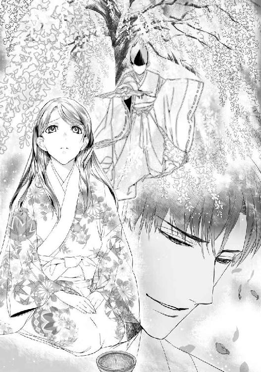
「気分が悪いなら、部屋で休むといい。床を延べさせようか」
「い、いえ。平気です。──あのっ......、崇晃様は澪姫とどんなふうに出会ったんですか？」
妙に焦って尋ねると、崇晃は面食らった顔で苦笑した。
「とある寺だ。その頃俺は猿楽一座にいて、諸国を回っていた。むろん白烏衆の変相だが」
「情報を集めるため......ですか？」
「芸人はどこにいても余所者と認識される代わりに、いても誰も怪しまない。屋敷や城に招かれれば堂々と入り込める。出会ったのは別所温泉の寺だった。俺は一座の勧進興行、澪姫は母親の湯治に付いてきていたんだ。人だかりで舞台が全然見えなかったとこぼすから、キリ（能の最後の部分）のところを舞ってやったらひどく喜んで......自分にも教えろと」
ふっと崇晃が懐かしそうな顔になり、美緒は胸にちくりと痛みを覚えた。
「......もう十年以上昔の話だ。澪姫はほんの子供だったし、覚えていなくて当然だな」
崇晃の静かな声に、何故だかムッとする。
「そんなことないですよ！ 絶対覚えてます。忘れられっこありません」
むきになって言い張る美緒に崇晃は苦笑した。
「何故おまえが怒る？ 澪姫の身代わりを強いられて、さぞ不愉快だろうに」
「そりゃ......、おもしろくはないけど、別に澪姫さんが嫌いなわけじゃないもの......。こんな年で死んじゃうなんてもったいないし、もっと生きたかっただろうなって、思いますよ。すごく似てるから......、他人事とはやっぱり思えなくて」
「──澪姫とは話したのか？」
「あ、いえ......。あたしが連れて行かれたときにはもう......亡くなっていましたから」
そうか、と呟き、崇晃は弔うように目を伏せた。
「あの......。崇晃様は、澪姫さんのことが、ずっと好きだったんですか......？」
思い切って尋ねると、崇晃は小さく嘆息した。
「忘れはしなかったが......、惚れていたというのとは、少し違うかもしれないな」
崇晃は一度置いた茶碗をふたたび手に取り、手のなかで転がしながら考え込むように呟いた。
「たぶん澪姫は......、俺にとって、いちばん綺麗な思い出だった。純粋にただ、楽しくて、優しくて、美しい──夢のような」
歌へや唄へ 折る柳 落つる梅
声の匂ひも 深みどり
「......白烏だった俺は、汚い仕事も散々してきた。澪姫と出会ったとき、すでに自分の年より殺した人数のほうが多かったくらいだ」
美緒は息を呑んだ。情報収集を主にしていたと聞いたが、敵の懐にもぐり込むのだ。当然それだけで済むはずがない。
しばし黙り込んでいた崇晃は、茶碗をもてあそびながらかすかに微笑んだ。
「縁談の相手が澪姫だと知って、不思議な縁だと思った。戦続きの乱世、敵味方はいともたやすく入れ代わる。今日を生き延びるために頭を絞り、利用できるものは利用し尽くし、価値がなくなれば切り捨て、裏切る。それが当然の世の中とわかってはいるが......、いや、だからこそ何かひとつくらいは綺麗なものが手元に欲しかったのかもしれないな......」
コトリ、と静かに崇晃は茶碗を置いた。
「──それも所詮、夢のまた夢。最初から、ないものねだりをしていただけだ」
崇晃は深い黒瞳を美緒に向けた。
「範時殿は、おまえは澪姫にそっくりだと言っていた」
「は、はい......。自分でも、びっくりするくらい......似てました」
「だが、俺は澪姫の顔を知らないんだ」
「────え」
「十年以上前に会ったきりなんだぞ？ 澪姫はほんの子供だったし......、覚えてるのは漠然とした面影というか、全体の雰囲気というか......」
「はぁ......？」
何が言いたいんだろうかと美緒は首を傾げた。崇晃は言いよどむと眉根を寄せ、わずかに顔を赤らめた。
「つまりだな......、婚儀のときにおまえを見て、何というか、その......、いいなと思ったのだ！ 俺は今の澪姫の顔を知らなかったのだから、別に澪姫に似ているからいいと思ったわけではないんだぞ？ その辺は、ちゃんとわかっとけ」
「ぇ......」
ぽかんとしていた美緒の頬が、カーッと赤くなった。慌てて両手で押さえると燃えるように熱い。
（そ、それってもしかして、あたしを見て、いいなと思ってくれた......ってこと......!?）
頬どころか耳まで火がついたように熱くなる。そろりと崇晃を窺うと、彼もまたつられたように顔を赤らめて目を泳がせている。
（ちゃんとあたしを見てくれてたんだ......！）
澪姫だと思い込んで心待ちにしていたのだとしても、実際に美緒を見て気に入ってくれた。崇晃への好意が高まるにつれて大きくなる一方だった、身代わりとしての引け目が、その言葉ですぅっと引いていくような気がした。
「あのっ......、本当にあたしで......いい、のですか......っ!?」
「うむ......、まぁ、好みだし、な......」
照れたようにぼそぼそ呟く様子も嬉しくて、瞳が潤む。頬を押さえながら美緒は微笑んだ。
「嬉しいです......！ あたし、澪姫さんのような綺麗な思い出にはなれませんけど......、何があってもずっと崇晃様の側にいますから」
崇晃は呆気に取られた顔でまじまじと美緒を見つめていたかと思うと急に膝を進め、ぐっと手を握った。
「何があっても......？」
真剣に見つめられてドキッとする。勢いで言ってしまったが、改めて問われた途端、頭の内側で叱りつける声がした。
ずっと一緒になんていられるわけないじゃない。現代に戻りたくないの？
──もちろん戻りたいよ！ でも......。
これ以上彼のことを好きになったら、きっと帰れなくなる。それでもいいの？
──帰りたい。お姉ちゃん。お父さん。お母さん。学校の友だち。快適な暮らし。便利なもの。安全。現代ではあたりまえで、この時代には存在しない、たくさんの物事。
それは失われてしまった『綺麗な思い出』みたいなもの。どんなに手を伸ばしても届かない、夢のまた夢──。
美緒は指先でそっと崇晃の頬に触れた。
温かなぬくもり。真摯で優しくて、少しだけ怖がっているようにも思える黒い瞳。いつのまにか、すごく大切なものがこの時代に生まれてしまっていた。
「......わた、し......。崇晃様が......好きです......」
美緒はこくりと喉を震わせ、自分に宣言するように囁いた。
「ずっと崇晃様の側にいます。何があっても、ずっと一緒にいます」
崇晃の顔がほころび、ぎゅっと抱きしめられた。
「みお......！」
鼓膜を震わせる熱い吐息。今はちゃんとわかる。澪ではなく、美緒と呼んでくれていること。
唇が重なっても美緒は逃げなかった。背に腕を回してしがみつき、自ら唇を求めた。以前は怖かった、息継ぎもままならないほどの激しさが、今はむしろ嬉しい。
崇晃は美緒の打掛を剥ぎ、背中に腕を回して引き寄せた。もどかしげに唇が重なり、歯列の間から舌が滑り込む。美緒は素直に口を開けて受け入れた。
ちゅぷっと唾液の絡む音に薄く頬を染める。軽い酸欠に陥ったのか、頭がぼうっとしてきた。
「ン......」
鼻にかかった甘え声を洩らし、美緒はすがりつくように崇晃の肩からうなじをたどった。小袖の下の逞しい体躯を間近に感じてどきどきしてしまう。
舌を擦り合わされ、甘く食まれる感触にぞくりと戦慄きが走る。崇晃は剥いだ打掛の上に美緒を横たえ、首筋に舌を這わせた。胸元を探っていた手が帯にかかり、ぐっと力がこもる。ふと我に返った美緒は慌てて彼の手を押さえた。
「だ、だめっ......」
「何故だ？ 俺が好きだと言ったではないか」
「そ、そうだけど......」
「それに俺たちはもうとっくに祝言を上げた仲なのだぞ？」
揶揄まじりの笑みに、美緒は頬を染めた。どうしても受け入れられなかった初夜を思い出して、顔が赤くなる。
「あのときはっ......、あたし、偽者だし......、会ったばかり......だったし......」
「婚儀の席で初めて顔を合わせるのは別に普通だろう？」
「あたしの時代では普通じゃないのっ。お見合い結婚はあるけど、それだってお付き合いしてから最終的に決めるんだし！」
「だったらもうかまわぬであろう？ さんざん『お付き合い』はしたはずだ」
悪戯っぽく笑まれて美緒はうろたえた。
「ぇ......と......」
「これでもずいぶん待ったつもりなのだがな」
「き、らわれた、んだと......っ」
「好ましい女子が側に寝ているのに平然としていられるほど、人間が出来てはおらぬよ」
覗き込む崇晃の瞳に情欲が揺らぎ、美緒はぞくぞくした。あのときはとまどい混乱するばかりだったけど、今は彼に求められていることが嬉しくてたまらない。
崇晃は美緒の唇を指先でたどりながら熱っぽく囁いた。
「もう生殺しは勘弁してくれぬか......」
ぞくっ、と身体の中心が不穏に戦慄いた。脚の付け根がきゅうっと引き攣れて刺すような痛みを覚える。
「んッ......」
思わず顎を反らすと、崇晃が喉元にチュッとくちづけた。そのまま体重をかけてのしかかられ、美緒は焦った。
「あ......！ でもっ、まだ、昼間だし......っ、だ、誰か来るかもっ......」
「邪魔せぬよう人払いしてある」
余裕のない声音で呟いて、崇晃は強引に帯を解いた。一番上に着た小袖の襟を暴かれ、美緒は慌てて彼の袖を引っぱった。
「あの、せめて障子を！ 障子を閉めてっ......」
崇晃は溜息をつくと身を起こし、庭に面した障子を端からすべて閉めた。室内が少し暗くなる。乱れた襟元を掴んでドキドキする胸を押さえていると、戻ってきた崇晃が急いたように美緒の手を取って畳に押しつけた。
「さぁ、これでよかろう。これ以上待たせるな」
美緒はぎゅっと目を閉じ、震えるようにこくっと頷いた。崇晃の手が襟の合わせを順々に開いて行き、最後の肌小袖がめくられる感覚に美緒は思わず肩をすぼめた。
剥き出しになった肌に崇晃の視線を感じる。羞恥と緊張とで、産毛が逆立つようだ。確かめるようにそっと肌をなぞり、感極まった声音で崇晃は呟いた。
「綺麗だ......」
固く閉ざしていた瞼をこわごわ開けてみると、崇晃が少し照れたような顔で微笑んだ。彼は身を乗り出し、優しく美緒にくちづけた。麻の肩衣が胸の先端に触れ、きゅっと蕾が固くなる。ふくらみを掌で包み込み、ゆったりと揉みしだかれて美緒は息を弾ませた。
「あ......、はぁ......ッ」
繰り返し舌を吸われ、口腔をねぶられるうちに、脚の付け根に生まれた疼きはますます強まってゆく。美緒は崇晃と抱き合って唇を重ねながら、無意識に腿をこすりあわせた。
崇晃の唇が首筋を這い、耳朶を甘噛みする。
「ひぁっ、ん......！」
美緒は真っ赤になってふるふると震えた。崇晃は目を細めて忍び笑う。
「どうした？ これが気に入ったか」
「く、くすぐった......っ」
肩をすぼめて抗うと、きゅうと胸を絞られて美緒は息を詰めた。
「──っあ！」
びくりと身を縮めると、崇晃は詫びるように優しく唇を吸った。ひとしきり舌を絡ませあい、唾液で濡れた互いの唇に細い糸が伝う淫靡さに美緒は顔を赤らめた。
崇晃は身を起こすと袴の紐を解き、肩衣を脱ぎ捨てて小袖姿になった。脚の間に割り込まれ、膝裏を掴んで押し上げられて美緒は慌てた。
「えっ!? あっ、や......！」
腿の内側を撫で上げられると、ぞくっとして顎が上がってしまう。反射的に脚を閉じようとしたが、かえって大きく割り広げられた。秘処を剥き出しにされる感覚に、美緒は真っ赤になった。
「やぁっ、だめぇっ」
恥ずかしさのあまり美緒は両手で顔を覆って悲鳴を上げた。中心で震えている未熟な蕾に、崇晃の指先がそっと触れる。途端に走った鋭い性感に、美緒はびくりと身体をしならせた。
「んっ......！」
くすぐるように指先で突つかれると、そのたびにびくびくと身体が跳ね、美緒は涙目になった。口許を必死にふさいだが、頼りない声が洩れるのは抑えきれない。
「......案ずるな。挿れる前にしっかり濡らしてやる」
なだめるように言われるとかえって恥ずかしさが増し、燃えるように頬が熱くなった。
（うぅ......、恥ずかしい......っ）
刺激されてぷくりとふくらんだ蕾は、いつのまにかしっとりと蜜にまみれて震えている。摘んできゅっきゅとしごかれると、びりびりと腰骨に性感が走って美緒は喘いだ。
「ふぁ......ン......、んんッ......」
無意識にかぶりを振り、指の関節をくっと噛む。付け根から先端へと撫で上げられ、また撫で下ろされて、そのたびに勝手に腰が揺れてしまった。
（ど......しよ......ッ。き、もち......いいっ......）
はだけた小袖をまさぐり、震える指できゅっと握り込んだ。ぬめる秘裂を前後していた指が、つぷっと蜜孔に沈み、美緒はびくりと目を見開いた。
「あ......ッ!?」
「──痛いか......？」
気遣わしげな声に、ふるっと美緒はかぶりを振った。
「びっくり......したの......」
崇晃は微笑み、詫びるように優しくくちづけた。唇を吸いあいながら、崇晃の指先が少しずつ美緒のなかにもぐり込んでゆく。
「んぁ......、む......ン、ふ......」
濡れ襞がぴったりと彼の指を包み、抽挿に合わせてくちゅくちゅと淫猥な水音が上がる。美緒は熱っぽく喘ぎ、瞳を潤ませてぎこちなく腰を揺らした。
蜜壺をまさぐりながら、崇晃はピンとそばだった胸の頂をぺろりと舐めた。乳輪ごと口に含まれ、じゅっと吸われて美緒はたまらずに嬌声を上げた。乳首を吸いねぶる彼の頭を抱え込み、喘ぎ悶えながら背を反らす。
「たか、あき......さま......ッ。あぁ......っ、ん......！」
濡れそぼった溝をぐちゅぐちゅと掻き回され、下腹部から未知の戦慄きが迫り上がる。美緒は無我夢中で崇晃にしがみついた。
「ひゃあ......っ、あっ、あっ、あひゅ......っ、んんー......ッ」
びくびくと蜜襞が痙攣し、美緒は恍惚に達した。身体から一気に力が抜けて、くたりと弛緩する。快感の余韻でぼうっとしながら、美緒は初めて味わった絶頂を噛みしめた。
（これが......エクスタシー......？）
すごい......。こんなに気持ちいいなんて思わなかった......。
何だか妙に感動していると、崇晃が優しく腿を撫でて囁いた。
「......そろそろいいか？」
頭をもたげ、美緒は赤面した。膝立ちした崇晃のはだけた小袖のあいだから、猛る肉棹が覗いている。
（え......!? お、思ってたより、大きい......っ）
兄弟もおらず、これが初体験の美緒にはサイズの大小などわからない。急に怖くなって息を詰めると、崇晃が困ったように苦笑した。
「そう怯えるな。無理にはしない」
「でもっ......、は、入るの、それ......!?」
「試してみるしかないな」
崇晃はニヤリとして美緒の腰を膝の上に抱え上げた。
「ひゃんッ......!?」
ぬぷ、と固いものが蜜口に押し当てられる。そのままぐっと腰を入れられ、みっしりと締まった雄根が隘路を犯した。想像以上の痛みに襲われ、美緒は悲鳴を上げた。
「いっ......たぁ......ッ！」
見開いた瞳にぶわっと涙が盛り上がる。必死に痛みに耐えていると、崇晃がなだめる口調で囁いた。
「力を抜け。そんなに締められたら奥まで入らない」
「全部入ったんじゃないの!?」
「馬鹿言え、まだ半分も行ってないぞ」
うそっ......と美緒は青くなった。指なんかとは比べものにならない太さと長さだ。指でまさぐられたときだって、無理にこじ開けられたように感じたくらいなのに。
「む、無理......！ そんなの絶対、入らな......っ」
「入るさ。ほら、ゆっくり息をしてみろ」
促されるまま、吸って吐いてを何度か繰り返した。こわばっていた身体から少しずつ力が抜けてゆく。
「......そう、それでいい」
崇晃は囁いて、少し腰を引いた。そして自重を乗せて一気に処女を貫いた。
「いっ......!!」
目の前に火花が散るような衝撃に襲われて美緒はのけぞった。ぐぐっ、とさらに奥まで挿入し、崇晃はホッと息をついた。
「ほら、入ったぞ？」
「～～～ッ」
美緒は生理的な涙で濡れた瞳で恨みがましく崇晃を睨んだ。
「無理にしないって言ったくせにっ......」
「仕方なかろう、最初だけは我慢してもらうしかない」
崇晃はあやすように美緒の額にくちづけた。目許や頬にも優しく唇が押し当てられる。
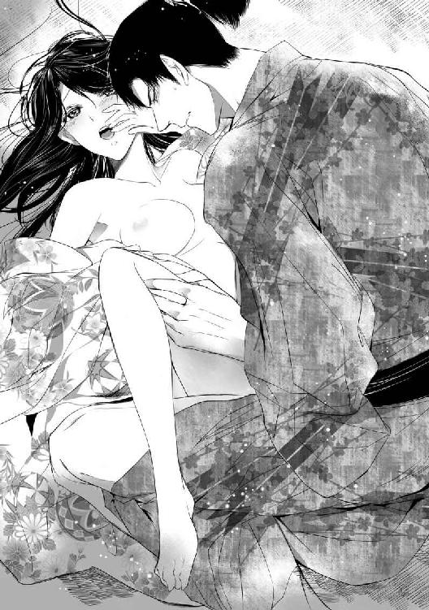
「......これでやっと、本当の夫婦だな」
しみじみと嬉しそうな笑顔に、とくんと鼓動が跳ねる。
（もうっ......、こんな顔されたら怒ってられないじゃない......っ）
美緒は眉を下げ、ぎゅっと崇晃を抱きしめた。唇を合わせ、貪るように甘く吸いあう。逞しい胸板に乳房を押しつけ、膝で腰を挟んでぴったりと密着していると、心地よさと安堵とでうっとりした。
唇と舌を熱っぽくねぶりながら、崇晃は深く繋がった腰を試すようにゆったりと押し回した。
「少し動いても......いいか？」
「ん......」
美緒は顔を赤らめ、おずおずと頷いた。崇晃が腰を引き、ぐちゅりと穿つ。慎重に腰を前後させながら崇晃は美緒の表情を窺った。
「痛くはないか」
「い......たぃ、けど......、へいき......」
やめてほしくなくて強がりを言うと、崇晃は眉を下げて美緒の頬をそっと撫でた。
「すまん......、なるべく加減はする」
「い......の......、もっと......して......っ」
痛みはあっても、穿たれるたびにその奥から心地よさが沸き上がってくる。美緒はぶるっと震え、崇晃にすがりついた。
「あ......っ、なん、か、あたし......、へん......ッ」
抽挿に合わせて勝手に腰が揺れてしまう。繋がった部分が擦れ、疼いて、トロトロと蜜がこぼれた。
「あ......んん......」
とろんとした目つきで腰を振っていると、崇晃が低く唸って美緒の膝裏を押さえた。短い周期でがつがつと突き入れたかと思うと、先端近くまで引きずり出し、蜜襞の締めつけを味わいながらゆっくりと抉るように穿つ。
ぬめる隘路をにゅぷにゅぷと剛直が出入りする感覚に、ぞくぞくした。突かれるたびに奥から熱いものがあふれてくるようだ。
崇晃が乱れた吐息を洩らすのを聞いて美緒はうっとりした。身体の奥深くで直に彼の存在を感じ、彼もまた自分と同じように快感を味わっているのだと実感すると、気分が高揚してますます官能が昂る。
「美緒......、どうだ、気持ちいいか？」
「は......ぃ......！ ぁ......、崇晃様、は......ッ」
「もちろん悦いさ......」
ぐっ、と腰を押し込んで崇晃は低く笑った。ぴったりと繋がって揺すぶられると花芯も一緒に捏ね回され、たまらない快感が噴き上がる。
「んッ、あ、あぁんっ、あっ、あっ」
我を忘れて美緒は悶えた。がくがくと身体が震える。媚壁をこすられるたびに淫らな熱が生まれて、蜜孔がとろとろに蕩けてゆく。
こんなに気持ちのいいものだなんて思わなかった......。それともあたし、おかしいのかな......？ 初めてなのに、こんなにいやらしく、感じちゃって......。
「ふ......ッ、んぅ......！ あぁッ、ぃ......、の......、崇晃、様ッ......、きもち、ぃ......！」
「美緒」
はぁっと熱い吐息を洩らし、崇晃は苦しげに眉根を寄せた。
「......まいったな。もうもちそうにない」
「ぇ......、あ......ッ、ンン!?」
繋がったまま抱え上げられ、より深く熱杭を銜え込まされる。尻朶をぐっと掴まれ、激しく突き上げられて美緒の身体が頼りなく跳ねた。
「あッ、そんな、したら......っ。やぁッ、きちゃ、ぅっ......！ あ......、あ......！」
「──ッ」
崇晃が息を詰め、ぐっと肉楔を打ち込んだ。どくん、とふくれ上がった欲望が弾け、熱い飛沫が奥処に注がれる。崇晃は痙攣する蜜襞のあわいに幾度も精を吐き出した。
放心していた美緒は、くたりと崇晃にもたれて震える吐息を洩らした。頭の内側がじんじんと痺れ、眩暈がする。
崇晃はゆっくりと美緒の背を撫で、甘く唇を吸った。脱ぎ散らかした小袖の上に横たえられ、おとなしくなった雄茎がずるりと抜き出される。その感覚にぞくっとして、頼りなく美緒は喘いだ。
蜜とともに掻き出された精が、未だひくついている蜜孔からトロリとこぼれ落ちる。美緒は震える唇を指先でそっと押さえた。
（なかで......出されちゃった......）
いけないことをしてしまったと思う一方で、悔やむ気持ちにはならない。
（結婚、したんだもの......。あたし......崇晃様と......）
額に乱れ落ちる髪を優しく払い、崇晃がいたわるように囁いた。
「すまない。つらかったか」
ふるりとかぶりを振って美緒は微笑んだ。
「へいき......。嬉しい......です......」
崇晃もまた幸福そうに微笑んで唇を合わせた。じゃれあうようにしばし口唇を吸いあうと崇晃は名残惜しげに身体を離した。身繕いする崇晃を、美緒は肌小袖を裸体に巻き付けながらぼうっと眺めた。
起き上がろうとして、脚の付け根に走った痛みに顔をしかめる。気付いた崇晃が急いで押しとどめた。
「無理に動くな。休んでいろ」
「でも......」
身なりを整えた崇晃は畳に座り込み、美緒の身体をそっと引き寄せた。
「しばらくこうしていよう。な？」
広い胸元に抱き込まれ、優しく背中を撫でられる。美緒は頷いて、うっとりと目を閉じた。
（崇晃様が、好き......）
彼の側にいられるなら、ずっとこの時代にいてもいい。ううん、ずっと一緒にいたい。元の時代に帰れなくても──いい......。
「......好きです......崇晃様」
「ああ、俺も好きだ、美緒......」
真摯な囁きが嬉しくて、じわりと涙が浮かんだ。澪姫の身代わりとしてではなく、美緒自身を好きだと言ってもらえてすごく幸せだった。
どれくらいそうしていただろう。時折唇を合わせては戯れるようについばんだり、崇晃の鬢の乱れを指先で整えたりしながら、睦みあっていると、障子の向こうでかすかな咳払いの音がした。
「──殿。急ぎお知らせしたいことが」
辺りを憚るような声は松風のものだ。崇晃が眉をひそめて立ち上がる。美緒は顔を赤くして座り直し、小袖の襟元を急いで閉じ合わせた。
崇晃は障子を細く開き、松風の報告に耳を傾けた。ぴくりと頬が動き、表情が鋭利に引き締まる。
「──わかった。美緒の身なりを整えて、差し支えなければ後で連れてきてくれ」
「承知いたしました」
障子の向こうで松風が平伏する。崇晃は取って返すと美緒の側に跪いた。
「所用が出来た。おまえにも立ち合ってもらいたいが、身体がつらいなら無理しなくていいぞ」
美緒は慌ててかぶりを振った。
「だ、大丈夫です！ あの......何かあったんですか......？」
ふと不安を覚えて尋ねると、崇晃は甘やかすように微笑んで美緒の頤を摘んだ。
「心配するな。おまえの立場に影響することではない」
崇晃が座敷を出て行くと、縁側で手をついていた松風が一礼して入ってきた。肌小袖一枚羽織っただけで狼狽する美緒を見ても顔色ひとつ変えない。
「お立ちになれますか？ 美緒様」
「あ、ええ......」
よろよろと立ち上がると、松風は手早く小袖を着せかけて整え始めた。脱ぎ散らかされた打掛や小袖を見れば、何をしていたかなど一目瞭然だ。
（うぅ......、恥ずかしい......）
さっさと身なりを整えておけばよかった。寝所でもないところで昼間から致してしまったことに今更ながら羞恥心が込み上げる。だが、松風は別に何とも思っていない顔で手際よく美緒の恰好を直すと、懐から出した櫛でさっと髪も整えてくれた。
「後ほど湯をご用意いたしますので、少し我慢なさってくださいね」
小声で囁かれて赤面する美緒に、松風はにこっと笑いかけた。
「でも、よかったですね」
「......ぅん」
頬を染めて頷くと、美緒は打掛の褄を掻取り、松風の案内に従って座敷を出た。
美緒が連れて行かれたのは屋敷内の建物ではなく、裏手の斜面に造られた土牢だった。政務所や各種の座敷がある主殿や、生活の場である奥の建物とはずいぶん離れていて、土塁や塀で隔てられている。敷地内を案内してもらったときもこちらのほうへは来なかった。
（裏山には危急のときに立て籠もる砦があるとは聞いたけど......）
しかしそれらしい道も見えない。松風に訊くと、間道はわかりにくいように隠されているとのことだった。
土牢はごつごつした岩場の奥にあった。崖上から樹木が張り出して薄暗く、湿っぽい。岩肌はところどころ苔むしている。
裾を引きずらないように褄を大きく掻取って石段を登ると、具足と槍で武装した侍がふたり警護に立っていた。木戸は開いていて、軽装の侍たちが慌ただしく出入りしている。松風は眉をひそめて警護の者に尋ねた。
「何かあったの？」
「それが......」
木戸の向こうを気にしながら侍は言いよどんだ。そこへ、中からいつも以上に固い表情の村雨が現れた。
「姉さん」
「村雨。どうしたの、いったい。殿のお言いつけどおり美緒様をお連れしたけど......」
「ええ......、こちらへ。殿は中でお待ちです」
とまどいながら美緒は木戸をくぐった。中に入ると、土の匂いのするひんやりとした空気が冷たく身体を包んだ。天井は張り出した岩肌が剥き出しで、一方の壁は格子になっている。
村雨と松風に前後を挟まれて歩きながら、美緒は牢の内部をこわごわ覗き込んだ。どれも無人だった。
（もしかしたら、あたしもここに入れられてたのかも......？）
想像して美緒はぞっとした。偽者だとバレた段階で、土牢に放り込まれてもおかしくなかったのだ。納戸に閉じ込められる程度で済んだのは、よほどの高待遇だったのではなかろうか。
一番奥の土牢の前に、崇晃が腕組みをして立っていた。険しい顔で格子越しに牢のなかを眺めていた崇晃は、美緒に気付くと無表情に頷いた。ついさっきまで美緒を腕に抱いて愛を囁き、甘やかしていたのが信じられない冷徹さだ。
「崇晃様......？ あの、どうかなさったのですか......？」
崇晃は無言のまま、顎で牢の内部を示した。おそるおそる覗き込むと、剥き出しの地べたに誰か仰向けに倒れている。その顔を見て、美緒はヒッと喉を鳴らした。
「──く、葛葉!? どうしたの......!?」
思わず駆け寄って格子を手で掴む。いくら名を呼んでも、目を閉じたままぴくりとも動かない。
「まさか......」
「もう死んでる。自害したんだ。口中に毒を隠していた」
憂鬱そうに崇晃が呟いた。
「自殺......!? どうして葛葉が!?」
「この女は、おまえが澪姫の身代わりだと知られた途端、逃亡を図った。追手を差し向け、先程ようやく捕らえたと知らせが入ったので急いで飛んできたんだが......、尋問しようと猿ぐつわを解いた途端に、な......」
崇晃は悔しげに唇をゆがめた。
美緒は茫然と葛葉の死に顔を見つめた。殴られたらしく、唇の端が切れ、頬が腫れている。まだこときれて間もないせいか、肌の血色も褪せてはいない。
「逃げたって、どうして......!? 自分も罰せられると思ったの......？」
「この女は忍びだ。怪しいとは思っていたが、捕まりそうになって反撃してきてはっきりした」
「忍びって......、葛葉が!? そんな......っ」
「とぼけんじゃねぇ。知ってたくせに」
いきなり低い声が聞こえてきて、美緒は崇晃の向こう側にもうひとり誰かいることに気付いた。岩陰に佇んでいたことに加え、まったく気配を感じさせなかったのだ。翳になって顔がよくわからないが、声の調子からして崇晃と同じくらいの若い男性だろう。
（......っ！ この声、もしかして......？）
「輿渡しのときの......？」
思わずまじまじと見つめると、ギラリと眼光鋭く睨み返された。
「やめろ、余十郎」
崇晃にたしなめられ、男は沈黙した。
（やっぱり、あのときの人だ......）
境目での輿渡しのとき、侍女は帰れと命じた人物。あのときは美緒が懇願して葛葉ひとりを残してもらった。もしかして、そのことを根に持っているのだろうか......？
男は不満げにふたたび口を開いた。
「澪姫は、この女だけは連れていきたいと言い張った。この女を使って藤波の内情を探ろうとしていたに決まってる」
美緒は唖然とした。
「なっ......、何言ってるの!? 葛葉が忍びだなんて、全然知らなかったわ。実家で世話になってたから頼りにしてただけよ！」
「嘘をつけ！ 淵瀬と真田はぐるになって藤波を嵌める気なんだろうがっ」
「冗談じゃないわっ」
頭に来た美緒は男に食ってかかった。
「真田様は藤波と仲良くしたいからわざわざあたしを養女にして嫁に出したんじゃないの。兄が考えてるのは淵瀬の再興だけよ！」
「じゃあ何で忍びなんぞ連れてくる!?」
憤然と前に出た男の顔が、ようやくはっきりと見えた。思ったとおり、崇晃と同じような年頃の男だった。崇晃ほどではないが、この時代にしては背の高いほうだ。普通にしていれば精悍さ漂う男前だろうに、今はとにかく激怒しているせいで悪人面にしか見えない。美緒は気圧されそうになったものの、どうにか足を踏ん張って言い返した。
「だから知らなかったって言ってるでしょ!?」
「んなわけあるか！」
「──よさないか、ふたりとも」
眉間に深くしわを刻んで、崇晃がふたりを引き離す。美緒は崇晃の腕をぎゅっと抱え込んで余十郎を睨んだ。
（何なのこいつ！ 何でそんなにあたしを敵視するわけ!?）
逆毛立った猫が威嚇しあうように互いに睨み付けていると、崇晃がげんなりと嘆息した。
「気にするな、美緒。余十郎は警戒心が強い質なんだ。余十郎、美緒は俺の正室だ。口のききかたに気をつけろ」
ザマーミロとばかりに舌を突き出してやる。余十郎は憤怒の形相で眉を吊り上げたが、さすがにそれ以上は言い返すことなく引き下がった。
「美緒。葛葉がおまえの侍女になったのは淵瀬範時の命令だな？」
我に返ってパッと腕を離し、美緒は顔を赤らめながら頷いた。
「あ、はい。でも、葛葉が忍者──忍びだなんて、わたし本当に知らなかったんです。普通の侍女だとばかり......。以前から澪姫に仕えていて、何でもよく知っているから、って言われて」
「ところが確かめてみると、葛葉が澪姫の侍女になったのは俺と婚約した後だそうだ。携えてきた紹介状に、公卿の女房をしていたこともある教養ある未亡人だと書かれていたとか......。どうせ偽造だろうが、範時は疑いもせず雇い入れた。藤波家は流罪になった皇子の末裔を自称していることだし、そこへ嫁ぐことになっている澪姫の侍女にはちょうどいいと思ったそうだ」
美緒はとまどった。
「え......、それじゃ葛葉は、誰か他の人に雇われた忍び......ってことですか？」
「そうなるな。屋敷に入ってすぐ、松風が気付いた。挙措がどうもただの侍女とは思えぬと。それで、美緒を見張るふりをして実際には葛葉のほうを監視させた。この屋敷の使用人はほとんどが白烏衆だ。葛葉が何を探ろうとしていたにせよ、ほぼ動きは封じられたはずだが......」
「え......そうだったの？」
驚いて振り向くと、松風は眉を垂れて苦笑した。
「美緒様に忍術の心得がないことはすぐにわかりましたが......、ひとりだけ伴うことを許された侍女として葛葉を選ばれましたので、正体はご承知の上かと」
「知らなかったわ、全然！ 葛葉を選んだのは、その......、いろいろと事情を知っていて、相談できるのが葛葉だけだったからよ」
崇晃が振り向き、じっと美緒を見つめる。その瞳の冷徹さに思わずぞくりとした。
「......あくまで正体は知らなかったと申すのだな？」
尋問するみたいな口調にムカッと来て、美緒は崇晃を睨んだ。
「知りませんでした！ 葛葉のことは信用してたし、頼りにしてたんです。そりゃ......、仲よくはなかったけど......。でも葛葉がいなかったら、こうしてお嫁に来るのも難しかったかもしれないわけで......」
口ごもると、崇晃はフッと苦笑した。
「そうか。ならいい」
崇晃は何やら考え込むように眉根を寄せ、牢の中に横たわる葛葉の遺骸を眺めた。
「......誰に雇われていたのか聞き出せなかったのは残念だ。結局、目的もはっきりしないままか」
「雇い主は真田でも淵瀬でもない誰か......ってことですよね？」
「だが、目的は何だ？ 藤波の内情を探るのなら、やけに迂遠なやり口ではないか」
「用心したのでは？」
「かもしれんが......」
腑に落ちない、と崇晃は眉をひそめる。黙り込んでいた余十郎が、ふと思いついたように呟いた。
「......藤波家に潜り込むことが目的ではなかったんじゃないか？」
「何......？」
虚を衝かれたように崇晃は余十郎に視線を向けた。余十郎は軽く目を瞠り、急に笑いだした。
「なーんだ、そうか！ そうだぜ、簡単なことだ。この女の狙いは、きっと最初から澪姫だったんだよ」
「えっ......」
美緒は混乱し、すがるように崇晃を見た。思い当たったことでもあるのか、崇晃は愕然とした顔で硬直している。余十郎はちらっと崇晃を眺め、見下すような視線を美緒に向けた。
「わからないか？ 葛葉は澪姫を殺すために淵瀬家に入り込んだってことだよ、偽姫様」
「......！」
この人にも知られてる......!? ──いや、当然か、と美緒は思い直した。崇晃は白烏衆を使って淵瀬を調べさせたのだ。余十郎が知らないわけがない。美緒はそっと崇晃の袖を握ったが、彼は身じろぎもせず葛葉の死体を凝視している。急激に心細さが押し寄せた。
余十郎は腕を組んでニヤリとした。
「この女は甲賀者だな。口中に自害用の毒を仕込んでる忍びなんぞ、そうはいねぇ。甲賀者は毒や薬の扱いに長けている。病死に見せかけて毒殺するくらい、わけもないことだろうよ」
「そんな......！ それじゃ、葛葉が澪姫を毒殺したっていうの!? 何のために!?」
「そりゃ、婚姻を阻むためだろ。つまり、藤波と真田に仲よくなってほしくない誰かの差し金ってことだ」
「じゃ......、じゃあどうして葛葉はあたしを殺さなかったの？ あたし、こうしてお嫁に来ちゃったわよ」
偽者だろうと、真田が美緒を『澪姫』として養女にし、嫁に出した以上、婚姻による同盟は成立している。先程それを弁丸と崇晃とで改めて確認もした。
「もちろん殺すつもりだったろうさ」
あっさり言われて美緒は目を見開いた。余十郎は獰猛な笑みを浮かべ、嘲るように美緒を眺めた。
「続けざまに殺したら、いくら淵瀬範時がボンクラでもさすがに変だと思うだろ。それにあんた、単なる身代わりってだけじゃなく、死んだ澪姫にそっくりだって言うじゃないか。自分が殺した人間にそっくりな奴が間も置かずに現れたら、さすがに二の足を踏むんじゃないか」
「なっ......、何よそれ!? どういう意味!?」
剣呑な目つきでまたもや睨み合っていると、ぼそりと低く崇晃が呟いた。
「やめろ」
我に返って美緒はしゅんとうなだれた。崇晃の気持ちを考えたら、言い争いなどするべきではない。
（崇晃様、ショックよね......）
単なる病死だって充分悲しいのに、死因が毒殺だとしたらひどすぎる。余十郎もさすがに気まずくなったのか、空々しい声音で吐き出した。
「ふん......、崇政との関わりは結局わからずじまいかよ」
（崇政......？）
美緒はハッとした。そういえば以前、葛葉が崇政と立ち話をしているのを見かけた。あのとき葛葉は崇政からアヤメをもらったと言っていたが......。
（まさか、崇政様が葛葉を雇って淵瀬家に送り込んだ......!?）
崇晃は崇政が野心を抱いていることをすでに把握しているが、余十郎までそんなことを言い出すからには疑いはかなり濃厚......ということなのだろうか。
崇晃の袖の端を掴んだ手を急に振り払われる。びくっとした瞬間、大きな掌でしっかりと手を握り締められた。
「──戻ろう」
予想外に静かな声で崇晃は呟いた。彼は牢番に遺骸の始末を命じると美緒の手を引いて土牢を出た。そっと窺った崇晃の横顔が、ひどく厳しい。話しかけるのも憚られ、繋いだ手をおずおずと握り締める。崇晃はふと我に返った様子で足を止めた。
「......すまん」
眉を垂れた表情がせつなくて、美緒は急いで首を振った。
「謝らないで。澪姫さんが毒殺されたかもしれないなんて......、あたしだってショック──えぇと、すごく驚いたし、悲しいです」
美緒は彼の手を両手で包んだ。いま彼の心を占めているのは澪姫なのだろうけれど、不思議と嫉妬は感じなかった。それどころか、どうにかして彼を慰め、元気づけてあげたくて胸が痛いほどだ。
......だいじょうぶ。わたしはここにいるわ。
だから、悲しまないでね......。
ふつふつと心の奥底から沸き上がる、言葉にならない想い。どうすれば伝えられるのだろう。もどかしさに焦燥感ばかりがつのってゆく。
「すまない、美緒。おまえに対する気持ちは変わらないから案ずるな」
美緒はふるっとかぶりを振り、握り締めた崇晃の手に何度も唇を押しつけた。
違うの。謝らないで。
謝らなければならないのは、わたしなの......。
崇晃は不思議そうにそれを眺めていたが、指の背で美緒の頬を撫でると、すっぽりと掌で包み込んだ。
「......みお......？」
熱っぽく視線が絡んだ、その刹那。
「────おい、いつまでその偽姫を野放しにしておくつもりだ!?」
いきなり刺々しい声が上がり、美緒は飛び上がりそうになった。溜息をついた崇晃が、うんざりした視線を背後に投げる。
「おまえも大概しつこいな、余十郎」
見つめ合っていたのを見られて気恥ずかしくなり、美緒は崇晃の広い背中に隠れた。そろっと覗き見ると、殺意すらこもっていそうな視線が突き刺さってきてビクッとする。
「淵瀬範時は、その女が身代わりだと認めたんだろう!?」
「俺に対してだけ、な。他には誰も聞いていないし、暴き立てるつもりもない。それに、身代わりであっても真田が本人と認めている以上ここにいるのが『澪姫』だ」
安心しろと言い聞かせるように崇晃が美緒に微笑みかけるのを見て、余十郎はギリッと歯噛みした。
「......そうまでして真田の後ろ楯が欲しいのかよ。何を遠慮してやがる。崇政が邪魔なら、すぐにでも俺が──」
「黙れ」
鞭打つような声音に余十郎の顔がこわばる。崇晃は眼光鋭く余十郎を見据えた。
「内輪揉めなどしていては、それこそ奴らの思うつぼだ。身内で相争って疲弊すれば、藤波は滅び、白烏衆の存在は宙に浮く。それを横から悠々と掻っ攫おうというのが真田の目論見だと何故わからぬ？」
「知ったことか！ 誰に仕えようと白烏は白烏だ。とまり木が変わったからといって何が違う？ 誰が主になろうとやることは変わらねぇ」
「ならばおとなしく俺の命に従ってろ」
「てめぇっ......、偽者を押しつけられて頭に来ないのかよ!? 馬鹿にされてんだぞ!?」
「もしそうなら弁丸殿をわざわざ寄越しはしない」
「あの童は証人（人質）じゃねぇ、真田の間諜だ！ 白烏の子供にもあっというまに馴染みやがって......、ったく油断も隙もありゃしねぇぞっ」
腹立たしげに毒づく余十郎に崇晃は苦笑した。
「弁丸殿は人懐っこいからな......。いずれ真田の要請で戦働きをするんだ、悪いことではなかろう。下手にいじめれば、かえって白烏衆の評判を落とすことになるぞ。自重するのだな。──さぁ、行こう、美緒」
崇晃は喧嘩腰の応酬にすっかり固まっていた美緒を促して歩きだした。背後で余十郎がやけくそのように叫ぶ。
「────んだよっ、結局その女にたらし込まれただけだろうがっ。けっ、とっくに真田の思うつぼに嵌まってんじゃねぇか。見損なったぞ！」
「んな......ッ!?」
美緒は憤然と振り返った。
「変なこと言わないでくれる!? あたしは崇晃様が好きなんだからっ、何がどうなろうとこの人の味方だよ！ 夫婦の問題に首を突っ込まないでよね！」
「んだとォ......!?」
美緒の剣幕に呆気に取られていた崇晃は、ぷっと噴き出して美緒の頭をぽんと撫でた。
「もうよい。──余十郎、俺は真田と争うつもりはない。確かに、崇政が妙な気を起こさぬよう歯止めになってもらえればいい......とは思っているが」
「けっ、腰抜けめ！」
「俺はただ、藤波一族と白烏衆、どちらも大事にしたいだけだ」
促されて歩きだすと、背後から歯ぎしりするような低声が聞こえてきた。
「......世迷い言ほざいてんじゃねぇよ......！」
振り向いたとき余十郎の姿はすでになかった。それでも自分に対する怨念が渦巻いているかのようで、美緒はぞくりと身を震わせた。崇晃は美緒の肩を抱いて苦笑した。
「すまん。余十郎は悪い男ではないのだが、ひどく警戒心が強くてな」
「余十郎さんは藤波のご一門なんですか？ 崇晃様とずいぶん親しそうですけど......」
「いや、あいつは白烏衆だ。俺とは幼なじみで、未だその気安さが抜けない」
そういえば崇晃は白烏として育ったんだっけ。
「それじゃ、一緒に、えぇと......猿楽一座に？」
「ああ。余十郎は藤波郷の生まれではなく、旅の途中で加わった。戦に巻き込まれ、焼働きで住む場所も親もなくしてな」
「焼働き？」
「戦のとき、村落や町家に放火することだ」
ひどい、と美緒は顔をしかめた。現代の常識で善悪を判断してはいけないが、兵士でもない一般庶民の家や田畑を焼くなんて、やっぱり酷い。
「余十郎は野武士（主を持たない侍）の下っぱになって盗みや略奪行為を繰り返していたんだが、たまたまうちの一座に潜り込んだところを取り押さえられた。身体能力を見込まれて白烏衆に加わり、訓練を受けて忍びになったんだ」
「もしかして、取り押さえたのって崇晃様......？」
崇晃は笑っただけで答えなかったが、たぶんそうだったのだろう。
「余十郎のような拾われ者はけっこう多い。藤波郷の領民は全員、基礎的な忍びの訓練を受けてはいるが、どうしたって向き不向きはあるし、農繁期はそれどころではない。諸国を回って諜報活動をしながら見どころのある孤児を拾い育てるのも一座の大事な仕事なんだ」
なるほど、と美緒は頷いた。
「そういう孤児たちにとって一座を始め白烏衆は大切な仲間。家族と言ってもいい。しかし、領民出身者と違って上役である藤波家への忠誠心は薄くてな......。一年の大半を旅しているせいか、藤波郷を故郷と思う意識もなかなか育たない」
「松風や村雨は藤波郷の生まれなんですか？」
「ああ。互いに対抗意識を持つのは悪くないが、行き過ぎても考えものだ。特に余十郎は抜きん出て腕が立ち、面倒見もよくて拾われ者たちに慕われている。そのぶん藤波郷出身者に対するふるまいが少々高圧的になるきらいがあってな」
崇晃は悩ましげな溜息をついた。
「......余十郎と俺は兄弟のように育ったから、余計におもしろくないのだろう。俺が藤波の当主になったことが」
美緒は首を傾げた。
「どうして？」
「親父殿は一座の女忍びに気まぐれに手をつけて、子を産ませても側室にするでもなく放っておいた。なのに、跡取りがいなくなると有無を言わさず俺を連れていった。そのときも騙し討ちのようで、余十郎が事情を知ったのはずいぶん後だったそうだ。......今でも先の頭領──親父殿を恨んでいるのかもしれないな」
「でも......、崇晃様とは仲がいいんでしょう？」
「どうかな。実はとうに見限られているのかもしれん。家中のくだらない勢力争いを避けるために崇政や愁雲院を立てるのも、余十郎からすれば不甲斐なく見えるだろう。......あいつは単純だから、邪魔者は消せばいいと思ってるんだ。俺が命じれば、ためらいなく、いや、むしろ嬉々として実行するだろうな」
美緒はぞくっとした。崇晃の言葉はけっして大げさとは思われない。あの余十郎という男は、崇晃を邪魔するもの、彼の障害となりそうなものなら何であろうと容赦なく排除しそうな気がする。そう......、崇晃ではなく、彼自身がそう思い込んだものを。
「美緒」
崇晃に呼ばれて、美緒はハッと我に返った。崇晃は美緒を抱き寄せ、あやすようにそっと背中を撫でた。
「心配するな。もうこんな不快な思いはさせない」
「へ、平気です。何か言われたら、倍にして言い返してやります！」
拳を握って宣言すると、崇晃は眉を下げて笑った。
「はは、啖呵を切る美緒は頼もしかったな。惚れ直したよ」
「えっ......、ほ、本当......？」
「ああ。......今宵ゆっくり話してやろう」
「た、崇晃様......っ」
耳元で囁かれ、耳朶が燃えるように熱くなる。政務所に戻ってゆく崇晃と別れ、侍女たちに付き添われて奥へ向かって歩きだしても、先ほどの濃密な交歓がしきりと思い出され、顔が赤らむのを抑えられなかった。
「────夜って、本当に暗かったんだなぁ......」
美緒は明かり障子を細く開き、ぼんやりと夜空を見上げて呟いた。月はどこかにあるようだが、この位置からは見えない。
室内には油皿の載った灯台がいくつかあるものの、すぐ側に引っつかないと本も読めない程度の光量だ。もっともどんなに明るかろうと、毛筆ですらすらと流麗に書かれた書物など美緒には読めっこないのだが。
「電気のありがたみを思い知ったわ」
明かりだけではなく、ドライヤーもないから髪は自然乾燥させるしかない。ちなみにシャンプーもないので洗髪には米のとぎ汁を使う。
いっそ短く切ってしまいたいとうっかり洩らすと、松風が「とんでもない！」と目を吊り上げた。この時代、男ですら髷を結うからそれなりに長いのだ。女で短髪など幼児でもなければありえない。しかし、短いほうが楽でいいじゃないのと村雨が加勢してくれた。この姉妹、顔はよく似ていても性格はだいぶ違う。
「あたし、本当にこの時代でやっていけるのかしら......」
不景気な溜息が出た。蒸し風呂や盥で沐浴するのもだいぶ慣れたが、たまには湯船に浸かりたい。こう、ざばーんと。
「あー、温泉に入りたーい！」
「入りたいなら連れてくぞ？」
誰もいないと思って叫んだ美緒は、ぎょっとして飛び上がった。振り向くと単の小袖姿の崇晃が不思議そうな顔で立っていた。
「温泉あるの!?」
「だいぶ山奥だが、一応滞在できるようにはしてある。──具合でも悪いのか？」
「えっ、どうして？」
「温泉は養生に行くものだ」
「あ、そうなんだ......。あたしの時代は別に具合が悪くなくても行くのよ。レジャーとして」
「れじゃあ？」
崇晃はとまどい顔で首を傾げた。美緒は急いで言い直した。
「あ、えっとね......、楽しみってこと！ 温泉に入ってリラックス──じゃなくて、えーと、くつろぐの。今はそういうことしないの？」
「のんびり湯治に行くようなものか」
「まぁ、そうね。長逗留はあんまりしないけど。日帰りとか、二、三泊くらいで」
「忙しない時代だな」
「そう言われれば確かにそうね」
うーんと溜息をつくと、傍らに腰を下ろして崇晃は苦笑した。美緒は軽く彼を睨んだ。
「信じてないんでしょ」
「おまえが未来から来たということか？ ......そうだな。正直、半信半疑だ。しかしおまえは俺には理解できぬことを口にするし、遠いところからやって来たという気はしてる」
無理もないか......と美緒は眉を垂れた。
「おまえ......、家族はいるのか」
「うん。両親と姉がひとり。両親は仕事で外国に行ってて、あたしはお姉ちゃんと一緒に暮らしてたの」
「がいこく......」
「えっと、異国って言えばいいのかな？ イギリスにいるんだけど」
「いぎりす？ それはどの辺りの国だ？」
「えぇと......、スペインとかポルトガルはわかるよね？」
「南蛮人の国だろう」
「そのずーっと北のほう」
「ああ、紅毛人の国なのだな」
「うん？ まぁ、そうかな......？」
紅毛人というのはオランダ人を指してたような気もするが。ま、イギリスは海を挟んで隣だし。
美緒は持てる知識を総動員して、世界地図を描いてみた。かなり適当だが、概略はわかるだろう。
「これが日本ね。で、ここが韓国──あ、今は朝鮮か。で、中国でしょ。中国は今何だっけ？」
「明だ」
「あ、そうそう、明ね。で、ここがインド、アラビア半島、アフリカ、ここがスペインとポルトガル。──で、この島がイギリスね」
崇晃は感心したように手書きの地図を眺めた。
「こんなに遠くては行き来も大変だな。滅多に会えまい」
「飛行機なら一日で着くよ」
「ひこうき？」
「空を飛ぶ乗り物。すごく速くて、人もたくさん乗れるのよ」
「空を飛ぶだと!? それは鳥の一種か？」
「や、違うけど。どういう原理で飛ぶのかは......、あたしにも難しくて説明不能だわ」
「............いや、聞いても理解できそうにない」
美緒の描いた飛行機の図を眺めて崇晃は眉根を寄せた。ちなみに美緒は絵は得意なほうで、けっこううまく描けたと思う。
「美緒はいろいろなことを知っているのだな」
「いちおう高校生だし、受験生なんで」
学校制度についてざっと説明すると、崇晃は微笑んだ。
「誰もが平等に教育を受けられるのはよいことだ。美緒が生まれ育ったのは平和な世の中らしい」
「まぁ、日本国内は比較的ね。でも、世界のどこかでは絶えず戦争してるよ」
「何百年たっても、教育が行き渡っても、人間はそう変わらないということか」
「そうだね......」
何だかしんみりして美緒は頷いた。
思いつくまま、二十一世紀の日本と世界の話をした。場所も時代も飛び飛びで、崇晃にすれば信じがたい話ばかりだろうに、そんな馬鹿なと笑うこともふざけるなと怒ることもなく、目を丸くしつつも熱心に聞いてくれた。
「──美緒はまるで時の旅人のようだな。以前、変わった字体で書き散らしていた......月日は百代の過客にして」
「行きかふ年も又旅人也。『おくのほそ道』よ。今はまだ......存在してないわ」
「未来の書、か」
「そうなるね。あたしの時代からすると、すごい古典なんだけど」
信じる信じないはともかく、真摯に耳を傾けてくれるのが嬉しくて、美緒は目許をぬぐってにっこりした。
「信じられないよね......。あたしだって、なんでこの時代に飛ばされちゃったのか、わけわかんないもの。そもそもこんなことありえないって、何度も、思ったんだけど......っ」
急に嗚咽が込み上げそうになって美緒は口許を押さえた。
「......っ、こんなの夢だって......、何度もほっぺたをつねって......、寝て起きれば夢から覚めるはずだって、毎晩、悪夢から覚めますようにってお祈りして眠って......」
崇晃が手を伸ばし、美緒を懐に抱き寄せた。美緒は胸板に顔を押しつけて歯を食いしばった。
「なのに、全然、目が覚めないの......っ」
「......俺は、夢でなければいいと思う」
崇晃の呟きに、美緒は濡れた瞳を見開いた。彼はすまなそうに苦笑して美緒の頬に伝う涙を拭い取った。
「目が覚めたら美緒が消えているなんて、いやだからな」
「......！」
衒いのない言葉に顔が火照る。美緒は慌ててうつむいた。その顎を掬い取るようにして、崇晃は尋ねた。
「美緒は、朝目覚めて俺がいなくなってても平気か？」
「へ、平気なわけないでしょ!? 意地悪なこと訊かないでよっ......」
「もし、元の時代に戻れる手段があったとしても......、帰したくないな」
崇晃の囁きに熱がこもる。ドキドキしていると、彼との距離がぐんと近くなって美緒はうろたえた。
「美緒......。このままずっとここにいてくれないか。澪姫としてではなく、ただ、俺の妻として」
希うような真剣な声音に、美緒はかぁっと赤くなった。形としてはとっくに結婚しているのだし、ついに身体を重ねもした。好きだと言われた。でも、美緒自身に求婚されたのは、これが初めてのような気がする。
「あ......あたしで、いいの......!?」
「美緒がいいんだ」
きっぱりと崇晃は言い切った。感動に胸を高鳴らせながらも、ふと不安に襲われて眉を垂れる。
「でも、あたし......、崇晃様の奥方として、ちゃんとやっていけるのかな......。さっき、一瞬だけど、崇晃様のこと......怖いって、思っちゃったし......」
崇晃は眉を寄せて苦笑した。
「怖い、か......。まぁ、当然だな。」
「ち、違うの！ 怖くていやだとかいうんじゃなくて！ その......怖いって思っちゃった自分が、情けなくて......。こんなんじゃ、武将の妻なんて、とても務まらないって......」
崇晃は、ふっと顔をほころばせ、美緒の頭にぽんと手を載せた。
「それでいい。俺を否定せずに、側にいてくれれば......、俺にはそれで充分だよ」
愛しげに頬を撫でた指が唇をなぞる。そっと押し当てられた崇晃の温かな唇を、美緒は呆然と受け止めた。
「......そう驚かれると困惑するな。口吸いなど、もう何度もしたではないか」
色香漂う目つきにますます赤くなって目を泳がせていると、何故か崇晃は憮然と嘆息して、いきなり美緒を抱き上げた。
「ひゃぅっ......!?」
「まったく、おまえという奴は！」
「えっ、何!? 何なのっ」
「そんな顔をしておいて、誘ってないなどと言い張るのだろうな」
「さ......!? どんな顔っ......!?」
美緒を褥に下ろし、崇晃はニッと笑った。
「むろん、可愛い顔だ」
まるで猛獣が笑ったみたいに思えて、ひくりと美緒の口許が引き攣る。躊躇なく帯を解かれて、美緒は焦った。
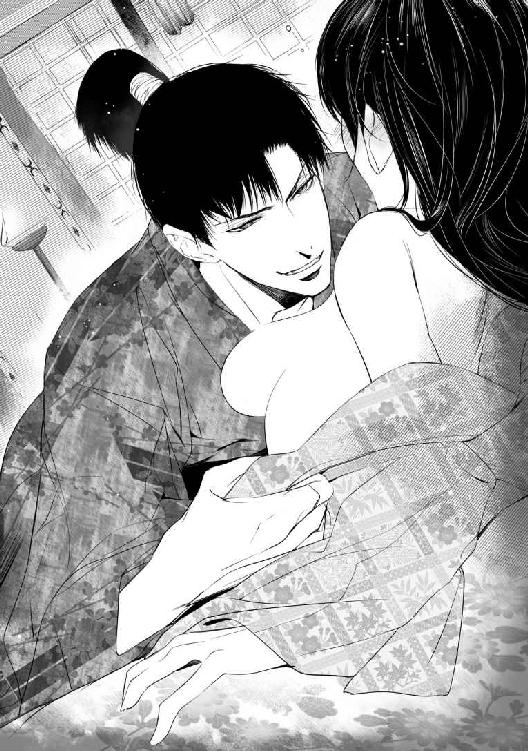
「あ、あのっ。昼間にしたばかりじゃ......」
「あれくらいで足りるものか。さんざん生殺しを強いられたのだぞ」
「そ、そんなつもりは......っ」
「さっきどれだけおまえに惚れ直したか、とっくりと教えてやりたいしな」
「ひゃあんっ」
きゅう、と乳房を絞られ、尖りを口に含まれる。
「んッ......！」
美緒は反射的に口を手で押さえ、ぶるぶると震えた。それをいいことに、あっというまに小袖の前をはだけられてしまう。ごつごつした崇晃の掌の感触に、ぞくっと戦慄きが走る。
ぷくりと尖った乳首を舌で捏ね回しながらじゅっと吸われ、美緒はぞくぞくっと背をしならせた。
「や......、だめ......ッ、あ！ そんな、吸っちゃ......！」
真っ赤になって抗いながら、過敏になった乳首を舐められるたびにじんじんと性感が疼いて力が入らなくなる。
「可愛いな、美緒......。こんなに固くして。真っ赤に熟れて、すごく美味しそうだ」
「やン！ っひぁ！ あっ、あン、んぅっ」
舐め回されたかと思うと今度はこりこりと甘く食まれ、鋭い性感に美緒は涙ぐみながらぞくんと震えた。
（やだ......っ、なんでこんな、感じちゃうの......？ 気持ちよすぎて......とま......ンなッ......！）
乳房を弄びながら、崇晃の手が脚のあいだに割り込んで来る。現代のような下着はつけていないから、侵入を阻むものは何もない。あっというまに崇晃の指は茂みのなかに潜り込んだ。
「んッ......！」
ちいさな花芽を突つかれてびくりとする。反射的に脚をきつく閉じ合わせたが、かまわず崇晃は指を進めてきた。そのあいだも片手で乳房を揉み、舌で乳首を嬲り続けている。くにくにと花芯を捏ねられて美緒は身悶えた。
「濡れてるな」
耳元で笑み混じりに囁かれ、美緒は赤面しながらいやいやと首を振った。
「崇晃様が、いやらしく触るから......ッ」
「可愛いぞ？ ほら......、もうこんなに玉門が蕩けてる」
にゅるにゅると指を抜き差しされ、美緒は喘いだ。言われるまでもなく、秘裂はとろりと甘い蜜であふれ返っていた。
「あッ、は......、ぁん！ んっ、い、ぃ......！ ん......、くひ......ッ」
きゅっと乳首を摘まれ、くりくりと紙縒られて美緒は震えた。
（きも、ちぃ......。敏感なとこ......全部いっしょに......されて......っ）
指先で尖りを弄り回しながら、もう片方の乳首を吸いねぶる。秘処に侵入した指はぬめりをまとった花芽を摘み、きゅっきゅとしごいていた。
「あっ、あっ、だめ......っ、そんな、したら、あたし......っ」
「みお......」
甘く官能的な声音で囁かれ、ますます肌が過敏になる。
（や......、きちゃう......！ イ......く......ッ）
無意識にぴんと脚を伸ばし、腰が浮き上がる。のけぞりながら美緒は絶頂に達した。
「は......ひゅ......」
びくびくと媚肉が痙攣し、脳裏がじんと痺れる。わななく女陰をゆるりと掻き回しながら、崇晃は美緒にくちづけた。
「ん......」
ぬる、と舌が入り込み、美緒の舌に淫靡に絡みついた。ちゅぷちゅぷと水音を立てながら舐めしゃぶられていると、舌の動きと秘処をまさぐる指の動きが連動して感じられて、美緒はふたたび悦楽に溺れた。
崇晃は恍惚とした美緒の口腔を嬲り尽くすと、唾液で濡れた唇をぺろりと舐めた。放心している美緒の脚を左右に大きく広げ、とろとろに蕩けた中心に猛る屹立をあてがう。張り出した先端が、ぐちゅん......と蜜孔を犯す感触で我に返り、美緒は慌てて上半身を起こした。
「あ......！ 待って......っ」
追い詰められたような声に、崇晃の動きがふと止まる。
「......すまん。さっきが初めてだったんだよな......。入れるのはまだつらいか」
眉を垂れて「すまん」ともう一度呟き、崇晃は身を起こした。美緒はとっさに崇晃の襟を掴んだ。意外そうに目を見開いた彼の表情に、かぁっと赤面する。
「ち、違うの。あの......っ！ ちょっとだけ......待って、ほしい......の......」
「......怖いか？」
「こ、怖くはないけど......。もう少しだけ、崇晃様と......抱き合って、いたいの。だめ......？」
「だめなわけないだろう」
崇晃は微笑んで傍らに横になり、美緒の身体を抱き寄せた。
「あ、あの......、崇晃様も......、ぬ、脱いで......？」
羞恥を堪えてねだると、彼は笑って肌小袖を脱ぎ捨てた。たがいに素肌を晒してぴったりと身を寄せ合うと、うっとりするような幸福感に包まれる。広い胸板に顔を埋めて美緒は囁いた。
「こうしてると、すごく幸せ......」
崇晃の大きな掌が、優しく背中を撫でてくれる。
「美緒は可愛いな」
「本当？」
「ああ」
甘やかす声音が嬉しくて、ぎゅっと抱きついてしまう。自然と崇晃の欲望がはち切れそうに猛っていることも直に感じられて、美緒は赤くなった。
（女の子はこうして抱き合ってるだけでも幸せだけど......、男の子は抱き合うよりキスしたい、キスよりセックスしたいものなんだってお姉ちゃんが言ってたっけ......）
たぶん、崇晃も今すぐ美緒の中に挿入したいはず。でも、彼は待っていてくれる。美緒が望むように優しく抱きしめて、背中をゆっくりと撫でて。安心していいって言ってくれてるみたいに。
じわっと泣きたいほどの幸福感が込み上げた。
（好き......。大好き。崇晃様のことが本当に好き......）
「あ、あの、崇晃様......」
「うん？」
「その......、もぅ......いいです、よ......？ その......して、も......」
「──本当か」
じっ、と漆黒の瞳で見つめられてドキンと胸が高鳴る。こくんと頷き、美緒は思い切って崇晃の唇に自らの唇を押し当てた。背中に腕を回し、舌を絡めてまさぐりあう。崇晃は美緒を褥に組み敷き、くちづけを交わしながら乳房を両手で掴んで捏ね回した。
「はっ......ぁン......」
とろけた蜜壺の奥がきゅうんと痛くなって、美緒は喘いだ。
「あ......、崇晃様......ッ。おね、がい......、優しく、して......？」
「もちろん、うんと優しくする」
ちゅぅうと乳首を吸い、真っ赤に色づいた先端をゆっくりと舐めながら崇晃は囁いた。その淫靡な目つきにぞくんとしてしまう。
（崇晃様って、いつも真面目で堅物っぽいのに......。ベッドでは豹変するタイプなのかな......？）
そんなことを考えて赤面しているうちに、崇晃はふたたび美緒の脚を広げて膝の上に抱え上げた。
「......挿れるぞ？」
真っ赤になりながら美緒はこくっと頷いた。みっしりとした質感を伴って、固い肉棹が濡れた媚肉を割り広げる。
「あ......、はぁ......ッ」
（入って......来る......ぅ......！）
ずぷぷ、と隘路を埋めながら剛直が突き進む。
「は......、美緒......、いいか？ もっと......奥まで......」
「んっ......！ ぃ......の......、全部......挿れ、て......」
崇晃がぐっと腰を進め、ずりゅっと突き抜けるような感覚に美緒は背をしならせた。
「ひぁんッ」
ごつっ......と子宮口を突き上げて、崇晃は吐息をついた。
「全部挿入った......。美緒、痛くないか......？」
「ん......。きつぃ......けど......、へいき......」
崇晃はゆっくりと身を屈め、美緒を優しく抱きしめながら唇を吸いねぶった。
「あ......ン......、崇晃さまぁ......」
舌を絡ませながら腰を揺らされ、美緒は泣き声めいた嬌声を上げた。
「ひや......ッ、あぁん、そんな、突かなぃで......っ」
「悪い、美緒......。止まらない」
箍が外れたように崇晃は腰を振った。じゅぷじゅぷと愛液が泡立ち、結合部から褥に滴り落ちる。
（あぁ......、こんな、激し......の......ッ）
余裕のない崇晃の息づかいに美緒の性感も否応なく高まってゆく。昼間、拓かれたばかりの処女襞は鈍い疼痛を訴えていたが、それ以上に深々と彼を受け入れ、奥の奥まで情熱的に征服される悦びのほうがずっと大きい。
「ぁふ......ん......。崇晃様......、くち......吸って......」
「いやらしいな、美緒......」
抽挿に合わせて腰を振りたくりながら、息を弾ませ、舌を絡めて互いの口唇を貪りあった。
「あ......ンン......、ひっ、あっ......、すご......ッ」
目の前でチカチカと火花が閃く。突き上げられる勢いで乳房が揺れるのがすごくいやらしくて、羞恥心が刺激となって余計に感じてしまう。
「......おっと。ここも弄ってやらないといけないな」
「きゃふ......ッ」
ぐりっ、と張りつめた花芽を摘まれ、美緒は仔犬のような悲鳴を上げた。
「やぁっ、一緒にしちゃ、らめぇ！ ひゃあぁん......ッ」
絶妙の緩急でずくずくと蜜壺を抉られて、美緒は達した。昇り詰めたまま何度も気をやられ、媚壁の痙攣が止まらない。
びく、びくんと下腹を波打たせながらのけぞる美緒の首筋を、崇晃は舌を伸ばしてねっとりと舐めたどった。快感の激しさに美緒は啜り泣いた。
「ぁ......、んぅ......、やン......も......、むりっ......」
頼りない声で許しを請うと、むしゃぶりつくように舌を吸われた。
「んッ......！」
「まだだ......、まだ足りない。もっと欲しい。美緒......」
ぬぷぬぷと媚壁を擦り上げられ、美緒は小刻みに震えた。
「あッ、あッ、んッ！ ふぁあッ......！ やぁ......、も......、こわ、れ、ちゃぅ......！」
く、と呻いて崇晃が達する。熱い飛沫を注ぎ込まれる感触に、美緒は陶然となった。吐精しても崇晃の欲望は収まらず、すぐにまた凶猛さを取り戻して蕩けた蜜路を貪り始める。
勢いのままに揺さぶられながら、美緒は恨みがましく呟いた。
「優しくするって......言ったのに......ッ」
「してるだろう？」
上気した顔に凄絶な色香漂う笑みが浮かぶ様を見ただけで、またもや陶酔に陥りそうになる。結局、美緒は幾度となく恍惚の極みに達し、ついには絶頂のなかで気絶するように意識を手放したのだった。
香の煙がまっすぐに立ち昇っていた。畳に置かれた香炉の前では崇晃が、座禅の形、いわゆる結跏趺坐の姿勢で目を閉じている。美緒は隠れるように縁側の隅に座って、室内を窺った。
崇晃が日常的な居室として使っている座敷である。特に用がなければ彼はここで書物を読むなどして静かに過ごす。外に出ていることも多いが、在室していれば囲碁や将棋も教えてもらえた。もっともそんなのは口実で、単にできるだけ長く崇晃と一緒に過ごしたいだけなのだが......。
時間が空いたのでひょこりと顔を出すと、はたして崇晃は座敷にいた。しかし座禅を組んでいるところでは声も掛けづらく、しばし待つことにする。
瞑想している崇晃を陰から眺め、端整な面持ちにうっとり惚れ直したりしているうちに、ふと美緒は気付いた。香炉から細く立ちのぼる煙が、ちっとも揺れないのだ。崇晃のいる側は障子が閉められてるから風は入らない。とはいえ香炉は彼のすぐ前にあるのだから、呼吸でちょっとくらい煙が揺れて普通ではないか？
（え。まさか息してない......!?）
確かめるべき？ 声かけたほうがいいかな!? などとおろおろしていると、くすっと小さな笑い声がして崇晃が目を開いた。
「何を慌てている？ 遠慮せず入ってきたらどうだ」
気付かれてた......と美緒は顔を赤くした。不思議なことに、崇晃が喋っても相変わらず香の煙は揺らがない。美緒はそろそろと座敷へ上がり、崇晃の側に座った。美緒の動きで煙は大きく乱れて渦巻き、なかなか元に戻らなかった。
「──どうした？」
「いえ......、さっきまでこの煙、全然動かなかったから、崇晃様が息してないんじゃないかと思ってしまったの」
ああ、と崇晃は苦笑した。
「整息法の鍛練をしていたんだ」
「せいそくほう？ 何ですか、それ」
「呼吸を整えるやり方だ。忍びの基本鍛練に三無忍というのがある。足音を消す無足忍、呼吸の音を消す無息忍、体臭を消す無臭忍。整息法は無息忍に加えて体内に気を充満させ、体力や気力を養う鍛練だ」
「どうやるんですか？」
「糸のように細く息を吸い、一旦止めて、その気を全身に巡らせて鼻から細く吐く。この香の煙が揺れないようにな。やってみるか？」
美緒は座り直し、教えられたとおりにやってみたけれど、どんなに細く静かに吐き出したつもりでも、煙はゆらゆらと揺れてしまう。
「難しいわ......。崇晃様、忍びはやめたと言ってたのに鍛練してるんですね」
「基本中の基本だからな。藤波家に引き取られるまでは忍びとして働いていたし、人に気付かれにくいのは何かと都合がよい」
にっ、と笑って崇晃は美緒を抱き寄せた。背中から懐に抱き込まれ、首筋に唇を押し当てられて美緒は赤面した。
「あ、あたしはびっくりするんですけど！ 崇晃様、気がつくとすぐ後ろにいたりするから、ぎょっとして心臓が止まりそうですっ」
「それは悪いことをした」
「ちょっ......、どこ触ってるんですかっ」
「心臓が止まったりしないように、胸をよく揉みほぐしておこうかと」
「そういうことされると余計に......っ」
ドクドクとたちまち鼓動が逸ってしまう。重ねた小袖の上から撫でられているから、そんなに刺激はないはずなのに、直に触れられ揉みしだかれたことを思い出すと勝手に乳首が固くなった。真っ赤になってうつむいた美緒の顎を掬い取るように、崇晃がくちづけてくる。
「ん......ッ」
舌を絡め取られ、甘噛みしながら吸われて頭がぼうっとなる。
（......そういえば、崇晃様って、ほとんど体臭ないよね......）
生まれつきの体質というより、さっきの話では節制の賜物のようだ。足音も呼吸音もほとんどたてない崇晃だが、こうして密着していれば息づかいも肌の匂いも間近に感じられて嬉しくなる。
「......崇晃様、いい匂いする。お香みたいな」
「着物に焚き染めたものだろう」
「ん......、でもいい匂い。すき......」
すりすりと猫のように鼻先を懐にすり寄せると、崇晃は溜息をついた。
「まったく......、おまえには困ったものだな」
「ぇ......、なんで？」
「ところかまわず押し倒したくなる」
さらっと言われ、美緒は真っ赤になって崇晃を睨んだ。
「～～～っ、崇晃様の馬鹿っ、へんたいっ」
「へんたい？」
「いやらしいことばっかり考えてる人のことっ」
「美緒が誘うからだ」
「誘ってないもん！ 崇晃様がすぐに変なことを考えるからでしょ!?」
くくっと崇晃が笑い出す。美緒の肩に顔を伏せて、押し殺した笑い声を上げ続ける崇晃に、美緒は眉を吊り上げた。
「もうっ、からかってばっかりなんだから！ 意地悪！」
「美緒が可愛くてなぁ」
「嘘」
「嘘じゃない。......本当に美緒が可愛くて仕方がない」
優しい瞳で見つめられた途端、頭に来たことなどたちまち吹っ飛びドキドキしてしまう。
（うう......ずるい......っ）
「あんまり可愛くて、食べてしまいたいくらいだ」
崇晃は囁いて美緒の唇をふさいだ。
（本当に食べられてるみたい......）
ちゅくちゅくと甘く唾液が絡み、巻きつけた舌を吸われしゃぶられていると、そこから溶けていきそうになる。とろんと瞳を潤ませた美緒の上気した頬を優しく撫でながら、崇晃が囁いた。
「そういえば、出湯に連れていくという話だが......」
「出湯......、！ あっ、温泉!? 連れてってくれるの!?」
ぱぁっと顔を輝かせて抱きつくと、崇晃は済まなそうに眉を垂れた。
「それが、少々都合が悪くなってな。当分行けそうにない」
「えーっ」
がっかり、と肩を落とす美緒を抱き寄せ、崇晃は甘やかすように何度も頬に唇を押し当てた。
「すまない。しばらくしたら必ず連れていく。少しだけ待ってくれないか」
「新婚旅行、楽しみにしてたのに......」
「しんこんりょこう？」
「結婚したら、夫婦で旅行──ちょっと遠くへ出かけるの。ふたりっきりで」
「ああ、それはいいな」
崇晃は微笑んで美緒をぎゅっと抱きしめた。
「必ず連れていく。今しばらく待ってくれ」
「絶対連れてってくれる？」
「ああ、約束する」
「じゃあ......、待っててあげる」
甘やかされるのが嬉しくて、美緒はわざとツンとした表情を装った。崇晃はくすりと笑い、背中から抱き寄せた美緒の裾を割ってふくらはぎをツッと撫でた。
「あッ、何......!?」
思わぬ刺激にびくっとする身体を拘束し、耳朶に唇を寄せて崇晃は囁いた。
「湯に入るより熱くしてやろうか」
「......!? え......、あ!? ちょっ、崇晃様っ......」
するっ......、と内腿を撫でられ、反射的に顎が上がってしまう。
「ぅくっ」
「美緒で温まりたいな......」
淫蕩な囁きに顔が熱くなる。
「だ、だめ......！ ここ、すぐ誰か、来る、から......っ」
「ふむ......。確かに、ここでは落ち着いて浸かっていられないな」
「も......、やらし......ッ」
「仕方がない。夜まで待つか」
ホッ、と息をついた瞬間、必死に閉じ合わせた腿の力が抜けるのを狙っていたかのように、崇晃の指先が秘裂を割った。
「ひッ......!?」
「ん......、熱いものが湧き出てる。美緒は夜まで待てないようだな」
「待てます！ あぁ、ぃや......！ だめっ......」
「すっかり潤ってるぞ？ 口吸いでそんなに感じたか」
「馬鹿ぁ......ッ。──ひ、あン！ んん、ん......！」
美緒は袖で口許を覆い、せめて嬌声を洩らすまいと唇を噛みしめた。脚のあいだから、くちゅくちゅと粘液の掻き混ぜられる音が聞こえてくる。ぞくぞくと身体が戦慄き、抗おうにも力が入らなくなった。
崇晃の指先が花芯を捏ね、愛蜜のなかで上下左右に撫で回している。腰が浮きそうになり、美緒はたまらずに足の指をきゅうと折り曲げた。
「はっ、あっ、あふっ......、ひゅあ」
袖で覆った口許から乱れた呼気が洩れる。ぺろ、と愛しげに崇晃が美緒の頬を舐めた。
「ああ、熱いな......。美緒から湧き出る湯は熱くて心地よい。何より俺を癒してくれる」
「ぁ......、たかぁき、さ、ま......ッ」
きゅっと媚蕾を摘まれ、走り抜けた性感の鋭さに震える。暴かれてはいない乳首まで連動したように凝ってしまい、腰が揺れると布地に擦れてますます感じ入る。
蜜溜まりを掻き回され、執拗に花芽を嬲られて、美緒は絶頂に達した。
「んー──ッ！」
必死で口許を押さえ、悲鳴を噛み殺す。はぁはぁ喘いでいると、ようやく崇晃が指を引き抜いた。濡れた指をこともなげに舐め取る様を見て、かーっと頭が熱くなった。
「～～～崇晃様の馬鹿！ 馬鹿馬鹿馬鹿！ へんたいっ、きらいっ」
「悪かったよ。そう怒るな」
苦笑してなだめにかかる崇晃から頑として顔をそむけ続けたが、結局その夜も甘やかされる心地よさに負けて彼を受け入れ、散々に啼かされてしまったのだった。
「──物参り、ですか？」
とまどい顔の美緒を見返して、愁雲院は浅く頷いた。頭巾に袈裟、数珠を携えた尼僧姿だが、憂いをふくんだ美貌は相変わらず年齢不詳の美しさだ。
美緒は姑である愁雲院に呼ばれ、その居室を訪れていた。同じ奥殿で暮らしているとはいえ、普段の生活では滅多に顔を合わせることはない。
愁雲院は京の公家、それもかなり名門の出身らしい。とはいえ打ち続く乱世で荘園からの収入も途絶え、すっかり落魄しているそうだが。それゆえにたいそう気位が高く、気難しい。
婚儀の三日目に挨拶をしたきり、愁雲院とは顔を合わせていなかった。正直、どのように付き合ったらいいのか見当もつかなかったし、ご機嫌伺いとかしないといけないのかな......と思いつつ、粗相でもして不審を抱かれたらどうしようと迷って動けずにいた。
一緒にお香でも聞きましょうと誘われて、美緒はガチガチに緊張しながら院の居室へ参上した。
この時代の上流女性にとって香道は必須のたしなみだが、現代人の美緒にはこれまた全然素養がなかった。さいわい葛葉に厳しく叩き込まれたかいあって何とかなった。聞香（香りを当てるゲーム）は全部外して珠洲姫に笑われたけど、そんなことはどうでもいい。
（葛葉のおかげで助かったわ......）
そっと嘆息し、美緒はやるせない気分になった。葛葉は何者かの命で淵瀬家にもぐり込み、澪姫を毒殺したらしい。冷ややかで無愛想で厳しかったが、それでも右も左もわからない美緒が短期間でそれなりに姫君らしく見えるようになったのは間違いなく葛葉のおかげだ。
（そういえば葛葉って、何でもよく知ってたよね）
かなりの教養の持ち主だったのは間違いない。どういう出自だったのか、誰に雇われていたのか。葛葉が自ら命を断ってしまった今では知りようもないことだが......。
（秘密を守るために自殺するなんて......、覚悟が全然違うんだわ）
ぼんやりと葛葉のことを考えていると、愁雲院が思い出したように言った。
「そうそう......。近々物参りに行くのだけれど、澪様もご一緒にいかが？」
「物参り、ですか」
ぼんやりしていた美緒は、物参りって何だったっけと少し焦る。愁雲院はかすかに微笑んだ。
「藤波家代々の菩提寺、妙簾寺というのだけど......。わたくし月に一度はそちらへお参りしているの。ご先祖様の供養や家の者の武運長久を祈願するのも武家の女子の務めですからね......」
そう言われては行かないわけにいかない。
「是非ご一緒させてください」
「屋敷に籠もってばかりでは気がふさぐでしょう。ついで......と言ってはなんだけど、遊山もしましょうか。今頃は、きっとツツジが綺麗よ」
出かけられる！ と美緒はわくわくしながら座敷を辞した。崇晃と温泉に行く予定が流れてしまって、がっかりしていたところでもある。愁雲院の誘いは願ってもないことだった。
この時代で一番ストレスが溜まるのは、ひとりで自由に出かけられないことだ。外出を禁じられているわけではないが、外に出るなら最低でも侍女と警護の者が付く。散歩がしたくなって屋敷の外に出てみたこともあるが、お供を連れての外出に慣れていないので何だか妙に気になってしまい、早々に切り上げた。
（そういうのにも慣れないといけないんだよね......）
慣れなきゃいけないことがいっぱいあるなぁ、と美緒は溜息をついた。戦国時代で武家の奥方をやるのは想像以上に大変だ。今は平穏だけれど、いつ戦が始まってもおかしくないんだし......。
戦争、と考えて、美緒はぶるっと身震いした。未来から来た美緒には、これから大きな戦が起こることがわかっている。今は一五八四年だから、関ヶ原の合戦まではずいぶんある。だが、信長が死んでまだ二年。秀吉が全国を統一するのはしばらく先だ。
（......崇晃様、近間のことは訊かなかったな）
訊かれたところで教科書で学んだ程度ではざっくりしすぎであまり役に立たないかもしれないが......。それに美緒は日本史が得意だったわけでは全然ない。
（刀狩令......太閤検地......朝鮮出兵......。うーん、あんまり関係ないか）
予言者みたいに扱われても困るけど、せっかくなら知識を生かして崇晃の役に立ちたいのに。
「あーあ、もっと勉強しとくんだった......」
定番の台詞を吐き、しみじみと美緒は嘆息した。
数日後、美緒は姑の愁雲院、義妹の珠洲姫とともに予定どおり物参りに出かけた。どうやら愁雲院が美緒を誘ったのは、崇晃に頼まれてのことでもあったらしい。温泉に連れていけない穴埋め、といったところだろうか。忘れずに気にかけてくれていたのが嬉しくて、美緒は現金にもすっかり上機嫌になった。
一緒に行きたいと珠洲姫がせがんだので、弁丸も一行に加わっている。女性たちは輿に乗り、弁丸は騎馬で小助を従えていた。
他に侍女や警護の侍、荷物持ちの中間や小者など、けっこうな人数だ。
景色を楽しみながら進み、木陰に毛氈を敷いてお弁当をいただいた。漆塗りの段重ねの弁当箱に詰められた様々な料理、差しかけられる赤い日傘、美しく織りがきらめく小袖......。
まるで時代劇の世界に迷い込んだみたい、とぼんやり思って、美緒は顔を赤らめた。時代劇どころか、本当にその当時にいるんじゃないの......。
食事を終えてふたたび出発した。美緒は少し歩きたかったので輿には乗らず、被衣をまとって歩いた。従う中間が日傘を差しかけてくれる。道の両側は田圃や畑だが、山が迫っているのであまり広くはない。緑の山並みのあちこちに藤が咲いていて、紫色の花が簾のように垂れ下がっていた。
次第に上り坂になり、しばらく進むと目指す寺についた。清水が流れる水音の涼しさに、ふぅと息をついて美緒は軽く汗ばんだ額を拭った。
迎えに出た住職たちと挨拶を交わし、お経を上げる僧侶の後ろで殊勝に手を合わせて崇晃の健康長寿や武運長久を一生懸命祈ったが、実のところ襲ってくる眠気と戦うのが大変だった。
その日は寺で一泊し、翌日は裏山でちょうど盛りのツツジを眺めて帰る予定だ。久々によく歩いたせいか、床に就くなり眠りに落ちた美緒は、翌朝早くに目が覚めてしまった。
外を覗いてみるともうかなり明るい。本堂のほうから読経の声が聞こえてきた。すでに朝の勤行が始まっている。
（ちょっとそこらをブラブラしてこようかな）
たまには気兼ねなく独り歩きもしたい。次の間の襖をそうっと開けて覗いてみると、松風と村雨はまだ眠っているようだ。近くを一回りするくらいならかまわないかと、美緒は小袖を重ね、帯を締めた。もうこれくらいなら自分ひとりで着られる。さっと櫛で髪を整え、美緒はそろりと外へ下りた。
（そうだ。ツツジを見に行こうっと）
どうせ後で行くのだが、爽やかな早朝に自分ひとりで静かに眺めるのもいい。裏山というと......こっちだろうか。見当をつけて歩きだしたとたん、後ろから声をかけられて美緒はぎくりと足を止めた。
「──姉上？ どちらへ行かれるのですか？」
振り向くと、袖を襷掛けして木刀を肩に担いだ弁丸が、きょとんとした顔で立っている。
「あ、おはようございます、弁丸様」
「ずいぶん早起きですねぇ」
「弁丸様こそ」
「朝早くに素振りと形稽古をするのが日課なんです」
にこっと皓歯を覗かせて弁丸は人懐っこく笑った。
「で、姉上はどちらへ。厠ですか」
「い、いえ。ちょっと歩きたくなって。ひとりでのんびりツツジでも眺めようかなぁ、なんて」
「ではお供します。領内の菩提寺とはいえ、身分ある女性が独り歩きするのは控えたほうがいいでしょう。昨今は人取りが横行して、信濃国にも出没していると聞き及んでいますから」
「えっ......、そうなの──ですか？」
「人市に出されたり、南蛮人に奴隷として売られることもあるそうですよ」
そんなことを聞いては、独り歩きがしたいと言い張るのも憚られる。
（弁丸様ならいいか......）
最初から美緒には好意的だったし、実は偽者で身代わりと知ってからも態度を変えず、親身に接してくれる。素直で可愛い『弟』だ。
じゃあ行きましょうかと連れ立って歩きだす。弁丸は襷を解いて懐に入れると、木刀を帯に差した。幼くとも武士らしく凛とした姿に美緒は思わず微笑んだ。
「いつも修練を怠らないのね。偉いわ」
「当然のことをしているまでです。元服前とはいえ男子ですから、いざというとき周囲を守らねばなりません」
生真面目な顔できっぱりと言い切る様子がまた何とも微笑ましい。弁丸は美緒を見上げ、にこっと笑った。
「それに、義兄上たちのように強くなりたいですからね！」
「弁丸様は強くなられますよ。きっと、敵方からも称賛されるくらい勇猛な武士に......。そして、日本一の兵と讃えられ、長く名を残すことになるんです」
聞きかじった幸村の武勇をぽろりと洩らしてしまい、美緒は赤くなって口を押さえた。
「ご、ごめんなさい。その......、そうなったらいいなってことです」
目を丸くしていた弁丸は、照れたように笑って頭を掻いた。
「いやぁ、嬉しいですが、姉上は贔屓が過ぎますよ。──でも、そうですね。うん、どうせならそう呼ばれるに値する男になりたいです！」
「弁丸様ならなれますよ」
「がんばります！ ──あっ、姉上。ツツジが咲いてますよ。ちょうど盛りですね」
びっしりと花をつけたツツジが群生している光景に、美緒は歓声を上げた。
「わぁっ......、綺麗......！」
直径五センチくらいありそうな、漏斗状の美しい花だ。
「レンゲツツジですね。これは毒があるから蜜は吸えないなぁ」
残念そうに弁丸が嘆息した。
（そういえば、甘いものなんてずいぶん食べてないわ）
砂糖は貴重な輸入品で、まだ一般には普及していない。甘味料は甘葛から取るシロップか、せいぜい蜂蜜だ。
甘いものといえば果物で、こちらへ来てから口にしたのはビワとグミくらいだろうか。そんなに甘くなかった。もう少しすればマクワウリやブドウも取れますよと松風が言っていたが、現代のものほど甘くはないのだろう。
「ツツジって蜜があるの？」
「ええ、花の根元に」
弁丸はツツジの花をひとつむしって美緒に示した。根元に溜まった蜜が滴になっているのが見える。
「上田城に移る前に住んでいた屋敷にはミツバツツジが植えられていましてね。蜜舐めたさに木が丸坊主になるくらい花をむしってしまって、母上にひどく怒られました」
あははと笑い、弁丸は手にした花を放った。
「でもこれは毒があるのでだめです。ふらついたり吐いたりするくらいで、死にはしませんが」
「......食べたことあるんですか」
「ないですよ！ 毒があるって言われましたからねっ」
「確かめてみたんでしょ」
ふふっと笑うと弁丸は赤くなって眉を吊り上げた。
「そんな、子どもっぽい真似なんかしませんよっ」
照れ隠しか、ずんずん先へ行く弁丸の後を、美緒はくすくす笑いながらついていった。
ツツジを眺めながら明るい雑木林のなかをぶらぶらしていると、一本の赤松に山藤が巻きついているのを見つけた。張り出した枝から花房が垂れ下がる様は天然の藤棚みたいだ。
「へぇ、これは美しいな......。愁雲院様と珠洲姫も喜ぶでしょう。下見に来てよかったですね」
「そうね......」
美緒は藤を眺めつつ上の空で頷いた。
藤。
満開の藤の下で、崇晃は澪姫と出会ったのだと聞いた──。
かかれる松に うす花の
ちりっ、と胸底に鈍い痛みが走る。それは嫉妬のようでいて、同時にまったく別の焦燥のようでもあった。
色紫の 雲の羽袖を かへす舞姫──
きらりと金扇が光を弾く。
襟を内側に折り込んで垂領にした水干姿で舞っている、端麗な顔立ちの少年。
歌へや唄へ
ふわりと袖がひるがえり、藤の香りが甘く漂う。
打ちちらし 吹き払い
花も飛び行く 胡蝶の夢の
「──姉上？ どうかなさいましたか」
心配げな弁丸の声に、美緒は夢から覚めたように目を瞬いた。
「ご......、ごめんなさい。ぼうっとしちゃって」
「ご気分でも？」
「いえ、平気......。早起きしたせいで眠気がさしたのね」
急いで笑ってみせると、弁丸は腑に落ちぬ様子ながら微笑んだ。
「では、そろそろ戻りましょうか」
そうね、と頷いて歩き出し、何歩も行かぬうちにいきなり弁丸がぶつかってきた。よろめいた美緒の耳元を、何かがひゅっと通りすぎる。
近くの木に鈍い音を立てて太い釘のようなものが突き刺さった。
「棒手裏剣!? 何奴！」
弁丸は美緒を庇いながら木刀を構えた。満開のツツジの陰から現れた人影に、美緒は目を瞠った。それはくたびれた野良着姿に頬かむりをした百姓たちだったのだ。この時代に来て真っ先に襲われた、略奪を行う農民たちの姿が思い浮かぶ。
「忍びか......！ 誰の手の者だ!?」
（え!? この人たち忍者なの!?）
早朝から一働きしてきたお百姓さんにしか見えないけど......とまじまじ眺めてハッとした。彼らの目つきはあのときの農民のようにどんよりと無感動なものではない。むしろ研ぎ澄まされた刃物のごとく鋭利で非情だ。
弁丸は美緒を庇いながら周囲を確かめ、悔しげに唸った。
「くそっ......、せめて脇差でもあれば」
形稽古をしていた恰好のまま美緒についてきてしまった弁丸は木刀しか持っていない。かなりしっかりした造りだが、男たちが取り出したのは農具ではなく、短めではあってもれっきとした刀だ。中腰になって鎌を構えている者もいるが、柄には分銅付きの鎖が取り付けてあり、どう見ても草刈り用ではなかった。
（うそっ......、あんなのマンガだけじゃないの!?）
慌てふためきながら、何か武器になりそうなものはないかと周りを見回したが、あいにく棒切れひとつ落ちていない。出かけるときに崇晃が護身用にとごく短い懐刀を持たせてくれたのだが、武器など持ち歩く習慣のない美緒は、寝るときに床の間に置いたきりすっかり忘れていた。
「──用があるのは女だけだ。童は去ね」
ひときわ目つきの鋭い男が脅しのこもった低声で命じる。
（えっ......、この声......？ ──まさか、余十郎......!?）
頬かむりで顔がよくわからないが、目許は確かに土牢で出会った白烏の男のようだ。白烏衆の中でも手練だという、崇晃の幼なじみ──。
それじゃ......、このひとたちみんな白烏衆なの......!?
美緒は呆然とした。白烏衆は藤波家が率いる忍び集団だ。頭領・崇晃の正室である美緒を狙ってくるなんて考えられない。
（なんで......!? どういうこと!?）
激しく混乱する美緒の前で木刀を構えながら、弁丸は敢然と言い返した。
「馬鹿にするな！ かよわき女性を置いて逃げなどしたら、武士の子として父上にも兄上にも顔向けできぬ」
早朝の林に、凛とした少年の声が響きわたる。余十郎の瞳に憎悪が燃えた。
「所詮は修羅道に堕ちるしかない殺戮者がッ......、えらそうに吠えてんじゃねぇよっ」
刀が一閃する。弁丸はかろうじてそれを打ち払った。余十郎は顎を反らして嘲笑した。
「おっと、すまんすまん。あんまり小さすぎて目測を誤っちまったぜ」
むかぁっと弁丸の眉が吊り上がる。小柄な体格を気にしている弁丸には聞き流せなかったらしい。あっさり挑発に乗ってしまい、弁丸は余十郎に遮二無二打ちかかった。
「このぉっ、誰が小さすぎて目に入らないだと!? 取り消せーっ」
目に入らないとは言っていないのだが、思いっきり顎を反らして笑われたせいで、すっかり逆上せてしまっている。利発であってもまだ子供だ。
「や、やめて弁丸様！」
「小さくて何が悪い!? 武田四天王の山県昌景殿だってめちゃくちゃ小さかったけど、その赤備え（赤一色に揃えた軍装）を見ただけで敵が震え上がるほど勇猛な侍大将だったんだぞ──!!」
「弁丸様！ ねぇ、ちょっと、やめて！ その人たちは──、きゃあっ!?」
後ろから伸びた手が身体に巻きつき、前腕で喉元を力任せに圧迫される。美緒の悲鳴で我に返った弁丸が慌てて振り向くと、隙を逃さず男は小さな身体を容赦なく蹴り飛ばした。
「......ッ!!」
少年の身体が地面に叩きつけられる。
余十郎は弁丸には見向きもせず、刀を逆手に持ち替えると美緒の眼前で振りかぶった。その瞬間、余十郎の身体が砲撃でも受けたかのように後ろに吹っ飛ぶ。
ギラリと白銀の刃が光り、今度は美緒のすぐ側で悲鳴が上がった。喉を締めつける腕の力がゆるみ、美緒はがくんとその場に尻餅をついた。首を掻き切られた男が傍らに倒れて痙攣していた。
「ひッ......!?」
誰かの姿で、朝日が遮られる。
（崇晃......さま......!?）
藤波屋敷にいるはずの崇晃が、両鎌槍を構え、厳しい顔で立っていた。鎌の部分からは鮮血が滴り落ちている。
彼は美緒の背後に潜み、余十郎が刀を振り上げた瞬間を狙って正面から槍の穂先で突いた。そして即座に槍を引き戻し、美緒を拘束していた男の首を鎌刃で掻き切ったのだ。
目にも留まらぬ早業だった。
「怪我はないか」
仰向けに倒れた余十郎に視線を注いだまま崇晃が低く問う。美緒は慌てて頷いた。
「は、はい」
「弁丸殿」
「──大事ありません」
身を起こした弁丸は悔しそうな顔で口許を拭い、血と土の混じった唾を吐いた。
「......ててて......、思いっきりやってくれたじゃねぇか」
余十郎はむくりと身体を起こした。野良着の前をはだけ、黒光りする胴丸（鎧）を撫でて苦笑する。頬かむりが解けてあらわになった顔は、間違いなく土牢で出会った男だ。
「鉄板にヒビが入っちまった。練革の鎧なら確実に殺られてたな」
余十郎はゆらりと立ち上がった。その手は未だしっかりと刀を握り締めている。崇晃は不穏に底光りする瞳で白烏の男を睨め付けた。
「余十郎......、まさかおまえが出てくるとは」
悔しげな呟きに、余十郎は眉をひそめた。
「なんだ、それ。俺じゃ不足だとでも言いてぇのかよ」
「......命じられての所業か？」
「は、何言ってんだかわかんねーな！ 俺自身の考えで動いてるに決まってんだろ。何しろ頭領のおまえが頼りねぇからなぁ」
挑発するかのように余十郎は哄笑する。崇晃は怒りを湛えつつもどこか失望した目つきで余十郎を睨んだ。
「──そうか。ならばこれは謀叛と見做してよいのだな」
「けっ、俺は邪魔者を取り除こうとしただけだ」
余十郎は語気鋭く言い切ると、刀の切っ先でまっすぐに美緒を指した。
「この女さえいなくなれば真田とのしがらみもなくなる。頭を下げなくて済むんだぞ」
「まだそのようなことを......」
苦々しげに崇晃が吐き捨てる。余十郎の瞳に憤怒が燃えた。
「眩んでるてめぇの目を覚まさしてやろうとしただけだっ。すっかり腑抜けちまったてめぇなんぞに従う気になれるかよ！」
「──おぬしらも余十郎と同じ考えか」
ぐるりと周囲を見回した崇晃の視線を追い、美緒はいつのまにか形勢が逆転していたことに気付いた。襲ってきた者たちは、崇晃の配下の忍びたちによって逆に取り囲まれている。仲間同士で敵対する状況に、皆複雑そうな表情だ。そのなかには小刀を構えた松風と村雨の姿もあった。
余十郎が嘲るような声音で言い返した。
「何を今更。わざと警備を手薄にして、俺たちがその女を襲うように仕向けたくせに」
「え......？」
美緒は面食らって余十郎と崇晃を交互に見た。崇晃の視線は余十郎に向けられたまま動かない。言うに言われぬ悔しさ、失望、怒りが、その黒瞳に渦巻いている気がした。
「まさかおまえがかかるとは思ってなかった」
低い呟きだったが、余十郎には聞こえたのだろう。当惑した顔になる。美緒にもよくわからない。罠を仕掛けたが、よもや余十郎がかかるとは思わなかった......？ だとしたら崇晃は誰を狙っていたのだろう。
崇晃は気持ちを切り換えたのか、冷ややかに余十郎を見据えた。
「──頭領たる俺に従えぬと言うのなら、おまえたちを白烏衆に置いておくわけにはいかぬ。どこへなりとも行くがいい。ただし二度と藤波郷にも真田の領地にも足を踏み入れるな。もし見つけたら──」
血に濡れた槍を突きつけ、崇晃は眼光鋭く余十郎を睨んだ。
「そのときは一切容赦しない。よく覚えておけ」
余十郎は崇晃を睨み返し、低声で毒づいた。
「けっ......、つくづく甘い野郎だぜ」
「とっとと消えろ。それとも今すぐ殺してほしいか」
崇晃が両鎌槍を構え直す。だが、余十郎は奇妙にゆがんだ笑みを浮かべると刀を収め、仲間たちにも退くよう指示した。
「誰がてめぇなんぞに殺られるかよ。──ふん、せいぜい泣きを見るがいいさ。『拾われ者』が抜けた白烏衆が、果たして使いものになるのかね......」
余十郎は嘲笑すると仲間を従えて林のなかに消えていった。村雨が悔しげに呟くのがかすかに聞こえた。
「藤波郷生まれのあたしたちだって、あんたらにひけは取らないよ......っ」
座り込んでいた美緒に崇晃が手を差し伸べる。
「怖い思いをさせて悪かった。どこか痛まないか」
「だいじょうぶ......、何ともないわ」
崇晃は美緒の全身を真剣なまなざしで確かめると、ようやくホッとした顔で頷いた。
「弁丸殿。美緒を連れて先に寺へ戻っててくれ。母上や珠洲に気取られぬよう頼む。松風と村雨も一緒に行け」
「......わかりました」
悔しそうな顔で弁丸は頷いた。
「あのっ......、崇晃様」
「話は後だ」
顔も見ずにぴしゃりと言われ、美緒は怯んだ。いつもならすぐに気遣いの言葉をかけてくれるのに、今日はただ気難しげな顔で黙り込んでいる。弁丸が、そっと美緒を促した。
「姉上、戻りましょう」
やむなく美緒は歩きだした。小袖の裾をさっと直した松風・村雨が侍女の顔に戻って後に従う。肩ごしに振り向くと、崇晃は自分が殺した男をじっと見下ろしていた。
寺へ向かって歩きながら、むっつりした声音で弁丸が問う。
「最初から、これが崇晃殿の狙いだったのか？」
松風と村雨はとまどった顔を見合せた。
「......殿がお話しになるまで、何も申し上げることはできません」
「急に思い立って美緒殿を追いかけてきたわけではあるまい。あの忍びたちは随従の小者だろう。顔に見覚えがある」
言われて美緒も思い当たった。美緒の輿を担いだり、日傘を差しかけてくれたのは確かに彼らだ。
「それは......、藤波家の方々がお出かけの際は、必ず白烏衆が警護のために付き添いますので」
「──崇晃様はいつ来られたの？」
美緒が尋ねると、姉妹はふたたび顔を見合せた。しぶしぶといった調子で村雨が答える。
「昨日......、日が暮れてからです」
「あたし、見張られてたのね......」
守られていたとはいえ、何も知らされていなかったことにショックを覚える。弁丸が荒っぽく嘆息した。
「外であれば盗賊に襲われたようにも見せかけられますからね。美緒殿を追い払い、なおかつ崇晃殿の疑いを招かずに済む絶好の機会だ。見逃す手はないでしょう。だが、崇晃殿は最初からそれを見越して罠を張っていた。そして自分の指示に従わぬ者たちを一掃したというわけだ」
姉妹はどこか歯がゆそうな表情のまま押し黙っている。
（......そうかしら？）
美緒は腑に落ちないものを感じた。確かに崇晃は誰かが美緒を狙って現れることを予期し、罠を仕掛けた。だが、彼の言葉からすると、その『誰か』が余十郎だとは思っていなかったようだ。単に正体を知らなかったのか、それとも来るはずの者が来ず、代わりに余十郎が現れて困惑したのか......。いずれにせよ崇晃の当ては外れたのではないだろうか。
美緒の沈黙をどう取ったのか、松風が取りなすように言った。
「殿は昨夜ずっと美緒様のお部屋の前で、自ら警護しておられましたよ」
「ええ......」
美緒は我に返って頷いた。それはきっと間違いない。気配を感じさせなくても、崇晃は近くにいてくれたはず。しかし、断りもなく囮に使われたのは、やっぱりちょっと腹立たしい。
寺に戻り、珠洲姫や愁雲院とともに朝餉を取った。人が死んだ場所でツツジ見物をする気になどなれないし、どうやって止めればいいだろうかと悩んでいたら、寺のほうから中止を求められた。
場所を確認したところ獣の死体があったと言う。微妙な気分になりつつ美緒はホッとしたが、何も知らない珠洲姫は文句たらたらだった。
結局、帰りに回り道をして、村人が教えてくれた場所でツツジを眺めて珠洲姫の機嫌は直ったが、美緒はどうしても早朝の出来事を思い出してしまい、花を楽しむ気になれなかった。
藤波屋敷に戻り、珠洲姫と一緒に崇晃に帰宅の挨拶をしに行った。愁雲院は頭痛がすると言って、帰り着くなり奥へ引きこもってしまった。崇晃は屋敷から一歩も出なかったかのような顔で美緒たちを迎え、妹の無邪気な話に穏やかに耳を傾けたのだった。
時間は少し遡り──。
襲撃に失敗して白烏衆から追放された余十郎たちは、山中を跳ぶように移動していた。出て行けと言われておとなしく従うのも業腹だ。かといって隠れ潜む場所の当てもない。
（どうする？ 真田に従っていない豪族を当たってみるか......）
どこか別の領国で、交戦中の大名に即戦力として売り込んでもいい。働き口など全国にいくらでもある。
だが、このまま出て行ったのでは負けた気がしてならなかった。
（そうだ......。奴との勝負はまだ着いてねぇ）
宙に浮いたままの『勝負』──。まだ崇晃が白烏衆の夜叉王丸だった頃、腕を競い合っていた自分たちは何度も手合わせして、勝っては負け、負けてはまた勝って優劣がつかなかった。
そしてたまたま余十郎が負けた立ち会いの後、夜叉王丸は白烏衆の頭領・藤波崇継に呼び出され......、そのまま戻らなかった。その日のうちに元服を済ませ、藤波崇晃として藤波家の跡継ぎになってしまったのだ。
それ以来、顔を合わせることはあっても崇晃は余十郎との手合わせを拒否し続けた。余十郎だけでなく、それまで腕を競い合っていた白烏衆との誰とも、だ。もう俺は忍びではない、武士だと言って。
（──だが、腕は落ちてねぇ）
走りながら余十郎は、にぃっと口端をゆがめた。
あのとき、崇晃はまったく気配を感じさせずに槍を繰り出してきた。美緒たちの陰になっていたにしても、正面から飛び出して来られたのには正直ぎょっとした。後ろに飛びすさるのがもう少し遅かったら、槍の穂先は胴丸を突き破り、腹に達していたことだろう。
そして引き戻す勢いで正確に首を掻き切った。一連の動作は惚れ惚れするほど流麗だった。
（奴ともう一度闘りてぇ......！）
今度こそ勝負を着けてやる。それまでは絶対に出て行くものか──。
ふっ、と前方に人影が現れ、余十郎は足を止めると同時に刀を引き抜いた。こちらを向いた人物の顔を見て唖然とする。
「てめぇ、なんで......!? ──っ、そうか！ あいつはてめぇを待ち伏せてたんだな!?」
にっ、と嗤った人物は身構える余十郎を落ち着きはらった態度でなだめると、予想もしなかった提案を持ちかけたのだった。
「──み、美緒様!? いったいどうされたのですか!?」
鉢巻きを締め、袴を穿き、袖をたすき掛けして薙刀を掴んで仁王立ちする美緒の姿に、松風は悲鳴じみた声を上げた。
側に控えていた村雨が、表情の乏しい顔で淡々と言う。
「本格的に武芸の鍛練をなさりたいとのことでしたので、そのようにお支度しました」
「そ、それは素晴らしいお心がけですが......、いきなりどうなさったと言うのです？」
「別に。自分の身はなるべく自分で守りたいと思っただけよ」
「妙簾寺でのことでしたら、あれはその、殿のお申しつけで、わざと警護が手薄であるかのように見せかけただけでして......」
美緒は頷いて松風をなだめた。
「うん、それはわかってる。でも崇晃様はいろいろと大変でしょ。頭領として白烏衆を率いるだけでなく、当主として藤波一族をまとめていかなきゃならないんだから、これ以上余計な心配をかけたくないのよね。松風や村雨も白烏衆の貴重な戦力なんだし、それをあたしの警護なんかに回してもらっちゃ悪いもの」
「何を仰います!? 美緒様をお守りするのも仕事のうち。気に病まれることなどありません。美緒様が安心して過ごせるよう、しっかりとお守りいたしますから......！」
焦って言いつのる松風に美緒は薙刀を握って苦笑した。
「別にあなたたちが信用できないってわけじゃないのよ？ そうじゃなくてね......、ただおろおろするだけの自分が、すごく情けなく思えてしまったの。小さな弁丸様に庇われる一方だなんて、あんまり悔しいじゃない？」
「弁丸様はお小さくとも武士としての鍛練を積んでおられますから」
「そうだろうけど、やっぱり自分よりうんと年下の子に守ってもらうのは、どうにももどかしいのよね」
「美緒様......」
目を潤ませた松風は、きりっと表情を引き締めると己の胸をどんと叩いた。
「わかりました！ この松風、身命を賭して美緒様をビシビシ鍛えさせていただきます！ 手加減などいたしません!!」
「いや、ちょっとは手加減してほしいんだけど......っ!?」
たじたじとなった美緒に、村雨がボソッと呟く。
「......姉は腹を括ったら最後、容赦ないですよ」
「それ先に言ってよ～～!!」
「美緒様、いざ勝負──！」
薙刀を手にひらりと庭へ飛び下りた松風が、嬉々として躍りかかる。美緒は早くも後悔しながら、必死に薙刀を振り回したのだった。
「──すみません！ つい調子に乗ってしまって......」
濡れ縁にへたり込んだ美緒の前で、松風は平謝りを繰り返した。
「い、いいのよ......。鍛えてほしいって言ったの、あたしだし......」
ぜえぜえ喘ぎながら、美緒はどうにか笑みを返した。すみませんっと松風はますます小さくなる。
「美緒様が一所懸命なので、ついこちらも熱が入ってしまいまして」
「......姉さん、昔から熱中すると周りが見えなくなる質だものね」
「どうせ潜入には向いてませんよーだ」
ぷん、と松風は唇を尖らせた。忍びにも性格的な向き不向きがあるらしい。
「......謀略はわたしより上手ですけど」
「謀略って？」
「嘘の情報や風評を流して敵を混乱させることです。姉は、さももっともらしい嘘を真顔で付けますので」
「ちょっと！ 誤解を招く言い方しないでくれる!? 美緒様に疑われたらどうするのよっ。──美緒様、そういうことは殿のご指示でしかやりませんからっ」
半泣きで訴えられ、ハハと美緒は引き攣り顔で笑った。さすがプロの忍びだけあって、いかにも人がよさそうに見える松風にもまた違った顔があるようだ。
濡らした手拭いで汗の浮いた顔や首筋を拭き、井戸で汲んできてもらった水を飲んでいると、どこからともなく権高な笑い声が聞こえてきた。
「──情けないわね！ この程度で音を上げるなんて藤波家の嫁失格よ！」
「だ、誰!?」
思わず美緒が腰を浮かすと、せっかくきれいに整えられた植え込みを豪快に掻きわけて、義妹の珠洲姫が現れた。松風が呆れた声を上げる。
「珠洲様。何もそのようなところからお出ましにならなくても」
「ふん。お義姉様がどの程度の使い手なのか、今日こそ見定めてやろうと窺っていたのよ。この前はわたしに花を持たそうと手加減したのかと思ったけど、とんだ思い違いだったわ。本当に素人同然じゃないの。呆れた！ 淵瀬とて国人衆、純粋な武士の家系だというのにいったい何をしてたんだか。武家の女子として恥ずかしくないの!?」
「す、すみません......」
平成日本の一般家庭に育ったんだから仕方ないでしょ！ と言い返したいのをぐっとこらえ、美緒は殊勝に頭を下げた。
「珠洲様、澪様は少ぅしお身体が弱くて、兄君が心配なさって、武芸の稽古などあまりおさせにならなかったのですよ」
「あ、そういえばそうだったわね」
松風に取りなされると、あっさり珠洲姫は頷いた。確かに松風は嘘が上手だ。味方でもちょっと怖い。
「......おや。マクワウリですね」
いきなり間近から村雨に覗き込まれて珠洲姫は飛び上がった。
「足音もなく近寄るのやめてくれない!? ──たまたま早なりの瓜が手に入ったから、持ってきてあげたのよっ、感謝なさい」
真っ赤になって叫び、珠洲姫は大きな瓜を村雨に突き出した。
「早く切りわけてよ。わたし喉が渇いたわっ」
縁側に並んで座り、みんなでマクワウリを食べた。メロンのように甘くはないが、とてもみずみずしい。両手に持った瓜に嬉々としてかぶりつく珠洲姫は年相応の女の子らしく、可愛いなぁと美緒は微笑んだ。
美緒が嫁いで来た当初は警戒していたのか、人見知りなのか、珠洲姫はやたらと距離を置いていた。かと思えばいきなり薙刀の手合わせを挑んできたり、正直どう扱っていいものやらわからなくて悩んだ。
美緒自身、妹なので、年下の女の子との接し方がよくわからないというのもあった。だが、一緒に物参りに出かけて以来、少し距離が縮まった気がする。
（お母さんに似てプライド高いし、意地っ張りだけど......、本当はけっこう甘えん坊なのね）
そう思うと何だか可愛い。憎まれ口を叩きながらも初物の瓜をわざわざ持ってきてくれたのだし、嫌われてはいないはず。
「──珠洲様。大方様はお元気でいらっしゃいますか」
「お母様？ ええ、元気よ。しょっちゅう頭が痛いとお部屋に引きこもっていらっしゃるけど」
慣れっこなのか、珠洲はあっさりと答えた。
「それは......、医者を呼んだほうがいいのでは？」
「ただの気鬱よ。以前はひどかったけど、この頃はだいぶご機嫌がよろしいの。よくなればなったで、わたしに婿を取る話などにわかに始めるんだから、困ったものだけど」
顔をしかめた珠洲姫は、急に焦った顔になってきょろきょろと辺りを見回した。珠洲姫の名を呼ぶ声が近づいてくる。
「わたしのこと訊かれたら、知らないって言って！」
小声で叫ぶなり、珠洲は縁側の下にもぐり込んでしまった。美緒がとまどっていると、濡れ縁に沿って歩いてきた侍女が美緒に気付いて慌てて平伏した。
「これは奥方様、失礼いたしました！ ......あのぅ、珠洲様がこちらへお見えになってはいませんでしょうか」
「さ、さぁ......」
つい顔を引き攣らせると、松風が何食わぬ顔で微笑んだ。
「今日はお見かけしておりませんが......。何かございまして？」
「お勉強の途中で、お手水に行ったきり戻られないのです。すぐに抜け出されてしまわれて......。他を捜してみます。お邪魔いたしました」
侍女は一礼すると、屋敷の別の方角へ去って行った。
「......出てきていいわよ」
美緒が囁くと、そろりと珠洲が縁の下から顔を出した。小袖についた汚れを払ってやり、縁側に座らせる。抜け出してきたのがバレてしまい、珠洲は気まずそうな顔だった。
「もう一切れどう？」
瓜の載った皿を差し出すと、珠洲姫はひとつつまんで黙々と口に運んだ。
「......わたしもよく抜け出すのよ」
声をひそめると、珠洲姫は目を丸くしてまじまじと美緒を見つめた。
「ほんと？」
「ええ。読むのも書くのも苦手で、すぐ眠くなっちゃうの」
珠洲姫はおずおずと微笑んだ。
「わたし......、物語を読むのは好きなんだけど、自分で和歌を作るのは苦手なの。お母様は何でもお上手にできるから、いつも呆れられてしまって......」
ぐすっと啜り上げる珠洲姫が、急に身近に思えてくる。美緒も葛葉にさんざん呆れられたり厭味を言われたりしたものだ。
「愁雲院様は公家の姫君でしたよね。珠洲様にもご自分と同じような教養を身につけてほしいと願っていらっしゃるのでしょう」
「わたしは武芸の稽古のほうが好きだわ。武家の娘としては当然の嗜みだし......。お母様も、さすがに止めはしないけど、あんまりいい顔をなさらないの。わたしに公家の姫みたいになってほしいのね。そんなの無理に決まってるのに、どうしてわからないのかしら」
珠洲姫は溜息をついた。
「お母様も諦めが悪いわよねぇ......。好きで嫁いできたんじゃないにせよ、何不自由なく気儘に暮らせてるじゃない。藤波郷は田舎だけど、いいところだわ。わたしは好き」
「珠洲様は京に行ったことはあるの？」
「ないわよ。すっごく遠いんだもの。たぶん、一生行かないんじゃないかな。わたしは話に聞くだけだから、物語の世界みたいなものだけど......、そこで生まれ育ったお母様にとっては、さぞ懐かしいのでしょうね」
何となく現代の感覚で考えてしまっていたが、この時代は当然ながら電車もバスも飛行機もない。歩いていくしかないのだ。旅に出るのも容易なことではあるまい。
（愁雲院様の気持ち、わかる気がするな......）
もう二度と戻れない故郷。好きで離れたわけでもなく──。
それでも美緒は、崇晃と共にここで生きようと決めた。
（でも......、崇晃様のことを好きにならなかったら、やっぱり決心できなかったろうな......）
ふと思いついて美緒は珠洲姫に尋ねた。
「あの。珠洲様のお父様って、どんな方だったんですか？」
「どんなって......、別に普通よ？」
珠洲姫は面食らったように目を瞬いた。
「わたしを可愛がってくださったわ。お母様のことも大切に扱ってた。......でも、そうね。仲がいいというのとは、ちょっと違ったかもしれない」
眉根を寄せ、珠洲姫は嘆息した。
「お母様は、お父様が何人も側室を抱えていらっしゃるのが気に入らなかったみたいなの。だけど仕方ないじゃない？ 側室を置くのは子供をたくさん儲けるためなんだし......。子供を養子に出したり嫁に出したり、逆にもらったりして結びつきを強めておけば、争いを避けられるかもしれないでしょう？ 戦で人が死んだり、領地が荒れるよりずっといいわ」
さすが戦国の姫君らしく、まだ十二歳なのにずいぶんおとなびた物言いをする。弁丸もそうだが、精神年齢は現代の子供たちよりずっと上だろう。下手すると美緒より上かもしれない。
「愁雲院様は、他にお子さまは......？」
「わたしだけよ。わたしが生まれた翌年、また身籠もられたんだけど、流れてしまったのですって。それ以来、子供は授からなくて......。だから、お父様が側室を持ったのもやむをえずだと思うの。でも、お父様もお気の毒なのよ？ 側室が産んだ子は、崇晃お兄様以外、全員亡くなってるの。それもみんな幼い頃に」
「そうなんですか......」
何となく引っかかるものを覚えつつ、美緒は相槌を打った。
「わたし、お兄様のこと、ずっと知らなかったのよ」
「崇晃様も、自分が藤波家の人間だとは知らなかったと言ってました」
「そうでしょうね。突然のことで、ずいぶん揉めたらしいわ。崇政おじ様が特に反対なさったそうよ。あの方、ご自分が後継者になれると思い込んでたのね。仮にお兄様がいなかったとしても、そのときはわたしが婿を取って後を継ぐだけなのに」
胸を張った珠洲姫は、急にげんなりした顔になって嘆息した。
「婿といえば......。最近お母様、どういうわけだかそういう話ばっかりなさるのよ」
「珠洲様、まだ十二歳ですよね」
「十二、三で嫁入りなんて普通よ。でも、わたしの嫁ぎ先を決めるのは当主であるお兄様だわ。なのに、お母様ったらわたしは嫁に行かないで婿を取るんだって言い張ってるの」
「珠洲様を手放したくないのでは？」
「そうなのかしら......。いずれわたしが藤波家を継ぐんだ、なんて真顔で仰るのよ。お兄様はあなたという妻を迎えたんだから、いずれ跡継ぎができるでしょうに。ま、できなかったら側室を置けばいいだけよね」
さらっと言われ、美緒はぎょっとした。
「そ、側室!? 崇晃様が!?」
「そりゃあねぇ。跡取りができなかったら仕方ないじゃない？」
にっと笑って珠洲姫は縁側から飛び下りた。
「それがいやなら、お兄様の支えになって、いっぱい子供を産んであげることね。──わたし、馬に乗ってくるわ。じゃあね」
珠洲姫は来たときと同じように庭木をかき分けて元気に走り去った。松風がせつなそうに溜息をついた。
「あの調子では柴垣に穴を開けて抜け出しそう......。とりあえず庭師を呼んでまいります。村雨、美緒様のお召し替えを」
頷いた村雨に促され、美緒は濡れ縁から部屋に上がった。湯殿で身体を拭いてもらいながら、珠洲姫から聞いた側室うんぬんが頭を駆け巡り、なかなか気分が落ち着かなかった。
それから珠洲姫は侍女の目を盗んでちょくちょく美緒の部屋に逃げ込んでくるようになった。
気持ちはわかるが遊ばせていても本人のためにならない。ふと思いついて、愁雲院から習ったたしなみを手ほどきしてくれないかと頼んでみると、面倒くさがるどころか珠洲は大いに張り切って教え始めた。
ずっと年上の美緒に知識をひけらかせるのが嬉しいようで、得意満面な様子がまた可愛らしい。人に教えるという意識を持つようになったせいか、以前よりも熱心に勉学に取り組むようになったそうだ。
珠洲姫の脱走癖に手を焼いていた侍女に感謝され、崇晃にまで褒められて、何だかタナボタ気分である。
珠洲姫の結婚話についてそれとなく訊いてみると、まだ考えていないと崇晃は答えた。愁雲院が娘に婿を取りたがっていることは以前から知っていたようで、少しふさいだ口調で彼は呟いた。
「心情としては無理もないだろうが......」
「あの。珠洲様以外のごきょうだいは、幼い頃に全員亡くなったとか」
崇晃はあまり触れたくなさそうな顔つきで頷いた。
「不幸な偶然だな。そのせいで崇政が皮算用をし始めたというのは、あるかもしれない」
穿ちすぎかとしゅんとしていると、崇晃は苦笑して美緒を抱き寄せた。
「俺たちがさっさと跡取りを作ってしまえば、崇政も愁雲院も諦めるんじゃないか？」
「え......」
ニッと笑った崇晃に唇をふさがれる。しゅるしゅると帯を解かれて美緒は赤面した。
もうすでに何度も身体を重ねているのに、肌を暴かれる瞬間はやはり恥ずかしさが込み上げる。同時に奥深いところがまぎれもない期待でぞくんと疼くのも感じ、余計に恥ずかしくなるのだった。
（崇晃様とするの......、好き......）
目許を赤らめながら美緒は崇晃に身体をすり寄せ、くちづけをねだった。口腔をねぶられながら指で秘処をまさぐられると、あっというまにトロトロになってしまう。
だが、彼は性急な挿入はせず、甘い睦言を囁きながら美緒を愛撫し続ける。そして、何度も達してすっかり恍惚となった美緒の脚をそっと押し広げ、熱い蜜でとろけた隘路を一息に征服するのだ。
過敏になった蜜壺ははち切れそうに猛った雄根を迎え入れただけで、ひくひくと歓喜に戦慄いた。ずぷぬぷと抽挿されるたびに下腹部がたまらなく疼き、美緒は喘ぎながら無意識に腰を振りたくった。
「崇晃様......、ぁ......、きもち、ぃ......っ、い......の......っ」
「......ふ。今、きゅっとなったぞ......？」
「ん......、また......達っちゃった......」
はふ......と熱い吐息をつき、とろんと潤んだ瞳で彼を見つめる。
「......あたし......いやらしい......？」
「ああ、すごくいやらしいな。......それにすごく可愛い」
「ほんと......？」
「本当さ」
一旦引いた腰を、ぐちゅりと打ちつけて、崇晃は野性味と色香の漂う瞳を細めた。
「美緒」
熱っぽく囁かれるとぞくんとして、それだけでまた達してしまいそうになる。だが、崇晃は密着させた腰を何度か押し回しただけで引き抜いてしまった。不満げな顔になる美緒を、彼は笑って促した。
「後ろを向いて」
言われるままに後ろを向き、褥に膝をついて四つん這いになった。いやらしい恰好......と頭の隅でぼんやりと思いながらも、早く崇晃の熱い楔を銜え込みたくて、臀を高く掲げてしまう。
猫のように背をしならせる美緒を眺め、崇晃が含み笑った。
「ますますいやらしいな」
「いじわる......言わないで、はや、く......っ」
泣きそうに顔をゆがめて肩ごしに崇晃を睨む。彼は尻朶を掴んでやわやわと揉みほぐすと、濡れ襞のあわいにぐぐっと雄根を挿入した。
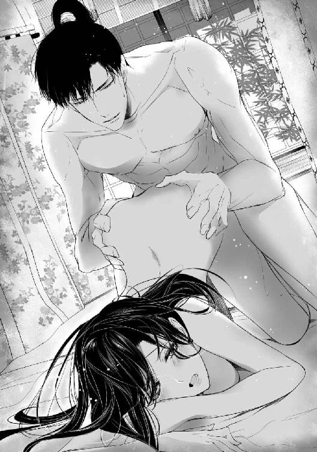
「んん......ッ、きつ......」
正常位で犯されるのとは違う場所をぐりぐりと突かれ、美緒は喘いだ。
最初ゆっくりだった抽挿が次第に切迫し、愛液の掻き混ぜられる水音がじゅぷじゅぷと響く。
「あッ、んッ、んぅ......っ」
結合部からあふれた媚汁がしぶき、汗ばんだ腿をねっとりと伝い落ちた。パンパンと淫靡な音を立てて濡れた肌がぶつかりあう。
「美緒......、すごく悦い」
熱い吐息を洩らし、腰を打ちつけながら崇晃が囁いた。美緒はぶるっと震え、蜜孔を前後する剛直の密な質感に陶然となった。子宮口を突き上げながら抉るように抽挿されると、あまりの心地よさでおかしくなりそうだ。
「ひゃあっ......、あン、そん、な、ひちゃ......らめ......ッ」
唾液が溜まって呂律が怪しくなる。崇晃は美緒の上体を引き寄せ、荒々しく唇をふさいだ。舌を差し込み、じゅるっと音を立てて唾液を吸われる。
「ぁむ......、ん......、んぅ!?」
繋がった場所を指でまさぐられ、蜜まみれの花芽をしごかれる。美緒はびくびくと全身を戦慄かせた。
「はひゅ、ふぁ......ッ、あぁん、それ、やぁあ......ッ」
「すごいな、美緒。きゅうきゅう締めつけてくる」
「んん」
噛みつくように口腔を嬲られて生理的な涙がどっとあふれる。ようやく解放され、美緒はふたたび四つん這いになった。だが、性感が昂りすぎて、身体を支えることができない。美緒は褥に乳房を押しつけ、無我夢中で臀を振った。
「あぁぅ......、も、だめ......だめぇ......！ へんになっちゃう......、あっ、あっ、あ──！」
美緒は褥に頬を押しつけ、怒濤のように襲いかかる快楽に身をゆだねた。
ぐっと腰を引かれ、彼の上に座り込む恰好になる。腹底を突き破られそうなほど深く、彼の怒張を呑み込んで、美緒は涙の膜の張った瞳を見開いた。
「......っく、......ふ......」
美緒の背中で崇晃が呻き、蜜壺に熱い精が注がれる。崇晃の胸板にもたれかかり、美緒は顎を反らしてびくびくと幾度も身体を痙攣させた。
崇晃は、くたりと脱力した美緒の身体を愛しげに撫で、ついばむように幾度も唇や舌を吸った。
「......子ができるといいな」
甘い囁き声に素直に頷き、美緒は自ら彼に深くくちづけた。腹の奥で、青い火が燃えているようだった。
藤波屋敷での生活は穏やかに過ぎていった。戦国時代だということを忘れそうになるくらい、静かで平穏な日々だ。
しかしそれが表面上の穏やかさに過ぎないのだと感じることも折々あった。
信長亡き後、羽柴秀吉と徳川家康は何度もぶつかりあい、争いは膠着状態に陥っている。真田は現在、徳川に臣従しているものの、北条との連繋を強化したい徳川が上州における真田の所領を北条に割譲するよう執拗に求めているため、関係は悪化の一途をたどっているそうだ。
頑として従わない真田昌幸の態度に業を煮やした家康は、ついに昌幸の暗殺を図った。だが、事前に計画が洩れたため、失敗に終わった。それを聞いて美緒と弁丸は胸を撫で下ろした。
その一件以来、昌幸は本格的に藤波の白烏衆を使うことを考え始めたらしい。だが、間の悪いことに白烏衆は美緒の襲撃事件を機に一部が離反したため再編を余儀なくされていた。
各地に散っている忍びを呼び戻したり、新たな任務を与えたりと、藤波一族の当主と白烏衆の頭領を兼ねる崇晃は多忙を極めた。ゆっくり夫婦の語らいをする暇もないくらいだ。
寂しい......と、うっかり珠洲姫に洩らすと、武将の妻たる者、そんなことで文句を言うなと一喝されてしまった。
「......あたしだって、それくらいわかってますよーだ」
蒸し風呂に入って汗を流した後、池に張り出した櫓で涼みながら欄干にもたれて美緒は嘆息した。
夜風に蚊遣り火の煙が薄くたなびいている。ヨモギの葉、カヤの木、杉や松の青葉などを火にくべて燻すものだ。いつのまにか季節は夏に入っていた。美緒がこの時代に飛ばされてきたのは春、ちょうど桜が終わりかけた頃だ。
まだ三か月も経っていないんだ、と思うと不思議な気分だった。最初はこの悪夢から早く覚めますようにと祈っては眠り、目が覚めるとがっかりして落ち込んで泣いたものだが、この頃は元の時代を思い出すことも少なくなった。
自分がいなくなって家族はさぞかし心配してるだろうな......と考えると胸が痛むけれど、そんなときは『こっちで幸せに暮らしてるから心配しないで』と一生懸命祈った。
（幸せ、か......。崇晃様を好きにならなかったら、そんなふうには思えなかっただろうな......）
崇晃が好きだから、彼が美緒を愛してくれるから、ここにいてもいいと思えるようになった。なのに一緒にいられないのは寂しい。わがままと言われても、寂しいものは寂しいのだ！
「よくできた奥さんになるのって大変だわ......」
ふぅ、と美緒は溜息をついた。
（そもそもあたし、良妻タイプじゃないもんね。まだ新婚なんだし......、始終一緒にいたいと思ったって普通でしょ......？）
奥に押し込められているわけではないので、崇晃が屋敷にいれば表に出ていって評定に同席することもある。この時代の状況を把握しようと美緒は懸命に聞き入った。
家臣に渋い顔をされることもあったが、女だからというより、真田家の人間と見做されているがゆえらしい。実際、スパイのような役割を期待されて嫁ぐ姫君もいるようだ。まだ嫁に来て三か月も経たないのでは無理もない。そこは時間をかけて信頼関係を築いていくしかないだろう。
当然ながら、そのような席で崇晃に甘えるわけにはいかない。それに、少なくとも建前としては男女平等の時代から来た美緒には、政治にだってそれなりの関心がある。本当に自分の知っているとおりに歴史が進むのかという興味もあった。
（でも、夜くらい人目を気にせずいちゃいちゃしたいとか......、思ったって別にいいよねっ）
崇晃様、えっち上手だし......と考えて、美緒は赤くなってブンブンかぶりを振った。
（新婚なんだもん、そゆこと考えたっておかしくないわっ......）
美緒は雪洞扇を広げ、熱くなる顔をバタバタと扇いだ。蚊遣り火の匂いに紛れ、ふっと藤の香りが鼻腔をかすめたような気がしてとまどう。
（え......？ 藤の花なんて、とっくに終わってるよね）
気のせい、気のせい。物参りに行ったとき、妙簾寺の裏山で見かけたのが最後だ。
（──あ。でも、そういえばあのとき......何か思い出しそうになったんだった。何だっけ......？）
藤の花の下で優美に舞う少年。あれは崇晃だったのだろうか。
（そんなはずない。だってあたし、崇晃様のそういう姿、見たことないもの......）
思い出したのではなく、きっと想像したのだ。崇晃から澪姫とのなれそめを聞いて、すごく綺麗だったんだろうな......と。
かかれる松に うす花の
ドクン、と心臓が跳ねた。
（あたし......、あの謡を知ってるような気がする......）
色紫の 雲の羽袖を
「......かへす舞姫......」
美緒の口から囁くように細い声が洩れた。無意識のうちに、すっと美緒は立ち上がった。
雪洞扇をかざし、さっと流す。
あるひは花の 鶯の囀りの
声の匂ひも 深みどり
打ちちらし 吹き払ひ
花も飛び行く 胡蝶の夢の
春のみじか夜 明くる横雲に
光影さす 朝日山の──
と、回ったところで美緒は息を止めた。いつからそこにいたのだろう、崇晃が呆然とした顔で美緒を見つめていた。
美緒はたちまち我に返り、かぁっと赤くなった。
「あ......、あの......っ。す、すみません！ 見よう見まねで......」
「──誰の」
こちらも我に返った様子でつかつかと近づいた崇晃が、美緒の手首をぐっと掴んだ。
「誰って、それはもちろん、崇晃様の──」
「俺は、おまえの前で舞ったことなどないぞ」
低声の囁きにどぎまぎして、美緒はひくりと口許を引き攣らせた。
「そ、そうでしたね。ぇっと......、それじゃ誰だったろ......」
「『藤』を謡っていたな」
「え？ そう......？ 覚えて......ないですけど......」
崇晃の顔つきがあまりに真剣なので、何かまずいことでもしでかしたのだろうかと青くなる。だが崇晃に咎める色はなく、食い入るようなまなざしで美緒を凝視していた。
「ご、ごめんなさい。あたし、何か悪いことしました......？」
「────おまえ、澪なのか？」
信じられない、といった口調に、美緒はぽかんとした。
「はぃ......？ あたしは美緒ですけど......？」
なんで今更そんなことを訊くんだろう。わけがわからず当惑する美緒をまじまじと見つめ、崇晃は窺うような声音で呟いた。
「未来から来た、澪なんだな......？」
「はぁ......、未来から来た美緒ですよ......？」
やっと全面的に信じてくれる気になったのかしら。でもなんで今？ それに、どうも会話が噛み合っていないような......？
困惑していると、いきなりものすごい勢いで抱きしめられた。
「ちょっ......、崇晃様!?」
「戻ってきて......くれたんだな......！ 俺のために......！」
「？？？」
混乱しつつ、ぎゅうぎゅう抱きしめられるのもまた嬉しくて、美緒は口許を引き攣らせながら目を白黒させた。
「た、崇晃様。どうしたんですかっ......」
「嬉しいんだ、みおに逢えて」
「そ、そんな、大げさな......。昼間も会ったじゃないですか」
「わかってなかった」
「えー、ひどい！ 目に入ってなかったってこと!?」
ぷっとむくれると、崇晃はぽかんと目を瞠り、次の瞬間少年のような笑顔になった。
「そうじゃない。みおがどんなに俺を好いてくれてるのか、わかってなかったんだ......」
「それもひどいですっ。あたし崇晃様が大好きなのにっ」
美緒は急に照れくさくなって、上目遣いで崇晃を見つめた。
「その......愛してます......よ？」
「みお......っ」
崇晃はますます感極まった様子で美緒を抱きしめた。
（よ、よくわかんないけど......、崇晃様、すごく喜んでるみたい......）
彼が喜んでいるなら自分も嬉しい。美緒は崇晃の背に腕を回し、ぎゅっとしがみついた。
「......崇晃様と、ずっと一緒にいたいです......」
「うん......、俺もだ。もうどこへもやらない。やるものか」
髪を撫でて崇晃が頷く。美緒はますます嬉しくなって彼の胸に頬をすり寄せた。
もつれあうようにして座り込み、くちづけを交わしながら性急に互いの着物を剥いだ。いつもと違ってほとんど前戯なしに身体を繋げたが、美緒の蜜襞はすでにたっぷりと潤っていて、抵抗なく崇晃の熱杭を呑み込んだ。
膝に乗って正面から抱き合い、繋がった腰を大胆に揺らしながら情熱的に舌を絡めた。甘い鼻声を洩らし、美緒は無我夢中で腰を振りたくった。
「ああ、美緒......。すごいな......。すごく悦い」
「あたしも、い、ぃ......。崇晃様......っ。あっ......！ もぅ達っちゃぃそ......なの......っ」
崇晃ははぁはぁ喘ぐ美緒の乳房を掴んで捏ね回した。ぴんと勃った乳首がこすれて、その刺激だけで達してしまいそうだ。
「あッ、あッ、んッ......、ふぁっ、あぁん、はぁッ......！」
たまらずに美緒は昇り詰めてしまった。押し殺した声で呻き、崇晃が美緒の臀をぎゅっと掴んで吐精する。だが、剛直は少しも衰えず、蜜の滴る隘路をいっぱいにふさいでいた。
「......もっと欲しい、美緒......」
「ん......、あたしも......」
美緒は熱い吐息をついて唇を押しつけた。崇晃の舌が荒々しく押し入ってきてねぶり回され、心地よさで睫毛が濡れる。
そのまま櫓で繰り返し交わり、やっと互いに満足してから寝所に戻った。抱き合って睦言を囁きあっているうちに、またもや気分が妖しく昂ってしまい、結局夜更けまで褥の上で濃密に愛を交わしあったのだった。
「......美緒様。美緒様？ んもぅ、美緒様ってば！」
文机に頬杖をつき、昨夜崇晃と致したアレコレを思い出してうっとりぽわぁんとしていた美緒は、連呼する声にハタと我に返った。おでこがぶつかりそうな距離で松風が睨んでいる。
「わっ......、な、何!?」
「もぅっ、さっきからデレデレしすぎですわよ」
姿勢を戻した松風が溜息をつく。美緒は赤くなって身を縮めた。
「ごめんなさい......」
「美緒様が見たいと仰っていた、領内の石高や扶持明細の帳簿などを持って参りましたのに」
「見るわ！ ちゃんと見るからっ」
美緒は頬を両手でパンパン叩いて気合を入れ直すと、積まれた帳簿類に手を伸ばした。だが、松風が横からさっと取り上げてしまう。
「やめておきましょう。どのみち頭に入りそうにありませんからね」
「そっ、そんなことないわよ！」
「あら......、昨夜はずいぶん遅くまでお励みになっていらしたのでは？」
冷やかすように言われて美緒は真っ赤になった。
「き、聞こえちゃってた......？」
「耳が良いものですから」
松風はけろりとした顔で、邪気なくにっこりと微笑んだ。ますます美緒は小さくなった。責められているわけでなくても、やっぱり恥ずかしい。
（うう......、今度からあんまり声出さないように気をつけよう......）
「夫婦円満で結構ではありませんか。この調子なら、すぐにお子も出来そうですね」
美緒は思わず自分の腹を見下ろした。
（......できちゃってたり、するのかな......!?）
まさか齢十八で母親になる可能性が出てくるなんて、まったく考えてもみなかった。いや、そもそも結婚自体が想定外だ。
（崇晃様の子供なら、可愛いだろうな～）
ふと想像して、美緒はにへらと笑み崩れた。
うん、絶対可愛い。男でも女でも、間違いなく可愛い。崇晃も、きっと子供を可愛がってくれるだろう。弁丸の武芸の鍛練に親身に付き合ったり、甘えかかる珠洲姫を優しくあしらう様子を思い出して美緒はますますにやついた。
（崇晃様、絶対いいお父さんになるよね！）
美緒はぐっと拳を握った。
「よーし、あたしもいいお母さんになるぞ！」
「その前にいい奥方になってください」
冷静に松風が突っ込む。
「はっ、そうだった！」
「家政の勉強はまた後日にして、今日は写経をいたしましょう」
「写経!? なんで!?」
「ゆるみきったお顔を引き締めるためです！ そのようなゆるゆる顔では家臣に示しがつきません。さぁ、ご一緒にありがたい般若心経を写しましょう」
有無を言わさず筆を持たされ、美緒は巻物と首っ引きでお経を写したのだった。
それからしばらくは美緒が夢想したような『新婚ラブラブ』状態が続いた。相変わらず忙しそうだが、崇晃は時間を見つけては美緒の下に顔を出してくれる。
留守にするときは出先から手紙をくれた。相変わらずくずし字は読むのが大変だが、侍女に読み上げてもらうのもいやなのでがんばって解読した。
候文で書かれていても、内容はけっこう赤裸々だったりして、読みながら美緒は顔を赤らめた。
（もうっ、崇晃様ったら、どんな顔で書いてるんだろ）
こっちが恥ずかしいじゃないの！ と眉を吊り上げながらも熱烈な恋文をもらうのはやっぱり嬉しくて、暗記するくらい何度も読み返した。
少しだけ気になるのは、やたらと崇晃が『戻ってきてくれて嬉しい』と繰り返していることだ。まるで美緒が以前にいなくなったことでもあるような言い方をする。最初は『時を遡ってきた』ことを言っているのかと思ったが、どうもそれだけではないようだ。
（......ま、いっか）
とにかく崇晃が美緒のことをものすごく好きでいてくれるのは疑いない。文面だけでなく行間からも、ひしひしと愛情が伝わってくる。
（あたしってば果報者だわ～......）
手紙を胸に押し当ててしばしうっとりし、慌てて気を引き締めた。にやけているところを侍女に見つかったら、また呆れられてしまう。
松風がそろえてくれた家政関係の書類を見ながら、内容以前に文字を読み取るのが困難すぎてのたうち回る。
手習いの反故紙に『解読』した文章を書きつけていると、きしきしと縁側がかすかに軋む音がした。振り向くと、松風と村雨が並んで現れた。忍びらしくふだん彼女たちはほとんど足音を立てないのだが、美緒があまりにぎょっとするので、来たことを知らせるためにあえてそうするようになった。ノックのようなものか。
「失礼いたします。美緒様、ご実家より文が届きました」
美しい組紐で括った蒔絵の文箱を松風が捧げ持ち、村雨はもう少し大きな筥を抱えている。
「実家って......、山手様から？」
真田昌幸の正室・山手殿は、美緒と弁丸に宛てて、何度か優しい気遣いにあふれる消息（手紙）を送ってくれた。
「いえ、淵瀬範時様からですわ」
「え。お兄様？」
範時から手紙をもらうのは初めてだ。当惑しながら文箱を開け、四苦八苦しながら手紙を読んで美緒は顔をしかめた。その様子に松風が首を傾げる。
「いかがなさいました？ 範時様に何か？」
「ううん、そうじゃなくて......。崇晃様のご機嫌を取ってほしいみたいなの」
松風は目を瞠り、小さく噴き出した。
「ああ......、そういうことですか」
忍び笑いながら隣に控えている村雨を横目で眺める。村雨はいつものように無表情だが、どことなく憮然としているようにも見えた。
「？ そういうことって、どういうこと？」
「先頃、崇晃様が淵瀬家を訪問されたでしょう？」
「──あ。わたしの......正体、を探るためね......？」
美緒の態度に不審を覚えた崇晃は自ら淵瀬の屋敷へ乗り込み、範時を脅して真実を聞き出した。澪姫が既に亡くなっており、美緒はその身代わりだということを。
松風は頷いた。
「そのとき脅されたのが、よほど骨身に沁みたのでしょうね」
「そ、そんなに怖い目に遇わされたの？ 崇晃様、何したの!?」
「尋問なさったのは殿ですが、範時様を『少々痛い目に遇わせた』のはわたしです......」
淡々と村雨が言い出した。
「しょ、少々、って......？」
「二、三発急所に蹴りを入れて縛り上げ、素直に吐かねば爪の間に針を刺すと脅しただけ......」
しらっと村雨は答えた。
「脅しただけよねっ!?」
「......小指の爪には、ちょっと入れましたけど」
爪の内側は痛覚が集中している。想像しただけでぞわぞわして、身を捩りそうになった。
「ちょっと突ついただけで降参したので、すぐやめました......」
ほーっと美緒は胸を撫で下ろした。元々赤の他人だし、特に好意を持っているわけではないけれど、知っている人間が拷問などされてはとても平静でいられない。
「でも......、崇晃様は真田に抗議しなかったわ。昌幸様も、事実はご存じのようだけど黙っていてくださるのよね？」
松風は含みのある顔つきで頷いた。
「それゆえ余計に恐ろしくてならないのでしょう。殿が黙っていてくれたおかげで淵瀬の命運は首の皮一枚で繋がった。藤波が正式に真田様に抗議すれば範時様は即刻打ち首、淵瀬は終わりです」
「あ。もしかしてお兄様、真田様にバレてることにも、うすうす勘づいてる......？」
「まぁ、次の戦では淵瀬隊を最前線に配置してやろうといきなり言われれば、おそらくは......」
ねぇ？ と忍びの姉妹は頷きあった。
「......それで、いざというときは崇晃様に加勢してもらえるよう機嫌を取っといてほしい、と」
「加えて、真田様に取りなしてほしいということでしょうね」
（うーん......、何だか情けないけど、一応『実家』だしなぁ......）
美緒はふぅと溜息をついた。
「──で、そっちの筥は何？」
「贈り物のようですよ。美緒様のご機嫌取りでしょう」
開けてみると、中には小さな壺入りの砂糖菓子や羊羹などが詰められていた。
「お菓子だわ！」
美緒は歓声を上げた。現代にいた頃はさほど好きでもなかった金平糖に涙が出るほど感動する。侍女たちにも分け与え、残りは崇晃が戻ってから一緒に食べることにした。
そのうち下女が何やら訊きに来たので松風たちを下がらせ、美緒はひとり物思いにふけった。
（崇晃様、いつ帰ってくるのかな......）
現在、彼は野武士の一団が藤波領に侵入し、略奪を行っていることに対処するため不在なのである。合戦に行くわけではないから心配するなと言われても、場合によっては戦闘になるだろうし、やはり心配だ。
当初の予定ではとっくに戻っているはずなのだが、同じような被害に遭っている近隣の土豪に加勢を頼まれたとかで、帰還はしばらく遅れるとのことだった。
寂しいけれど、そのおかげで熱々な恋文をもらえたわけでもあり──。
（金平糖や羊羹は日持ちするから大丈夫よね......、って、お菓子の心配してる場合じゃないか。崇晃様に何事もなければいいけど）
ひとりでいると、どうしてもくよくよ考え込んでしまう。珠洲姫にこぼせば、しっかりしなさいよと叱り飛ばしてくれるだろうに、こんなときに限って姿を現さない。
（たまにはこっちから遊びに行ってみようかな）
お菓子のおすそ分けという口実もある。姑のご機嫌伺いも兼ねて、ちょっと行って来よう。
崇晃と一緒に食べるぶんだけ残し、竹皮で包んだ羊羹をさらに袱紗で見目よく包んだ。
「──松風？ 村雨？ いないの......？」
いつもふたりのうちどちらかは近くに控えているのだが......。屋敷から出るわけでもなし、問題はないだろうと、美緒はひとりで行くことにした。
愁雲院が暮らす座敷は母屋と廊下で繋がってはいるものの、独立した離れになっている。静かに暮らしたいという愁雲院の希望を汲んで造られた、築山や竹林が配置された中にひっそりと佇む風雅な建物だ。
愁雲院付きの侍女に出会うこともなく、座敷の前まで来てしまった。小さいながらも風情のある庭に面した座敷は、昼間にもかかわらず障子がぴたりと閉められている。
（お昼寝してるのかな......？）
愁雲院はしょっちゅう頭痛を訴えるのだと珠洲姫が言っていた。現代で言う偏頭痛持ちなのだろうか。頭が痛くて横になっているのなら煩わしたくはない。
珠洲姫もいないようだ。きっと表のほうへ出ていって、馬に乗るか薙刀を振り回すかしているのだろう。
（あたしもそっちへ行ってみようっと）
しかし、せっかく持ってきたのだから羊羹は置いていきたい。この時代、甘味は貴重品だし、愁雲院も嫌いではないはず。
（誰かいないのかな......）
侍女を呼ぼうにも、声を上げるのが憚られた。ちょっと覗いてみようか、と座敷に近づくと、かすかな溜息のようなものが聞こえてきた。耳を澄ますと、さらさらと衣擦れの音がする。
（あ、起きたのかな......？）
少し待っていようか、と声をかけるタイミングを見計らっていると、座敷の中から気だるげな声が聞こえてきた。
「──やっと手筈が整いましたか。ずいぶん待ちましたよ」
愁雲院の声だが、独り言にしてはおかしな気がする。側に侍女でも控えているのだろうか......。首を傾げた美緒は、続く声音にハッと息を呑んだ。それはまぎれもなく男の声だったのだ。
「いや、申し訳ない。せっかく烏どもが仲違いしてくれたのなら、こちらに引き込まない手はないと思いましてね」
跳ね上がった鼓動を抑えるように、美緒は手にした袱紗包みを胸に押し当てた。
（だ、誰......？ 奥の建物って当主以外の男の人は入っちゃいけないんじゃなかった......!?）
ましてや当主の崇晃は留守なのだ。たとえ親族であっても勝手に出入りしてはならないはず。閉まった障子の向こうが、急に怪しい空間に思えてくる。
ここにいたらまずい......！ 美緒は急いで引き返そうとしたが、向きを変えた途端に足元の板がキィと小さく軋んだ。あっと思った瞬間、障子を突き破って刀を突きつけられていた。
よろめいて尻餅をつくと、障子が開いて刀を握った男が現れた。ひくりと喉を震わせる美緒を渋い顔で見下ろしたのは崇晃の従兄弟違い、藤波崇政だった。
「これは奥方──。このようなところで何をなさっておいでかな」
怯むどころか本性を剥きだした猛々しい顔で、崇政は刀の切っ先を美緒の首元に近づけた。どういうわけか崇政は袴を着けず、小袖の着流し姿だ。
「ぁ......、わた、し......、大方様の......ご機嫌、伺いに......っ」
「──あら、まぁ......。間の悪いときに来てくれたものねぇ」
楚々とした足取りで出てきた愁雲院が溜息をつく。その唇の動きがやけになまめかしく思えてぞわっとした。袈裟に頭巾の尼姿とは全然そぐわない。潤んだ瞳や赤らんで腫れぼったい唇から立ちのぼる濡れた色香は、恍惚の余韻としか思えなかった。
「あ、あなたたち、まさか......!?」
愁雲院は目を細め、くすりと笑みを洩らした。
「......仕方がないわ。いずれあなたには死んでもらうつもりだったけど......、予定を少し早めるしかないみたいね」
「な、何言ってるんですかっ......!?」
「立て」
崇政が横柄に命じる。刀を突きつけられては抗えず、美緒はよろよろと立ち上がった。そのまま奥座敷へ連れて行かれ、背中からどんと突かれて美緒は畳に突っ伏した。急いで起き直って崇政を睨む。
「どういうつもり!? 崇晃様が留守なのに勝手に入ってくるなんて！」
「ふん......、本来ならばわしが当主だ。崇晃ごとき下賤の者をいつまでものさばらせておけるか」
「どういう意味よっ!? ──あっ、まさか崇晃様に何かするつもりじゃないでしょうね!?」
「なに、消えてもらうだけだ。本当なら、あ奴はとっくに消えているはずなのだからな......。隠されてさえいなければ」
崇政は口惜しげに口端をゆがめた。意味がわからず愁雲院に目を遣ると、彼女もまた冷ややかな美貌に不快そうな表情を浮かべている。
（あっ......、そうか！ 崇晃様はお父さんが自分のことを忘れていたと言ってたけど、そうじゃなかったんだわ）
愁雲院の産んだ子は珠洲姫ひとり。先代・崇継の側室が産んだ子は全員幼い頃に亡くなっている。
「......あなたが殺したんですね」
愁雲院は答えず、口の端にぞっとするような笑みを浮かべた。
（やっぱり、そうなんだ......！）
愁雲院は珠洲姫に藤波家を継がせるため、跡取りとなりうる男子を全員抹殺した。先代の崇継はそれに気付いていたか、少なくとも疑ってはいたのだろう。崇晃もその母親も、あえて捨て置いたのだ。おそらくは......最後の『保険』として。
美緒を見返した愁雲院の瞳に、ゆらりと妖火めいた光が揺れる。
「......あの男だけはうまくいかなかった。元が白烏だけあって用心深いし、身体を慣らしてあるから毒も効きにくくてね......。とってもしぶとかったわ」
くく、と愁雲院が含み嗤う。
（......！ 崇晃様、知ってた......？）
義母に狙われていることを。いや、父親もきっと知っていたのだ。白烏衆のなかに置いたのは、単に隠すだけでなく、自分の身を守れる力をつけさせるためだったに違いない。跡取りとして引き取られた後も崇晃が忍びとしての鍛練を怠らなかったのは、自分を律する以上に、どこでどう襲われるかわからなかったからなのだ。
（崇晃様......！）
彼の立場が複雑なのはわかっているつもりだった。だが、こうまで理不尽に身内から狙われる日々だなんて思わなかった。
『澪姫は俺にとっていちばん綺麗な思い出だった。純粋に楽しくて、優しくて──、夢のような』
そう呟いた崇晃。その気持ちが痛いほど胸に迫る。涙が出そうになって、くっと唇を噛むと、崇政は刀の背で美緒の顎を掬い取り、残忍な笑みを浮かべた。
「機会を窺っているうちに真田との縁組が決まってしまった。このままでは藤波は完全に烏に乗っ取られる。もう手を拱いてはいられない」
鋭い切っ先が皮膚に食い込み、美緒は真っ青になった。
（こ、ろされる......!?）
「──お待ちなさい。わたくしの座敷を血で汚されてはかないません。それに、遺体に刀傷など残っていては怪しまれるのではなくて？ 真田に敵視される事態は避けたほうがいいわ」
愁雲院の言葉に、崇政はしぶしぶ刀を引いた。
「ふん......、以前の病がぶり返して死んだように見せかけるはずだったのにな」
「白烏の侍女に毒味をされたせいでうまくいかなかったのよ。仕方ないでしょう」
（あ、あたし狙われてたの......!? でも、あたしが身代わりだってこと、この人たち知らないみたい......）
崇晃は、葛葉の雇い主は崇政だと考えているようだったが、違うのだろうか？
美緒が混乱していると、侍女が現れて深々と額衝いた。
「申し上げます。藤波崇晃様、まもなくご帰還になるとの先触れが到着いたしました」
「何!?」
崇政は気色ばんだ。美緒の顔にぱっと喜色が走る。
「帰還は明後日以降になるよう引き止めておいたはずだ！」
「それが、思いのほか早く野武士どもが殲滅されてしまい......」
「くっ、まだ兵の配置が済んでおらぬ。どうにかして奴を屋敷から追い出さねば」
「──崇政殿。先ほどお話しになった......あの者を使ってはどうでしょう。あの者ならば、崇晃に引けを取らぬのでは？」
愁雲院の言葉に崇政は大きく頷いた。
「そうだな！ うまくすれば崇晃を葬ってくれるやもしれぬ。そうすれば澪姫も後を追って自害したということで始末もたやすい」
「なっ......、何言ってんの!?」
冗談じゃないわ！ と美緒は跳ね起き、座敷から飛び出そうとした。だが、平伏していた侍女が素早く立ちふさがる。その顔を初めて正面から見て、美緒は絶句した。
「え......!? な、んで......ッ、──!!」
腹に衝撃が走り、息が詰まる。当て身を食らったのだと気付いたときには、床がもう目の前にあった。傍らに膝をついた崇政が、美緒の顎を取って顔を覗き込む。
「ふむ......、ただ殺すのも惜しいな。崇晃は大層この女子が気に入っているらしい。どれほどのものか、味見してみたいものだ」
「またそのような......」
不快そうに愁雲院が吐き捨てる。
「ハハ、妬くでない。わしが藤波の当主となった暁には、珠洲姫をわしの息子に妻わせていずれは藤波家を継がせてやる。──すぐに兵を連れて戻るゆえ、いつでも出られるよう支度しておかれるがよい」
崇政は笑って立ち上がり、控えていた侍女に頷いた。
「逃げられぬよう、よっく縛り上げておけ」
崇政の指示に頷いた人物が、屈み込んで懐から縄を取り出す。その口許が、にぃっと嘲るようにゆがんだ。
（うそ......。ど......して──が......ここ......に......？）
混乱のなか、美緒の意識は闇に呑み込まれた。
野武士どもの討伐を終えて屋敷に戻ってきた崇晃は、着替えを済ませるとさっそく美緒の座敷を訪れた。
「帰ったぞ、美緒。待たせて悪かったな」
無人の座敷を見回して眉をひそめる。
「──美緒？ いないのか。桃をもらったんだ。甘い菓子が好きだろう？」
帰還はすでに伝わっているはずだ。喜び勇んで飛び出してくるとばかり思ったのに......と少々がっかりする。
文机に桃を置き、手当たり次第に文字が書き散らされた紙を取り上げて眺めた。相変わらずちまちました奇妙な字体だ。
美緒が生まれ育った時代には、もはや日常生活で筆は使わないという。『えんぴつ』とか『ぼおるぺん』とかいうものを使うのだと、絵に描いて熱心に説明してくれた。こうやって持つのよ、と箸でも握るような手つきで扇を持ってみせて。
信じがたいが、まるっきりでたらめとも思えず、話半分に聞いた。熱心に説明する美緒の様子が可愛くて、そちらのほうに気を取られていた。
だが、今では美緒が遠い未来から来たのだという確信がある。
（美緒は澪だ）
亡くなった澪姫が未来に転生した姿が美緒なのだ。そして遥かな時を越え、自分の下へ戻ってきてくれた。『藤』の謡と舞を知っていたのがその証──。
澪姫とのなれそめを話して聞かせたとき、美緒は『藤』という曲をまるで知らない様子だった。その後、話をしていても、美緒に猿楽（未来では『能楽』というのだそうだが）の素養がありそうには思えない。
だが、あの夜、美緒はおぼつかない足取りながら『藤』を舞い、謡っていた。もっとも、こちらに気付いたとたんに忘れてしまい、自覚もまったくないようだが......。
澪姫に淡い恋心を抱き続けていたことは事実だ。澪姫を娶ることになって喜んだのも。だが、本当に好きになったのは、実際に嫁いできた『美緒』だ。
美緒が澪姫でもあるのだと理解すると、愛しさがますますつのった。澪姫もまた崇晃を想っていてくれたのだ。手紙も彼女自身が書いていた。
最初の出会いはきっかけにすぎない。始まったのは『美緒』と出会ってからだ。たぶんそれは美緒も同じ。『澪姫』にとって藤の花の下で出会った少年は、やはり綺麗な思い出に過ぎなかっただろうから......。
それでも、毒を盛られて死ぬその瞬間にさえ、澪姫は崇晃のことを想ってくれた。四百年以上先の時代に生まれ変わったというのに、自分に逢うためふたたび時を超えて戻ってきてくれたのだ。それを思うと彼女が可愛くて、愛しくて胸が苦しいほどだ。
それほどまでに自分を愛してくれる女を大事にせずにいられようか。たとえ戦国の世であろうとも、絶対に美緒を幸せにする。
書き散らされた文字の中に、『崇晃さま好き好き好き』と躍り跳ねるような字で書かれているのを見て、崇晃は苦笑した。
文字の周りには桃を逆さまにしたような奇妙な印がたくさん書かれている。これは何だと以前訊いたら、美緒は顔を赤くして、『大好きっていう印です......』ともじもじ答えた。
思い出したとたん今すぐ抱きしめたくてたまらなくなった。身体を繋げながら口吸いをしてやると、とろんと潤んだ瞳で縋るように見つめてくる。その表情を思い出しただけで欲望が頭をもたげそうになる。
縁側に人の気配を感じ、崇晃は振り向いた。だがそれは美緒ではなく、侍女の松風だった。こわばった顔を一瞥するなり脳裏から甘い情緒が吹き飛ぶ。崇晃は鋭利な双眸で侍女を質した。
「何があった？」
「美緒様がどこにもいらっしゃいません。引き続き村雨が捜しております」
「──いつから」
「午過ぎに、淵瀬範時殿より文とお届けものがございまして......」
「文？ これか」
崇晃は文箱を開け、書状を広げてざっと眺めた。
「......ふん。不安が高じて美緒に泣きついたか」
「珍しい南蛮菓子など送って寄越されました。その後、わたくしどもが席を外している間にお姿が見えなくなったようです」
申し訳ございません、と松風が平伏する。
「しかし......、この屋敷内で襲われるとも思えぬな」
「はい。美緒様のお部屋の周囲にはいつも警護がついております。しかしそのような気配は誰も感じなかったと」
崇晃は低く唸った。不安がらせたくなかったので、美緒に気付かれぬようできるだけ距離を置くよう命じたのだが......。またもや気遣いが裏目に出てしまったか。
そこへ珠洲姫が小走りにやってきた。
「お兄様、お帰りなさいませ！ ご無事で何よりです。──あの、これ、お義姉様のものじゃありません？」
差し出されたのは見覚えのある袱紗だった。
「──どこにあった？」
「搦手門の近くです。わたし、気晴らしに馬に乗って、そこらを一回りして帰って来たら落ちていたの。お義姉様、外に出られたのかしら......」
開いてみると出てきたのは竹皮包みで、中には羊羹がくるまれていた。珠洲姫は眉を吊り上げて憤慨した。
「まぁっ、貴重な砂糖羊羹を落っことすなんて、お義姉様ったら粗忽にもほどがあるわ！」
松風が遠慮がちに口を挟む。
「それ、淵瀬様からの贈り物ですわ。どなたかにおすそ分けするおつもりだったのでは......？」
視線が珠洲姫に集中する。
「え？ わたし？」
「......その途中で拉致されたということか」
苦い顔で崇晃が呟くのを訊いて珠洲姫は目を丸くした。
「拉致っ!?」
「珠洲。このことは黙っていろ。誰にも言うな。母上にもだ」
「わ、わかりました......」
珠洲姫は青くなって頷いた。部屋へ戻っていろと厳命されて珠洲姫がしぶしぶ引き下がると、入れ代わりに村雨が珍しく血相を変えて走ってきた。
「殿、表に矢文が！」
差し出された文を一瞥し、崇晃はいっそう表情を険しくした。
「──ちょっと出てくる」
「殿!? 誰からですか!?」
悲鳴じみた問いには答えず、崇晃は歩き出した。
「松風は屋敷内を引き続き調べてくれ。このように目立つもの、落としたことに気付かぬわけがない。外に連れ出したように見せかけて、実際は屋敷内にいるのかもしれないからな」
「わかりました！」
「村雨、馬の用意を。俺の翠嵐と、もう一頭」
「ただちに」
崇晃は一旦刀架に掛けた刀と脇差しを帯に差し、大股で主殿へ引き返した。
しばらく後、藤波屋敷の搦手門からひそかに抜け出したふたつの騎影があった。それはやがて二手に別れ、一方は徒侍に守られて街道を往き、もう一方は供をふたりだけ従えて山のほうへ向かった。
里を流れる川を遡ってゆくと、次第にごつごつした岩肌が清流に洗われる渓谷となり、切りたった断崖が屏風のように連なる谷間に出た。
岩を刻んで造られた階の前で馬を降り、崇晃は供の者に命じた。
「ここで待て」
「しかし、殿──」
難色を示す若者たちは、どちらも白烏衆の一員だ。藤波郷の生まれで、崇晃に対しても年少の頃から変わらず忠実に仕えている。
「邪魔が入らぬよう見張っていろ」
眼光鋭く命じ、崇晃は階をひとりで登っていった。
ここは元々修験道の修行場があった場所だ。今では白烏衆の、主に年少者の鍛練の場として使われている。崇晃も子供の頃はここで学んだ。
そそり立つ岩壁に半ば埋め込まれたような古いお堂を、崇晃は黙然と眺めた。ざわざわと梢が鳴り、遠く渓流の音が響く。日はだいぶ傾いて、あちこちに濃い翳が生まれていた。
ぐるりと周囲を見回した崇晃は、お堂に目を戻すと無言で眉を上げた。いつのまにか余十郎が腕組みをして格子戸の前に佇んでいた。
余十郎は口許をゆがめてニヤリとした。
「よぉ、夜叉王丸」
「美緒を返せ。そうすれば、もう一度だけ見逃してやる」
余十郎の瞳に暗鬱な光が宿る。
「......また逃げんのかよ。向き合う価値すら俺にはねぇってか」
「余十郎。俺を憎むのはいい。だが美緒を巻き込むな。美緒には何の関わりもないことだ」
「関わりないだと......!? あの女と関わってから、すっかりおかしくなっちまったじゃねぇか。真田が押しつける縁談なんぞ受ける気はないって言ってたくせに、相手があの女と知った途端、態度を変えやがって......！ どうかしてるぜ」
「......かもな」
崇晃がかすかに苦笑すると、余十郎は激昂に眉を逆立てた。
「ふざけんなっ。真田はぬけぬけと偽者を押しつけといて、せせら笑ってんだぞ!? いざとなればさっさと切り捨て、藤波を滅ぼす気でいる。おまえが後生大事に守ってる藤波一族が滅んじまってもいいってのかよ!?」
「使い道があるうちは滅ぼさないさ。少なくとも、藤波が真田に協力している限りは......。真田は確かに偽者を送り込んできた。しかし藤波がそれをわかった上で受け入れたことは、向こうも承知してるんだ。真田の態度次第で、いつだって藤波は離反する用意がある。そう通告したようなものだ。この同盟の主導権を握ってるのはこちら側なんだよ。──わかったらさっさと美緒を返せ。偽者だろうが何だろうが、美緒はこの同盟の要なんだ」
「ふん......、それだけじゃねぇんだろ」
余十郎の瞳にギラリと剣呑な光が宿る。
「同盟とか婚姻とか、本当はそんなの関係ねぇんだ。おまえはただ、あの女に惚れてるだけさ。だからそんなに必死になってる。......そうなんだろうがっ」
「──余十郎。おまえ、誰かを好きになったことはないのか？」
いきなり問われ、余十郎はたじろいだ。
「ねぇよ」
ぶっきらぼうな答えに崇晃は小さく笑った。
「それじゃ、よくわからないかもしれないな......。確かに俺は美緒に惚れてるよ。俺にとっては今いる美緒が『本物』なんだ。俺は美緒を大切にしたいし、真田との良好な関係も維持したい。それによって藤波一族をまとめることができれば、白烏衆の処遇だって──」
「っるせぇっ、戯れ言ぬかすな！ そんな都合よく何もかも手に入れられるわけねぇだろうがっ。てめぇの言ってることはガキのたわごとだ！」
余十郎は刀を引き抜き、まっすぐに崇晃に突きつけた。
「がっかりだぜ、夜叉王丸。性根は甘っちょろいガキのまま、四方八方顔色窺ってばかりのつまんねぇ人間になり下がっちまったな......！」
「......俺は藤波崇晃だ」
「そう呼んでほしかったら俺を倒せよ。ありがたく見逃されてやる気なんぞねぇんだからな」
くくっ、と余十郎は笑った。
「勝負しようぜ、夜叉王丸。もう十年もお預けくらってるんだ。いいかげん腹減って死にそうなんだよ......」
崇晃は軽く吐息をつき、腰に差した打刀をすらりと引き抜いた。
「もう一度言う。美緒を返して、この地を去れ」
「いやだね。俺を殺すか、さもなきゃ負けを認めて白烏衆の頭領の座を俺に譲りな。そうしたら、てめえに仕えてやってもいいんだぜ？ 夜叉王丸サマ」
ぴくりと崇晃のこめかみが引き攣る。
「......では、殺すしかないな」
「そういうことだ！ 俺もおまえを殺して白烏衆をいただくことにするぜ」
歓喜の咆哮を上げ、余十郎が打ちかかる。絡んだ鍔を軋ませながら、余十郎は凄味を含んだ笑声を上げた。
「懐かしいぜ......。昔は毎日のようにふたりして鍛練に励んだもんだよな」
「......ッ、何故そこまで勝ちに拘る!? 忍びの本分は生き延びて使命を果たすこと。そのために強くなることは必須でも、ひとつひとつの勝ち負けにこだわる意味などないはずだっ」
余十郎の瞳に憤怒が閃いた。凄まじい速度で刀を振るいながら余十郎は怒鳴った。
「てめぇに勝たなきゃ強くなった気がしねぇんだよッ」
「勝ってた、だろうがッ......！」
「同じだけ負けてちゃ、勝ったとは言えねぇ！ 俺はてめぇを完膚無きまでに叩きのめして、俺のほうが断然強ぇってことを認めさせなきゃ気が収まらねぇんだ！」
ギリッと崇晃は歯噛みして、渾身の力で余十郎を押し戻した。
「......だからおまえと闘るわけにはいかなかったんだ！ この、ど阿呆がっ」
「んだとォ!?」
「結果がどうなろうと、俺が勝負に応じた時点でおまえの命はなかったってことだ......。不服従の咎で捕らえられ、処刑された。見せしめとして、できうるかぎり残虐なやり方でな」
余十郎は動きを止め、呆然と崇晃を見返した。
「......何だよ、それ......」
「上役に逆らった罰だ。下忍に求められるのは指示に従って期待どおりの成果を得ること、ただそれだけ......。逆らうことなど許されない」
「俺は別に逆らう気なんか──」
「そうなるんだっ」
余十郎の抗弁を遮って崇晃は怒鳴った。怯む余十郎を睨み、崇晃は声の調子を落とした。
「......親父殿に訊いたよ。俺が勝てば咎めは受けないのかと......。だが、だめだと言われた。勝とうが負けようが、俺が勝負に応じた時点でおまえの死は決定する」
「......っ、俺はただ、おまえより強くなりたかっただけだ！」
「とっくになってるだろうさ。上役に求められるのは『強さ』じゃない。統率力だ。重要なのは、強く有能な部下をどれだけ従え、いかにまとめられるか。そういう才覚を実際に持っている以上に、周囲にもそれが『ある』と思われなければならない。──親父殿は、おまえが幼なじみの気安さで、いつまでも無邪気に挑んでくるのを快く思わなかった。俺が下忍に対して必要以上に肩入れすることもな。場合によっては切り捨て、見捨てざるをえない相手に情を抱きすぎるのは厄介だ」
「それじゃ先代は......、俺を殺すつもりだった、のか......？」
崇晃は答えない。だがそれは肯定と同じだ。余十郎は、くしゃりと顔をゆがめた。
「──そうか。そうだよな。俺が絡むたび、おまえの器量が疑われてちゃあな。ふん......、ガキは俺のほうか」
クッ、と低い笑声を洩らした余十郎の瞳に、ふたたび鬼火めいた光がゆらめく。
「だけど俺、やっぱわかんねーわ。なんでおまえがそこまであの女に拘るのか......。藤波一族を守るためとか、そんなの本当は建前なんだろ？ おまえはただあの女を取り戻したい一心で、今まで頑なに守ってきた禁忌すら平気で破った。たかが何か月か一緒に暮らしただけの女のために、ガキの頃からずっとおまえのために働いてきた俺を平気で切り捨てたんだ。......それってよ、どう考えてもおかしくねぇか......!?」
一瞬で距離を詰めた余十郎が打ちかかる。渾身の力で跳ね返し、崇晃は怒鳴った。
「誰が平気だと......!?」
「あの女はとんでもねぇ害毒だ！ 絶対おまえを駄目にする──いや、すでにそうなっちまってるなァ！」
「っるさい！ 美緒は昔から俺と縁があるんだっ」
「昔っていつだよ!? あんな女、俺は知らねぇぞ!?」
余十郎の顔が子供っぽくゆがんだ。
「勧進興行で出会ったんだ。それからずっと気になってた......。好きな女を嫁にできるなんて、ほとんどありえないんだぞ!? 少しはわかれよ！」
「知らねぇ女のことなんぞわかってやれっか！ おまえ、そんなの一言も......、──ッ！ わざと黙ってたな!?」
崇晃の顔を、ばつの悪そうな表情がよぎる。余十郎はギリッと歯噛みして、かすれ声で囁いた。
「おまえさぁ......、結局俺を馬鹿にしてたわけ？」
「!? 違う──」
斬、と刀身が唸る。
飛びすさった崇晃は肩衣ごと小袖の前が切り裂かれているのを見下ろして、刀を構え直した。胸部に激痛が走り、血が噴き出す。
（──ちっ、避け損ねた）
余十郎は不気味な薄笑いを浮かべて顎を反らした。
「しょせん俺みてーな脇百姓の小伜に、大事は話せねぇってか......」
「違う！」
「危うく勘違いするとこだったぜ。勝負をはぐらかし続けたのは、別に俺を守ろうとしたわけじゃねぇ。いつまでも下っ端ふぜいと遊んでやるわけにはいかなかったってだけだよなぁ」
だんっと地を蹴って飛び出した余十郎が眼前に迫る。間一髪躱して飛び退いた崇晃を、余十郎は休む暇も与えず追い詰めた。
「あったま来る......！ 使い捨てるつもりなら最初から兄弟のふりなんかするんじゃねぇっ!!」
「違うと言ってるだろうがっ」
「ふん......、どうしたよ。俺たちを顎で使うだけの上忍なら、その程度の腕でも務まるか」
「くっ！」
「あの女を寺で襲ったとき......、けっこうやるもんだと思ったのは勘違いだったみてぇだな。それとも間合いの取れる槍じゃないと勝てねぇってか」
嘲笑する余十郎を睨む崇晃の瞳に憤怒が燃え上がった。
「......どうしておまえは......ッ」
「ああ、つまんねぇなぁ。女に入れ込んで腑抜けちまったおまえになんぞ、勝ったところで嬉しくも何ともねぇわ。──しゃあねぇ、いまわの際に教えるつもりだったが、そろそろ勝負も着きそうだし、本当のことを教えてやるとするか」
余十郎は犬歯を剥き出し、獰猛な笑みを浮かべた。
「あの女......、とっくに殺っちまったよ」
「────!!」
みお。
崇晃の形相が変わる。瞳からいっさいの迷いが消え、あらわになった殺気で余十郎の肌がそそけ立った。ギラギラと目を輝かせ、余十郎は哄笑した。
「いいぜ！ こうでなきゃ、勝負とは言えねぇ......！」
激昂して力任せに打ちかかる崇晃の刃を斬り払い、余十郎は舌打ちした。
「おいおい、力押しで何とかなると──」
突然、腹に思いも寄らぬ衝撃が走る。余十郎の攻撃を左手だけで封じながら、崇晃は低く呟いた。
「──思うわけないだろう」
崇晃の右手はいつのまにか脇差を引き抜き、余十郎の腹部を貫き通していた。
「がは......ッ」
余十郎はがくんと膝をつき、刀を地面に突き刺した。迫り上がった血がごぼりと口からあふれる。刀にすがって視線を上げると、両手に打刀と脇差を握った崇晃が冷然と見下ろしていた。
「......は。やっぱ、油断も隙も、ありゃしねぇ......。変わってねぇ、のな。嬉しい......ぜ......」
崇晃の瞳に動揺が浮かぶ。
「嘘なんだな!?」
「へっ......。別に、情けをかけてやったわけじゃねぇ......。手元にいなかったんで、殺れなかっただけよ......。おまえの後生大事な奥方は、愁雲院のとこだ......」
崇晃は崩れ落ちる余十郎を慌てて抱きとめた。膝に頭を載せ、悔悟のにじむ声で呟く。
「何故嘘などついた......!?」
「ああでも言わなきゃ、本気出さねぇ、だろ......？」
「どうしてそんなに勝ちに拘るんだっ......」
「今んなってわかったよ......。たぶん俺が勝ちたかったのは、おまえを押さえつけ、縛りつけてる......しがらみ、みたいなもの、だったんじゃねぇかなぁ......」
ふ、っと余十郎は微笑んだ。
「俺には、あの女も......それと同じにしか思えなかった......。俺......頭悪ィからさ......。あの女を殺っちまえば、おまえを、少しでも自由にしてやれるんじゃないか......なんて......な......。は......、すげぇお節介、だったな......」
「余十郎......」
「言って、ほしかった、ぜ......。俺に黙って惚れた女なんぞ作りやがって......とか、ちょっとくらい、妬いたかもしらんが......。知ってたら、俺......、力になって、やったのによ......」
「すまん......。俺のわがままだ。ただ......誰にも言いたくなかっただけなんだ......」
「わがまま、か......」
かすれた声で余十郎は笑った。
「そういやおまえ、わがままなんて言わねぇガキだったよな。いっつも俺や、子烏どもの世話ばっか焼いて......、どんな汚れ仕事も、いやな顔ひとつしないで......さ......。いつも平気な顔してたから、俺、全然気付かなかった......。そうだよなぁ。おまえだって、自分の思いどおりにしたいことの、ひとつやふたつ......、あるに決まってるよなぁ......」
ごぷりと血を吐いて余十郎は笑った。
「悪ィな......、本当に俺、ガキでさ......、何もわかってなくて......」
「もういい、余十郎。もういいんだ」
「俺......やっぱおまえとずっと兄弟でいたいから......ガキのまんま逝くことにするわ......。あばよ......夜叉王丸......」
余十郎の瞳から急速に光が失われ......、ふつりと消えた。崇晃は余十郎の瞼を閉ざして囁いた。
「おやすみ、余十郎。おまえはずっと俺の兄弟だよ......」
しばし崇晃は頭を垂れたまま、その場にうずくまっていた。余十郎の亡骸をそっと地面に横たえ、刀を拭いて鞘に戻す。三尺手拭いを包帯代わりにして手早く傷口を覆うと、鞘から小柄を抜いて余十郎の髪を切り、懐紙に挟んで懐に入れた。
崇晃はもう一度余十郎の死に顔をじっと見つめ、踵を返した。
石段を下りてゆくと、落ち着かない様子で待っていた従者たちがパッと目を輝かせた。
「殿！ ご無事で......、──あっ、お怪我を!?」
「たいしたことはない。それより屋敷に戻るぞ。美緒はやはり屋敷内だ。愁雲院の居室を徹底的に調べる」
「はっ」
「それから後で誰か寄越してくれ。......余十郎を葬ってやりたい」
従者たちは顔を見合せ、粛然と頷いた。そこへ誰かが猛然と走り込んでくる。
「殿──っ、大変です！ 藤波崇政様、ご謀叛！ 屋敷が兵に取り囲まれています！」
血相を変えて走ってきたのは、白烏衆でも駿足を誇る若者だった。崇晃は厳しい顔で頷くと素早く馬に跨がり、三人を従えて走り出した。
野武士討伐に率いていった兵の本隊はまだ帰還していない。崇晃はごく少数の供回りだけで先に戻り、その者たちはそれぞれの家で休ませている。騒動に気付いて駆けつけるにもある程度の時間がかかるだろう。
屋敷の警備には普段から白烏衆を使っていたが、余十郎に従って抜けた者たちもかなりいる。余十郎同様、彼らも崇政に従っているのだろうか。有能な戦忍びが多いだけに敵に回すと厄介だ。
他国を探らせていた者たちを呼び戻す手配はしたものの、未だほとんど戻っていない。迂闊に屋敷を離れるべきでなかったが、美緒のことを人任せにはできなかった。
崇晃が藤波屋敷に帰り着いた頃には日も沈み、辺りは宵闇に包まれつつあった。
屋敷の周りを松明を掲げた兵たちが囲んでいる。崇晃は少し離れた場所で馬を止め、様子を窺った。門は閉ざされ、塀越しに攻防が繰り広げられている。内部では火の手が上がり、剣戟の音や雄叫びも聞こえた。すでに侵入者との戦闘が始まっているようだ。
「崇政め......、屋敷を焼き払うつもりか」
崇政は藤波当主の座を狙っていたから、まさか本家に火を放つとは思わなかった。崇晃を追い出すより、本拠地そのものを壊滅させたほうが手っとり早いと考えを変えたのかもしれない。
ふたたび馬を進めると、白烏たちが慌てて追いすがった。
「殿！ 兵力に差がありすぎます。ここは一旦引いて、加勢を待ったほうが......」
「そうはいかん。美緒が中にいるはずだ」
門前の敵兵を蹴散らして突破するには──。
「......さっさと大将を始末するに限るな」
崇晃の瞳に闘志がきらめく。
「し、しかし、殿。崇政は幾人もの兵に守られております。具足も着けず斬り込むのは、いくら殿がお強くても危険すぎます......！」
「ならば奴に出てきてもらうまでだ」
崇晃はかまわず馬を進め、適当な距離を置いて大声で呼ばわった。
「──出て来い、藤波崇政！ それとも当主の留守を狙わねば謀叛も起こせぬ小心者は、怖くて出て来られぬか!?」
やがて包囲のなかから警護の武士を従えた崇政が馬に乗って現れた。鎧兜に身を固めた崇政は負けじと声を張り上げた。
「片腹痛いわ！ おまえのような卑しい血筋の者を、これ以上当主の座に据えておけるか！ そもそも我が父こそが藤波の嫡流。今こそわしが過ちを正してくれる」
崇晃はすでに勝利したかのように呵呵大笑する崇政をうんざり顔で眺めた。
「一度だけ機会を与えてやろう。このまま兵を引き、自分の屋敷へ戻れ。息子に家督を譲って隠居すれば、この件は不問に処す」
「呆れたなぁ！ 丸腰同然で、ようもそんな大口が叩けるものじゃ。おまえこそさっさと負けを認めるがいい。そうすれば武士らしく切腹させてやる。ありがたく思え！」
どっと敵陣が沸いた。そのとき、後方で地面に伏せていた白烏が小声で呼びかけた。
「殿。間に合ったようです」
「そうか。──弓を持て」
さっと差し出された強弓に矢をつがえ、崇晃はきりきりと引き絞った。それを見ても崇政は余裕で笑っていた。
「悪あがきを！ 一町（約一一〇メートル）はあるのだぞ、届いたところでかすり傷すらつけられるものか！」
命中すれば殺傷できる可能性があるのは、せいぜい四十四、五間（約八〇メートル）だ。鎧の上から確実に仕留めるには十七間（約三〇メートル）くらいまで接近しなければならない。むろん崇政は用心深く安全距離を測って出てきている。まさかそれが崇晃の狙いとも知らずに......。
さわ、と崇晃の鬢がそよいだ。風は狙いどおり真後ろから吹いている。弓を引く腕の筋肉が、ぐぐっと盛り上がった。余十郎によって切り裂かれた傷口が開き、包帯代わりの手拭いに鮮血が滲む。
「と、殿......っ」
「大事ない」
低く呟き、さらに崇晃は弓弦を引き絞った。にっ、と不敵な笑いが唇に浮かぶ。
「......俺も白烏だ！」
昂然と言い放ち、崇晃は弓を放った。
びゅん、と空気を切り裂いて矢は一直線に飛び────まごうかたなく崇政の眉間に突き立った。
勢いで崇政の身体が馬から放り出される。驚いた馬は甲高く嘶いて、兵たちの只中へ猛然と突っ込んだ。
いきなり大将が討たれ、兵はたちまち恐慌状態に陥った。その背後から、馬蹄の轟きと多数の足音が近づいてくる。堂々たる武者が馬上で大音声を張り上げた。
「真田家臣、矢沢三十郎頼康！ 真田弁丸様軍代として、藤波崇晃殿にお味方いたす！ 者ども、かかれいっ」
わっと槍兵が押し寄せる。援軍に気付いた屋敷内の兵も打って出て、両方から攻められた崇政の兵は次々討ち取られていった。
まさかこんなに早く援軍が現れるとは崇政も思わなかっただろう。三十郎は弁丸に言われるまま上田へ戻ったわけではなかった。事があればすぐに駆けつけられるよう、近くに身をひそめていたのだ。
むろん便宜を図ったのは崇晃だ。余十郎の呼び出しに応じる一方で、崇晃は警備が手薄な屋敷を守るため、三十郎を呼び寄せるよう弁丸に頼んだのだった。
屋敷へ向かって馬を走らせると、胴丸を付け、額金（薄い鉄板を入れた鉢巻き）をした弁丸が急いで馬を寄せてきた。
「義兄上！ ご無事でしたか」
「弁丸殿、助かった。礼を言う」
「なんの！ それより姉上は見つかりましたか」
「いや、やはり屋敷内だった。愁雲院に捕らえられているらしい」
弁丸は目を丸くした。
「そういうことでしたか！ 愁雲院殿の乗った輿が、どうして崇政殿の兵に守られているのかと思えば......」
「珠洲は？ 珠洲も一緒か」
「ええ......」
弁丸が答えようとすると、当の珠洲姫が、どこで手に入れたのか、身の丈に合わぬ両鎌槍を掴んで勇ましく走ってきた。
「お兄様！ 申し訳ありません、お母様がとんでもないことを......！ わたしはお兄様の味方です、共に戦いますわ！」
「危ないから下がっていなさい。それより美緒は一緒じゃないのか」
「お義姉様？ さぁ、存じませんわ。わたし、わけがわからないうちにお母様にせき立てられて外に出されてしまって......」
屋敷内からひときわ大きな叫び声が聞こえてきて、崇晃は慌てて門を駆け抜けた。射掛けられた火矢の消火が間に合わず、かなり燃え広がっている。
「──くそっ......、中から放火した奴もいるな!?」
敵を制圧した三十郎も駆けつけ、家来に火を消すよう指示を飛ばす。崇晃は右往左往する使用人たちに怒鳴った。
「搦手門を開け放て！ 川からも水を汲んでくるんだ！」
井戸から汲み上げた桶を奪い取って頭から水をかぶると、崇晃は燃え上がる屋敷に飛び込んだ。
「──殿......!!」
奥から村雨が松風を背負ってよろよろと走り出てくる。松風の小袖はぐっしょりと血に染まっていた。かろうじて息はあるようだが、目を閉じてぐったりしている。いつも無表情な村雨が、泣きそうに顔をゆがめた。
「何者かと戦いになったようです。苦無を握ったまま入側に倒れていました。──も、申し訳ございません、美緒様は未だ......っ」
「俺が捜す。おまえは早く外へ出て松風の手当てを」
「危険です！ すでに奥にも火が回って──」
「いいから行け！」
一喝すると崇晃は縁側を走り出した。途中の座敷で鴨居に隠してあった片鎌槍を取り出し、奥へ向かう。
「美緒──!! どこだ!? どこにいる、美緒──!!」
声の限りに叫びながら、崇晃は炎の渦巻くさなかを疾風のごとく駆け抜けた。
ぱちぱちと爆ぜるような音がする。押し寄せる熱気と息苦しさのなか、ようやく美緒は意識を取り戻した。燃え上がる襖が目に入り、ぎょっとして飛び起きようとして縛られていることに初めて気付く。
「むぐ......ッ、んん──っっ」
両手両足を縛られた上、猿ぐつわまで噛まされて、芋虫みたいに転がされている。無我夢中でもがき、美緒はどうにか膝立ちになった。すでに周囲は火に囲まれ、手足が自由であっても抜け出せそうにない。
美緒は絶望で呻いた。睫毛に浮かんだ涙さえ、熱気ですぐに蒸発してしまう。
（いや......！ こんなところで死にたくない......!!）
どこへ逃げればいい？ 燃えているあの襖に体当たりしたら、血路が開けるだろうか。それともただ炎の海に飛び込むだけ......!?
（崇晃様......っ。助けて、崇晃様......！）
必死に願うと、応えるかのように遠くで名前を呼ばれた気がした。慌てて周囲を見回したが、どんなに耳を澄ませても聞こえるのはゴウゴウと炎が燃え盛る音ばかり──。
（そら......みみ......？）
熱気で炙られた頬を涙が伝い、即座に乾いて消えてゆく。絶望にうちひしがれそうになった美緒の耳に、ふたたび声が響いた。
「みお──！」
さっきよりずっと近い。空耳じゃない。
（崇晃様！ 崇晃様の声だ......！）
「美緒ーっ！ どこだぁっ!?」
（ここよ！ 崇晃様っ、あたしはここよーっ）
猿ぐつわ越しに、精一杯叫ぶ。後ろ手に縛られている手を何とかして解こうと暴れるうちに尻餅をついてしまい、踵で床をドンドン蹴りながら叫び続けた。
と、燃えている襖が急に傾ぎ、なぎ倒された。片鎌槍を両手で握りしめた崇晃が美緒を認めて目を見開く。
「美緒っ」
崇晃は座敷に飛び込んでくると、急いで猿ぐつわを外し、両手足を縛っていた縄を切った。ひしと抱き合い、心底安堵した声で崇晃は呟いた。
「よかった、美緒......！」
「崇晃様......っ」
「話は後だ。さぁ、早くここから出よう」
ぎゅっと手を繋いで走り出す。美緒は袖を掲げ、降りかかる火の粉から必死に頭を守った。縁側から庭に出ようとしたが、目の前に軒が燃え落ちてくる。
「こっちだ！」
崇晃は即座に向きを変え、炎が少ない方向へ走り出した。襖を次々に突き倒しながら座敷を抜けてゆく。
「ど、どこへ......!?」
「敵に囲まれたときに使う隠し通路がある。地下道を通って屋敷の外へ出られるようになってるんだ。そこから出よう」
美緒が希望を取り戻したとたん、横手からいきなり何者かが襲いかかってきた。とっさに崇晃が槍で薙ぎ払う。トンボを切って避けた相手は即座に体勢を整え、小刀を握って低く身構えた。
「────く、葛葉......!?」
（やっぱり......見間違いじゃなかった......！）
あのとき愁雲院の下に現れた侍女──。逃げ出そうとした美緒の前に立ちふさがったのは、死んだはずの葛葉だったのだ。
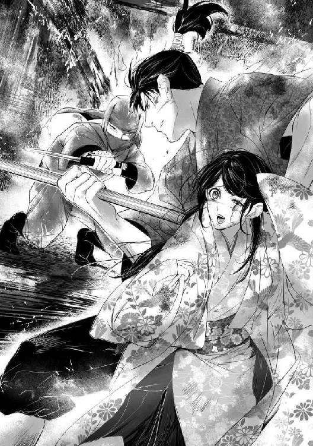
葛葉は暗い柿渋色の筒袖の着物に裁付袴、手甲、頭には同じ色の布をぐるりと巻きつけるという完全な忍び姿だ。全身に水をかぶってきたらしく、炎をくぐりぬけた着物からはかすかな水蒸気がたちのぼっていた。
美緒を後ろに庇い、崇晃は槍を構え直した。
「......やはり生きていたか。死体が消え、見張りが殺されていたからには、そうに違いないと思っていたが」
死体が消えた......!? では崇晃は葛葉が生き返ったことをすでに知っていたのか。
「甲賀の毒薬使いを甘く見ていたようだね！」
葛葉は指に挟んだ針のように細い手裏剣を打ち、崇晃が槍で薙ぎ払った隙に間合いに飛び込んだ。
逆手に持った刀で喉を掻き斬ろうと迫る。崇晃はとっさに槍の石突きを床に突きたてて身を反らし、同時に真下から蹴りを放った。間一髪飛び退いて、葛葉はふたたび間合いの外に逃れた。
「さぞ驚いたろうねぇ......。あんたの仕掛けた罠に余十郎が嵌まってくれて」
ちっと不快げに崇晃が舌打ちする。
「美緒を狙っておまえが出てくると思ったんだがな......」
（あ──。お寺の襲撃......！ あれ、葛葉をおびき寄せるためだったんだ！）
やっと、あのときの崇晃が奇妙な反応をしていた理由がわかった。葛葉を捕らえるどころか、よりにもよって信用していた部下の裏切りに遭ってしまったのだ。動揺するのも無理はない。
「あんたがここにいるってことは、余十郎はくたばったようだね」
「えっ......」
美緒はまじまじと崇晃を見つめ、彼が負傷していることに初めて気付いた。
「た、崇晃様っ」
「大事ない」
「でも、血がこんなに......！」
「心配いらないよ。ふたりまとめてすぐに殺してあげるからさ......。そう......、好いた男と一緒なら、もう戻っては来ないだろう」
「何言ってるの!?」
「──この女は美緒を恐れているんだ。病死に見せかけて首尾よく始末したはずなのに、あっというまに戻ってきたからな......」
「え... ...？」
ぽかんとする美緒を、葛葉は厭わしげな目つきで見やった。
「薄気味悪い娘だよ......。澪姫が死んだその日のうちに、どこからともなく現れるなんて......まるで亡霊のようじゃないか」
（ぼ、亡霊......!? 薄気味悪いって......、あたし、不気味な奴って思われてたの......!?）
葛葉のよそよそしい態度が、まさかそんな理由だったなんて──。
だが、自分が殺した姫にそっくりな娘が間を置かずに現れたりしたら、いかに葛葉が冷徹な忍びでも動揺せずにいられなかったのかもしれない。現代とは違い、幽霊だの祟りだのも本気で信じられている時代だ。
葛葉はギラリと目を光らせた。
「立て続けに死なせちゃ疑われるからね......。あたしが何もしなくても、偽者とバレれば勝手に殺されてくれる。そう思ったのに、真田も藤波も口を拭って澄ましてるんだから......。さっさと始末しろとせっつかれても藤波の女忍びが四六時中張りついてて機会がない。やっと捕まえたんだ、今度こそ確実に殺っておかないと」
まるで自分に言い聞かせるように低く葛葉は呟いた。
「──葛葉。おまえの本当の主は愁雲院だな？」
「え!? 崇政じゃないの!?」
葛葉は崇晃を睨んだまま答えない。
「甲賀者には公家に仕える忍びもいると聞く。愁雲院は実家を通じ、ひそかにおまえを呼び寄せた。自分にとって邪魔な人間を始末させるために」
「邪魔な人間って......、──！ それじゃ、側室の子が全員死んだって言うのも......!?」
葛葉は小馬鹿にしたような薄笑いを浮かべた。
「もちろん、あたしがやったのさ。あの方には、京にいた頃からお仕えしていたんだ。お嫁入りされたときに里へ戻されたけど、ふたたびあたしをお召しになってくださった......。あの方の望みを叶えるのがあたしの使命だ......！」
葛葉の言葉にも表情にも迷いはない。美緒は震える指先を握り込んだ。
「......っ、だからってあたしを──澪姫を殺したっていうの!?」
「真田の養女になんぞなるからさ。その男の後ろ楯になられちゃ困るんでね。──さぁ、今度こそ間違いなく死なせてあげよう。そのためにわざわざ戻ってきたんだ。まったく、その男がやたらしぶといせいで計画が台無しだよ」
「か、勝手なこと言わないで!!」
「あの世でふたり仲むつまじく暮らせばいいじゃないか。そうすれば、あんたの望みもあの方の望みも叶う。一石二鳥ってもんさ！」
葛葉は哄笑しながらふたたび手裏剣を打った。
「──させるか！」
崇晃が槍で薙ぎ払う。間合いに入るきっかけが掴めず、葛葉は顔をゆがめた。その間にも火の手はどんどん迫ってくる。崇晃は槍を構えながら低声で呼びかけた。
「葛葉。おまえは優秀な忍びだ。内部の手引きがあったとはいえ、白烏衆の本拠地で尻尾も掴ませず巧みに立ち回っていたんだからな。......もうあの女に仕えるのはやめて里に帰ったらどうだ。どのみち愁雲院が裏で糸を引いていたことは真田に知られた。もうおまえを使って何かすることはできない」
葛葉は顔をゆがめた。
「だったらなおさら、これが最後のご奉公だ！」
葛葉はふたたび針状手裏剣を連打すると、薙ぎ払った崇晃の脇が空いたところを狙って四方手裏剣を放った。完全に避けることができず、崇晃の肩口が切り裂かれる。
「くっ......！」
「どうした、動きが鈍ってきたぞ。余十郎にやられた傷が痛むのだろう？ あれの刀は刃に細工がしてあって、傷口がふさがりにくいからね......。これだけ動けばだいぶ開いただろう」
慌てて崇晃の前身を覗き込み、美緒は悲鳴を上げた。切り裂かれた襟を中心に、手拭いから染み出した出血で小袖の胸は真っ赤に染まっていた。
「た、崇晃様っ......」
崇晃は葛葉に目を据えたまま小声で囁いた。
「美緒。後ろの座敷、床の間の脇が隠し扉になってる......。そこから先に逃げろ」
扉の開け方を指示された美緒は、目を瞠って強くかぶりを振った。
「いや！ ひとりで逃げるなんてできないよっ......」
くくっと葛葉が笑う。
「逃げても無駄さ。あたしの手裏剣には毒が塗ってある。かするだけでも充分。こいつを殺したらすぐにあんたも殺してあげるから、おとなしくそこで待ってな」
「早く行けっ」
「やだ！ 絶対行かない！ 離ればなれになるくらいなら一緒に死んだほうがましだよっ」
美緒は勝手に崇晃の脇差を抜き、両手で握り締めて葛葉を睨んだ。
「やめろ、美緒っ」
「おやおや、勇ましいこと。可愛いねぇ」
「......っ」
崇晃は眩暈を起こしたようにふらついて槍にすがった。
「崇晃様！」
「ほほ......、そろそろ毒が回ってきたようだね」
がくりと崇晃が膝をつき、美緒は悲鳴を上げて取りすがった。
「崇晃様、しっかりして！」
「......下がってろ」
美緒にしか聞こえない声で崇晃が囁く。美緒は激しくかぶりを振った。
「いや！」
「いいから、少し、下がっていろ......！」
ギラ、と鋭い眼光で睨まれ、美緒はびくっとした。慌てて後退ると、崇晃はますます前のめりになった。槍を握っていることも難しくなったのか、手から離れた片鎌槍ががらんと床に落ちる。
葛葉は素早く槍を蹴り飛ばした。崇晃は身体を折り、苦しそうに傷口を押さえている。葛葉は胸がすいたような哄笑を上げ、高々と刀を振り上げた。
「死にや────!!」
勝ち誇った葛葉の叫び声と同時に、鞘走る音が美緒のすぐ前で響いた。我に返ると、片膝を立て、大刀を抜き放った崇晃の向こうで、葛葉が宙に舞っていた。
くの字に折れた身体の腹から胸にかけて、真一文字に切り裂かれている。葛葉は床に勢いよく叩きつけられ──、そのまま二度と動かなかった。
崇晃は傷で動けなくなったふりをして葛葉を引きつけ、居合──抜刀術で勝負を決したのだった。
がつっ、と切っ先を床に突きたて、崇晃が大きく肩を上下させた。
慌ててにじり寄ると、崇晃の顔は土気色に変わり、脂汗が滴っている。
「崇晃様っ......！」
「......行くぞ、美緒。ここはもう......もたん......」
いつのまにか周囲は炎に囲まれていた。美緒は崇晃の肩を支え、よろよろと歩きだした。
襖を開けるとそこは広々とした座敷で、すでに両側から火の手が迫っている。
崇晃は刀で身体を支えながら歩を進めているが足取りはひどく重い。息は荒く、ますます苦しげになってゆく。
「がんばって、崇晃様！ あと少しだからっ」
「ああ......」
ぜいぜいと喘ぎながら崇晃は頷いた。
「──なぁ、美緒......。おまえの、生きる、後の世に......、俺は、いないのか......？」
「何言ってるの!?」
美緒は肩に回した崇晃の腕をぎゅっと掴んだ。こぼれそうになる涙を懸命に抑え込む。
「あたしたちは、ずっと一緒だよ。そのために戻ってきたんだから......、そのためだけに、戻って、来たんだから......っ！」
「美緒......」
やっと床の間にたどり着いた。火の回りは予想以上に早く、炎に包まれた天井が次々と崩落し始める。隠し扉を開けると内部は押し入れくらいの空間になっており、上下に四角い蓋のような扉が取り付けてあった。
上の羽目板の隙間からチラチラと光が洩れている。すでにすぐ上まで火が押し寄せているのだ。
崇晃は血まみれの手で床の扉を開け、美緒を促した。
「さぁ、早く降りるんだ」
四角く切り取られた穴のなか、闇に向けて梯子が伸びている。美緒はふるふるとかぶりを振った。
「崇晃様が先に......」
「いいから行け！」
崇晃は美緒の腕を掴み、有無を言わせず穴に押し込んだ。梯子に掴まって見上げると、上からパラパラと火の粉が降ってきた。
「──!?、崇晃様っ......」
叫んだとたん、脆くなった天井が一気に崩れ落ちる。
驚いて足を踏み外し、転げ落ちそうになった美緒の手首を、はっしと崇晃が掴んだ。次の瞬間、落ちてきた木材がその背中を直撃する。
「............ッ!!」
「崇晃様──!!」
「......行け、美緒......」
手首を掴む指先がゆるむのを感じ、美緒は必死に彼の手を握り締めた。
「やだっ......!! 一緒じゃなきゃ......いや......！」
ふ、と崇晃が微笑んだ。
「心配するな。今度は俺が逢いに行く」
離すまいと握り締める指を、一本一本崇晃は解いていった。血と汗で手が滑り、掴んでいられなくなる。
「いやぁ......っ」
「──またな」
するりと指が離れる。優しく微笑んだ崇晃の顔が、炎のなかに小さくなっていき......。
「────!!」
あた、し......、は。
暗闇の底に落下しながら美緒は思い出していた。
あたし......、本当に『澪姫』だったんだ......。
光り輝くような青空。満開の藤。陽光を弾いてきらめく金扇──。
優雅に舞う美しい少年を、感嘆の瞳で見つめていたのは、澪姫だった......。
わたしのために、藤の花の精が涼しげな少年の姿となり、舞って見せてくれたに違いない。
だって、二度とは逢えなかったから。明日もまた舞を見せてくれると約束したのに、どんなに待っても来なかった。
藤は散り、風に消えた。
やがてそんな出来事も夢のごとくおぼろになり......、わたしは真田様の養女になって嫁ぐことになった。お相手の名は、藤波崇晃様。
藤──。
ふと、しまい込んでいた記憶が揺らめいた。
いただいたお手紙には型通りの挨拶の他、とある寺の勧進興行で出会いはしなかっただろうかと控えめに尋ねていた。
一瞬で胸が熱くなった。
なんと不思議な縁だろう。あのときの少年に嫁入りすることになるなんて......！
どんなに逢いたかったか、すぐにも書き送ろうとして、ふと思いついた。少しだけ、意地悪してしまいましょう。約束を破って、来てくれなかったことへの仕返しよ。
わざと曖昧に返事を書いて焦らした。遠回しに確かめるような手紙が来れば、さらにはぐらかす返事を送った。本当のことを言うのは会ってからのお楽しみ。婚儀を上げたら教えてあげる。
そうして指折り数え、嫁ぐ日を待ちわびていたというのに。
胸が重苦しく、締めつけられるような発作が起きるようになって......。息苦しさに喘ぐ日々が続き、一度床に就いたらもう起き上がれなかった。
日に日に体調は悪化し、お兄様がひそかに呼び寄せた医者に診てもらうと、心の臓が弱っていると言われた。
処方された薬を飲んでも一向によくならず、わたしは焦燥に悶えた。
このままでは嫁ぐ前に死んでしまう......！
そんなのいや。せめて一目、崇晃様にお逢いしたい。婚姻に差し支えてはいけないと、病のことは伏せておくようお兄様に頼んだけれど、やっぱり伝えてもらえばよかった。そうすれば、お見舞いに来てくださったかもしれないのに。
そうよ。以前出会ったことを素直に認めていたら......、崇晃様はすぐに駆けつけてくださったでしょう。これは意地悪して心を弄んだ罰なの......？
文を書きたくても、もうわたしは起き上がるどころか、喋ることさえままならなくなっていた。
苦しい息の下で、ただ願い続けた。崇晃様に逢いたいと......。
意識さえ朦朧とし始めたある日、わたしは知った。わたしを苦しめていたのは『病』などではなかったのだ。
医者が処方した薬を、葛葉がこっそりすり替えているのをわたしは見てしまった。
見られたことに気付いても、葛葉は顔色ひとつ変えなかった。それどころか、ひどく愉しげに含み嗤ったのだ。
バレたところで、もうわたしには真実を訴える力など残っていないことを知っていたから......。
葛葉はわたしの目の前で、崇晃様からいただいた大切な文を全部燃やしてしまった。声も上げられず、ただ涙をこぼすわたしを眺め葛葉は嘲り声で囁いた。
『心配することないよ。あんたの許嫁も、すぐにあの世へ行くんだから......』
ああ、葛葉は崇晃様まで殺すつもりなのだ......！ そんなこと、させるものか。なんとしても崇晃様を守らなきゃ......！
生きたい。
このまま死ななければならないのなら、生まれ変わって戻ってきたい。
崇晃様に本当のことを告げたい。ずっと覚えていたと。もう一度逢えるのを心待ちにしていたのだと。
初めから素直に言えばよかった。駆け引きなどするべきじゃなかった。
ごめなさい、崇晃様。わたし、きっと戻ってくるわ。どんなに遠い時代に生まれ変わっても、必ず戻ってくるから──。
伸ばした指先が空を掴む。底なしの絶望のなかへ、わたしは墜ちてゆく。
どうしてすぐに思い出せなかったんだろう。思い出していたら、こんなことにはならなかったのに。崇晃様を守れたはずなのに。
ずっと一緒に、いられたのに────。
『おまえの生きる後の世に、俺はいないのか......？』
だから、逢いに来たのよ。
側にいたくて。
いつまでも寄り添っていたくて。
一緒に生きていきたくて。
「......たかあき......さま......」
夢みたものは、幻にすぎなかったの......？
「────みお！ ......美緒、美緒ーっ」
耳元で怒鳴られて、ぱちっと目が覚めた。
見開いた視界のなか、大勢の人が覗き込んでいる。
──お姉ちゃん、お母さん、お父さん。白衣を着た、医者らしき人。あとは、看護師さん......、かな？
「よかった、美緒！ やっと目が覚めたーっ」
わぁっと泣きだした莉緒にがばっと抱きつかれ、美緒は目を白黒させた。
「ちょ......、お姉ちゃん、どうしたの!?」
「どうしたのじゃないよっ。あんた一週間も目を覚まさなかったんだよ!?」
「一週間......!?」
「本当に心配したわ......！」
姉に代わって今度は母親が抱きついてくる。その後ろで、父が心底安堵した顔で涙ぐんでいた。
「あ、あれ......？ お父さんたち、いつ帰国したの？」
「何のんきなこと言ってんのよ！ まったくもうこの子はーっ」
「り、莉緒。意識が戻ったばっかりなんだから......」
泣きわめきながら妹の頭をぐりぐりする莉緒を、まぁまぁと両親がなだめる。
脈拍を測ったり、ペンライトで瞳を覗き込んだり、聴診器を当てられたりした挙げ句、異常はないようですと言って医者たちは出ていった。
家族に囲まれ、美緒はきょろきょろと室内を見回した。
「......ここ、どこ？」
「上田の病院よ。美緒たちは高速道路で事故に巻き込まれたの。......覚えてない？」
母親の言葉に、あ、と小さく美緒は呟いた。
『上田真田まつり』に行く途中、渋滞で止まったところ、気付くのが遅れた後続車に追突されたのだ。
勢いで押し出されて前の車にぶつかり、サンドイッチ状態になったものの、エアバッグが作動して事なきを得た。
ふたりとも衝撃で失神し、莉緒は交通警察隊や救急車が到着する頃には意識を取り戻したのだが、美緒は病院に運ばれても目が覚めなかった。
外傷はなく、エアバッグのおかげで頭も打たなかったはずなのに、何故か意識が戻らない。慌てて帰国した両親も病院に駆けつけたが、何の変化もなく一週間が過ぎた。
それが先程いきなり脈拍や心拍数が低下し、危篤状態に陥った。そして家族全員が懸命に名前を呼び続けていると、やっと意識が戻ったのだ。
喜ぶ家族に囲まれながら、美緒は複雑な心境だった。
現代に戻って来られたのは、もちろん嬉しい。いや、そもそも身体はずっと現代にあったわけで......、戦国時代ではどうなっていたんだろう？ 澪姫の遺体は別にあったのだし、あれは確かに自分の身体だった......よね......？
（崇晃様......、どうなったんだろう......）
美緒は自分の手をじっと見つめた。
離すまいと握り締めた崇晃のごつごつした手の感触は、今でも苦しいほど鮮やかなのに。
現代で危篤になったときにもしも死んでいたら......、あの時代で崇晃とずっと一緒にいられたのだろうか。
掌に、ぽとりと涙が落ちる。
気付いた莉緒が慌てて顔を覗き込んだ。
「どうしたの？ どこか痛いの？」
美緒は黙ってかぶりを振った。涙は次々に盛り上がって、頬を伝い落ちてゆく。
母親が驚いて枕元に座り、美緒を抱き寄せた。
「大丈夫よ、何も心配しなくていいのよ」
顔をゆがませ、うつむいて激しく首を振る。困惑する家族の視線から逃れるように美緒は両手で顔を覆った。
痛い......。胸が、切り裂かれるみたいに。
崇晃に逢いたい。逢って無事を確かめたい。
だけどあれは四百年以上も昔の出来事。夢でなかったとしても、あのとき崇晃が無事に生き延びたとしても、彼はもうこの世にいないのだ。
（助けられなかった......、結局......）
逢いたくて、逢いたくて、時を超えて駆け戻ったのに。
（なんのために、あたしは......っ）
堪えきれず、ついに美緒は声を上げて泣きだした。
手を束ねておろおろする家族に囲まれながら、美緒はたったひとり戦国の世に投げ出されたときよりも深い孤独と絶望のなかに沈んでいった。
事故から一か月ほど経った、ある日のこと。
美緒はふたたび、いや、初めて上田を訪れた。結局、真田まつりは見そびれたし、誕生祝いもおじゃんになったということで、姉に頼んで連れてきたもらったのだ。
上田城を見学して回りながら、美緒はぼんやりと『夢』を思い出していた。
真田昌幸公の気概みなぎる精悍な面影。山手様の優しく柔和な微笑み。そして弁丸の利発で人懐こい笑顔。
（思えばすごい『夢』だったよね......）
真田氏の養女になって嫁に行く。しかも日本史上の人物でも非常に人気の高い真田幸村が『弟』だなんて。
（ほんと......、荒唐無稽な『夢』だったわ......）
可愛く素直な人柄ながら、怜悧でおとなびたところもあった弁丸は、その後上杉景勝や豊臣秀吉の下へ人質として出仕し、元服して源次郎信繁を名乗った。関ヶ原では父と共に西軍方となって東軍に付いた兄と敵対し、破れて九度山に流され......、ついには大坂城の落城とともに散った。
藤波崇晃の名はどこにも見出せなかった。真田氏は忍者を使っていたらしいが、白烏衆の名称は出てこない。記録が残っていないのか、そもそも実在しなかったのか......。
夢であろうとなかろうと、語りあい、笑いあった人たちは皆遠い時の彼方だ。
上田城を見学した後は、真田氏が上田城に移る前の居館があった御屋敷公園へ行った。ちょうどつつじ祭が開かれていて美緒はまたもや『夢』を思い出してしまい、どうしようもなく涙腺がゆるんで困った。
「まだ時間あるし、あそこにも寄ろっか。えーと......、信濃国分寺史跡公園」
車に乗り込むと、ナビを操作しながら莉緒が言い出した。
「別にいいけど......。何があるの？」
「んー、豪華な藤棚があるらしいんだよね」
────藤。
どくんと心臓が高鳴る。
「盛りは過ぎちゃったかもしれないけど、まだ咲いてると思うんだ。──実は、そこで彼と待ち合わせしてんの」
ぺろっと莉緒が舌を出し、美緒はげんなりと眉を垂れた。
「またあたしをデートのダシに使ったわけ？」
「違うよぉ。彼氏の弟くんが美緒のこと紹介してほしいんだって。本当はこの前の真田まつりのときに会わせる手筈だったんだけど......」
「ちょっ、何それ!? 勝手にセッティングしないでくれる!?」
「いいじゃん、別にー。ハンサムくんだよ？ きっと美緒も気に入ると思うなー。年はね、美緒よりひとつ上の大学一年生」
「興味ないから！」
「そんなつれないこと言わないで。あんたが意識不明で入院してるときも、わざわざお見舞いに来てくれたんだよ？」
「お兄さんにくっついてきただけでしょ。あたしは会ってないし、知らないよっ」
ぷいっと美緒はそっぽを向いた。慰めようとしてのことなのだろうが、はっきり言って余計なお世話だ。崇晃に『失恋』したばかりの美緒は、男の子のことなんか当分考えたくもない。
「そんなにいやなら挨拶するだけでいいからさ。お見舞いに来てくれたお礼はちゃんと言いなさい。それくらい当然の礼儀でしょ」
「......わかった」
むすっとした顔で美緒は頷いた。
やがて史跡公園に到着し、藤棚を見に行った美緒は歓声を上げる姉の傍らで呆然とした。それは思ったよりずっと大きな藤棚だった。五〇〇平方メートルくらいはありそうだ。
「うわぁ、すっごい長ーい。この房、一メートルくらいありそうじゃない？」
「うん......」
見事な花房は確かにそれくらいありそうだ。すでに散り始めた房もあるが、まだまだ満開と言っていい。
突然、脳裏に『藤』の謡が浮かび上がる。
かかれる松に うす花の
色紫の 雲の羽袖を かへす舞姫
ピルルルルッ。
雅びな風情を帳消しにするような、甲高い電子音が鳴り響く。莉緒がバッグからスマホを取り出して耳に当てた。
「もしもし？ ──うん、今着いたとこ。どこにいるの？」
きょろきょろと辺りを見回した莉緒は、耳を傾けるうちに眉を吊り上げた。
「えーっ、そっち行ってんの!? ──何？ 国宝？ うーん、ちょっと待って。──美緒！ あいつ、こっちじゃなくてお寺のほうにいるんだって。道路の反対側。なんでも国宝の三重の塔があるらしいよ」
「......お姉ちゃんも見て来たら？」
藤を眺めたまま上の空で美緒は答えた。
「あんたは？」
「あたしは藤を見てるから、いい......」
「そお？ じゃあ、ちょっと行ってくるね」
スマホで喋りながら莉緒が小走りに駆けだして行く。美緒はぼんやりと藤を眺め続けた。
道路を挟んだ反対側の信濃国分寺。三重の塔の前で、スマホを切った兄を見やって彼は尋ねた。
「何だって？」
「莉緒はこっち来るけど、美緒ちゃんは向こうで藤を眺めてるって」
「藤、か......」
唇に、ふわりと笑みが浮かぶ。
「......じゃあ、俺はそっちへ行こうかな」
「おまえ、美緒ちゃんわかんの？ 写真で見ただけだろ。病院では眠ってるとこをちらっと見ただけだし」
「もちろんわかるよ」
にっと笑って彼は歩きだした。心配そうに見送っていた兄が、おーいと呼びかける。
「初対面であんまり馴れ馴れしくするんじゃないぞ？ 気持ち悪がられるからなー」
苦笑して手を振った弟を見送り、兄は「拒否られてもめげるなよ」と呟いたのだった。
美緒はぼぅっと立ったまま藤を眺め続けていた。
時折吹く風で、ふわりふわりと花房がそよぐ。
歌へや唄へ 折る柳 落つる梅
あるひは花の 鶯の囀りの
──やっぱり、夢だったなんて思えない。
思いたく、ない──。
「......たかあき、さま......」
囁けば、振り向いて優しい笑みを浮かべる彼の姿が目の前に見えるようで──。
背後でかすかな足音がした。
「──見事なものだな」
呟かれた声に、どくりと鼓動が跳ねる。
声の匂ひも 深みどり
「これが植えられたのは明治時代だが......、今も昔も、花は変わらない」
ざぁっと強い風が吹き、一斉に揺れなびいた花房から甘い芳香が立ちのぼる。
おそるおそる振り向いた美緒は、そこに佇む人影を認めて絶句した。
ひとりの青年が、美緒を見つめてにこりと笑む。
「............!!」
打ち散らし 吹き払い
花も飛び行く 胡蝶の夢の
「今度は俺が逢いに行くと、約束しただろう？」
懐かしい、声──。
あの人よりも、四、五歳くらい若い。髪形も服装も、もちろんあの頃とは全然違う。
だけど、変わっていない。
その面影。
見つめる瞳。
深い想いのこもった静かなまなざしは──。
「崇晃......様......っ」
走り寄り、無我夢中で抱きついた。涙がこみあげ、激しくしゃくりあげる。
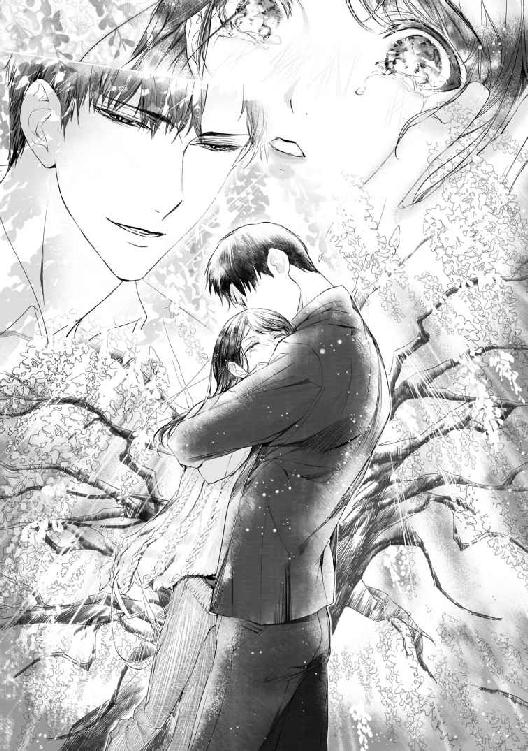
美緒を抱きしめ、背中を優しく撫でて彼は囁いた。
「あきら」
「......え？」
「今の名前。水無月晃って言うんだ」
「みなづき......って......。──！ まさか」
「美緒の姉さんの彼氏。あれ、俺の兄貴なんだ」
「え────っ!!!!」
そんな近いところにいたの......!?
「美緒がお姉さんと一緒に写ってる写真、兄貴に見せてもらってすぐに気付いた。一気に思い出して、熱が出たよ」
三日くらい寝込んだ、と苦笑する崇晃──いや、晃をまじまじと見つめ、美緒はふたたびぎゅっと抱きついた。
「嬉しい......！ もう二度と会えないと思ったから......、あれは全部夢なんだと思い込もうとしてたの......」
「夢じゃない。......だろ？」
そっと頬に触れた指先は、しっかりと温かくて。
「......うん」
重なった唇は、あのときと同じように熱くて、たまらなく愛しくて......。睫毛を濡らした涙をぬぐってくれる指の確かさに、また涙が込み上げる。
ふたりは藤棚近くのベンチに座り、手を握って見つめあった。
「──兄貴に頼んで美緒と会う手筈を整えてもらったんだけど......、事故に遇ったって聞いて心臓が止まるかと思った。お見舞いに行っても、まだこっちでは知り合ってないし、手を握るわけにもいかなくて......やきもきしたな」
美緒は頬を染め、晃の手をきゅっと握った。
「あたし......、そのあいだに戦国時代に行ってたの」
「もしかしたら、そうかな、と思った」
「ねぇ、あれからどうなったの？ 火事の後、もしかして崇晃様、し......死んじゃったり......？」
怖くて尻すぼみになると、晃はにこりとした。
「助かったよ」
「本当!?」
「ああ、背中にひどい火傷は負ったが......。前も斬られてたし、毒にもやられて、けっこう満身創痍だったな。時間はかかったけどどうにか復帰して、それから数年は生きた」
「えっ......、数年......だけ......？」
晃は静かに微笑んだ。
「三十くらいで死んだらしい。真田軍に従って出陣したところまでは大体思い出せるんだが、その後は曖昧で......。たぶん、忍城の戦いあたりじゃないかと思う」
美緒は呆然とした。
あの時代に残れたとしても、数年後には別れが訪れたということ......？
まるで自分が藤波屋敷にいて、崇晃が死んだと聞かされたかのような気分になる。
「美緒。俺は生きてるよ」
晃が囁いて、美緒の手を握り締めた。
「うん......」
温かい手。彼は生きてる。あたしの側にいてくれる──。
「......藤波家の人たちは、どうなったの？」
「珠洲は翌年嫁に行った。相手は真田の家臣だ。信幸殿に仕えていたから、たぶん関ヶ原の後も大丈夫だったんじゃないかな」
「愁雲院様は？」
「珠洲の側にいたいと言うので嫁入り先が居城の近くに庵を建ててくれたんだが、一年も経たずに病気で亡くなった」
「そう......」
「藤波家そのものは俺の代で終わったかもしれないな。死んだ後のことはわからないが......。血筋は珠洲が残してくれたと思う」
「そうだね......。珠洲様が幸せだったら......いいな......」
「俺の知る限り、夫婦仲はよかったぞ？」
美緒は微笑んだ。珠洲姫の勝気な笑顔がとても懐かしい。
「会いたいな。でも......、もうみんな、いないんだね......」
松風。村雨。珠洲。そして弁丸......。
「......美緒がいなくなって、皆寂しがってたよ。遺体がなかったから、きっと元の時代へ帰ったんだろうと......」
「うん......」
美緒は涙をぬぐって微笑んだ。
「もう会えないけど、覚えてるから。あたし......、みんなに会えてよかった。すごく大事な思い出だよ。ずっと忘れない。夢じゃ......なかったもの......」
「ああ、夢じゃない」
崇晃が囁いて、もう一度優しくくちづけた。ふたりは寄り添って、風にそよぐ藤の花を眺めた。
ふと思いついて美緒は呟いた。
「......やっぱり、崇晃様は藤の精だったのかも」
「じゃあ、美緒は花を揺らす風の精だな」
美緒は顔を赤くして晃を見上げた。
「崇晃様......、相変わらずさらっと言うよね」
「今は晃」
たしなめるように指先で額を突つかれ、ごめんと美緒は笑った。
「──うん、晃」
晃、大好き......と吐息混じりに囁いて、あの頃と変わらない、広く温かな胸のなかで美緒は濡れた睫毛をそっと閉じた。
春のみじか夜 明くる横雲に
光影さす 朝日山の
梢に青葉や 残るらん──。
こんにちは。上主沙夜です。このたびは『戦国花嫁 時空を翔ける恋』をお手にとってくださってありがとうございました。お楽しみいただけましたでしょうか。個人的に、戦国時代を舞台にしたファンタジー（ホラー？）を書きたいなぁと以前から思っていたのですが、なかなか勉強できずにいたところ、日頃お世話になっている編集さんから「現代の女の子が戦国時代にタイムスリップするロマンスはどうですか」とお誘いいただきまして。これさいわいと飛びついた次第です。
当初は実在の武将は出さないようにとのお話だったので、架空の領国、架空の人物でストーリーを作っていたところ、いきなり真田幸村（信繁）を絡めるという方向になりまして......。時代設定が50年くらいずれて、読むべき資料も倍増......。しかし何より悩ましかったのは、幸村（信繁）という実在の人物を自分なりにどのように解釈し、どうやってフィクションに取り入れるか、でした。
一般的にとても格好いいイメージのある人です。完全にヒーローキャラ。しかしそんなふうに書いたら本来のヒーローが食われてしまう。かといって当て馬には絶対したくない。幸村と恋に落ちる話ならむしろ簡単だったかもしれません。今回はあくまでサブキャラとして、しかもある程度目立たせねばならず、延々と悶々と悩みまくりました。
とにかく自分なりのイメージを掴もうと、真田一族のことを書いた本をいろいろと読み漁ったわけですが、そのうちにふっと思い浮かんだのが、お兄さんの信幸との関係でした。どうも信繁という人、甘えっ子だったっぽい。流罪になってからもお兄ちゃんに何かとおねだりしています。しかもそのねだりかたが妙に可愛い。そしてまた信幸が真面目で面倒見のいい、苦労性のお兄さんなんですねぇ。はい、そこで萌えが点火しました。兄弟愛！ これだよ、これ！ 天然な弟に苦労させられながらもどうしても見捨てられない甘～い兄！
そこで妄想が暴走すると別の話になってしまいますので抑えて抑えて。──よし、弟キャラで行こう！ これなら当て馬にならず、そこそこ目立って違和感もない。ということで、信繁にはヒロインの『弟』になっていただくことにしました。
そして改めて話を作り始めたわけですが、当初は定説に従って17～18歳に設定していた信繁が実はもっと若かったのではないかという異説を知りまして。その説のほうがいろいろとしっくりきたもので、今回はそちらに従って12歳の少年ということにしました。そこらへんのあれこれはブログに書きましたので、興味があればご一読くださいませ。
http://blog.goo.ne.jp/kamisusaya
さて、資料を読んでいるうちに、信繁よりむしろ兄の信幸のほうに関心を持ってしまったのですが、さすがに話には登場させられませんでした。残念。わたしのイメージではすごく格好いい人なんですよね。苦労人で自制心が強く、なおかつ反骨精神を秘めた人。そして家族思いで愛妻家。おお、理想のヒーローではありませんか！
キャラクターの話はこのくらいにして。もうひとつお断りしておかねばならないことがあります。このお話では『藤』という謡曲を引用しているのですが、実はこの曲目、成立が江戸中期で戦国時代には存在しておりません。しかし話を作り始めた当初から藤の花が何故か背景イメージにあって、どうしても使いたかったのです。この曲もタイムスリップしてきたんだ、ということでご容赦ください。『藤』は特に深い内容とかストーリーとかはなくて、とにかく綺麗で美しいファンタジックな愛すべき小品といったところでしょうか。その辺をヒーローの想いとかぶせてみました。
余談ですが作者は大昔、大学の能楽サークルで『藤』のお仕舞を舞わせていただいたことがあります。あまりに昔すぎて節回しもかなり怪しくなってしまいましたが、本当に綺麗な謡で、ずっと心に残っていたんですねぇ。琴線に触れる記憶というものはいつまでも忘れがたいものです。
あっ、気付いたら主役カップルの話を全然していない。崇晃の『その後』も設定してありますが、ロマンス的にちょっとどうなのよ、と思われるので伏せておきましょう。ただ、藤波家の本流は信繁の最期に立ち会い、ともに滅びることになります。書きたいけどロマンス関係ないので無理かな。
再会後の美緒と崇晃は現代的な苦労をしつつもラブラブ夫婦になるんじゃないかと思います。お互い学生なんでだいぶ先でしょうけど。同じ大学に行きたくなった美緒が模試でＣ判定もらって落ち込むとか、晃の同期の美人に見下されて頭に来たりとか、晃に勉強教えてもらいながら戦国時代の新婚生活を思い出して気が逸れちゃってたしなめられるとか、いろいろありそうですね。
最後になりましたが、麗しい挿画で作品を彩ってくださったＫＲＮ先生、ありがとうございます。素晴らしすぎる表紙をポスターにして飾りたいです！ お声がけくださった編集さん、版元さん、本作品に関わり、お力添えいただきましたすべての皆さんに感謝します。ありがとうございました。
上主沙夜
ふだん洋風メインに書いてますが実は和テイストも大好きです。初の戦国時代、実在の人物を出すのもタイムスリップものも初ということで緊張しつつ、趣味もめいっぱい投入しました。楽しんでいただけたら嬉しいです。
猫撫でイラストレーター
素敵なお話の挿絵が担当できてとても幸せです。
今年は藤を見に足を伸ばしたいなぁと思いつつ。
ショコラシュクレノベルズ
戦国花嫁
時空を翔ける恋
小説 上主沙夜
イラスト KRN
発行 株式会社キルタイムコミュニケーション
〒104-0041 東京都中央区新富1-3-7ヨドコウビル1Ｆ
編集部 TEL 03-3551-6147／FAX 03-3551-6146
販売部 TEL 03-3555-3431／FAX 03-3551-1208
URL http://ktcom.jp/
©SAYA KAMISU 2016
当ファイルは、ショコラシュクノベルズ『戦国花嫁 時空を翔ける恋』（2016年5月6日 初版発行）に基づいて作成しております。
※本作品の全部あるいは一部を無断で複製・転載・配信・送信したり、ホームページ上に転載することを禁止します。本作品の内容を無断で改変、改ざん等行うことも禁止します。また、有償・無償にかかわらず本作品を第三者に譲渡することはできません。
※本作品は電子書籍配信用に再編集しております。